Chapter 11
- 1. Neuron Structure
- 2. Action Potentials
- 3. Synaptic Transmission
- 4. PNS and CNS
- 5. The Brain
Biology 30 · Unit A
The nervous and endocrine systems use different signals, but they solve the same problem: keeping internal conditions within workable ranges while the world changes around you.
Begin with Neuron StructureYour route
The unit follows the same order as your class notes: Chapter 11 nervous-system topics, Chapter 12 sensory topics, and Chapter 13 endocrine topics.
Course map
Lesson 1 · Chapter 11
How does a message travel from a touch receptor to a muscle?
Learning goal
I can identify the main parts of a neuron and explain how glial cells and myelin support rapid signalling.
Before you begin
You should know that cells have membranes, cytoplasm, and a nucleus. Everything else is introduced here.
In the textbook
Chapter 11 · pp. 367–372 Q1, 2, 4–8; p. 384 Q3
Four anchor words
These four anchors will help you enter the lesson. The full list below includes every new supporting term.
·
·
·
·
·
·
·
·
·
·
·
Learn · Part 1
A neuron is a cell that handles information. Its shape supports four jobs: receive a message, combine information, carry an electrical signal, and pass information to another cell.
Dendrites receive much of the input. The cell body contains the nucleus and keeps the cell working. The axon carries an electrical signal away from the cell body. At the far end, axon terminals communicate with another neuron, muscle, or gland.
These labels describe a typical pattern. Neurons vary in shape, so follow the direction of information instead of expecting every neuron to look identical.
The cell body also contains the structures that build proteins and supply energy. Most damaged neuron parts cannot work for long without it. Dendrites and the cell body combine many incoming changes. An action potential is a brief electrical signal that is renewed as it travels along an axon. Near the start of the axon, incoming changes may reach threshold: the membrane voltage needed to start that signal. Lesson 2 explains how ions create it.
The central nervous system (CNS) is the brain and spinal cord. The peripheral nervous system (PNS) connects it with the rest of the body. A receptor detects a change; an effector, such as a muscle, carries out a response. In Part 3, you will use these connections to identify sensory, interneuron, and motor-neuron roles instead of relying on shape alone.
Build from the core idea: The core section connected each neuron part to information flow. This block compares neuron forms without turning one textbook drawing into a rule for every neuron.
A neuron's shape supports its job, but real neurons show considerable variation. A sensory neuron carries information from a receptor toward the central nervous system. Some sensory neurons have a long branch that carries the signal past the cell body, while others use a different arrangement. An interneuron works within the central nervous system and may connect many nearby or distant cells. A motor neuron carries output toward an effector such as a muscle or gland and often has many dendrites for receiving input.
The direction of information is more dependable than a single shape label. Dendrites and the cell body receive and combine input, the trigger region begins an action potential when threshold is reached, and the axon conducts that signal toward terminals. Branching can allow one neuron to receive from many sources or send to several targets. Axon length and myelin also vary with the distance and speed required by the pathway.
When a diagram looks unfamiliar, trace function before naming form. Find the receiving region, locate the axon, follow it to the terminals, and ask where the cell sits in the pathway. Then use the evidence to classify its likely role. Avoid claiming that every interneuron is bipolar or that every motor neuron has one fixed shape; those statements go beyond what structure alone can support.
Use pathway direction as the strongest clue when a neuron's shape is unfamiliar.
| Neuron role | Information direction | Useful structural clue |
|---|---|---|
| Sensory | Receptor toward CNS | A long conducting branch may carry input inward |
| Interneuron | Between neurons within CNS | Branching supports many local or distant connections |
| Motor | CNS toward an effector | A long axon may reach a muscle or gland |
These are common patterns, not universal shapes for every neuron in each group.
Stop and Check
If an electrical signal is moving toward the axon terminals, which structure did it travel along?
It travelled along the axon. The axon is the long conducting region between the cell body and terminals.
Learn · Part 2
Neurons do not work alone. Glial cells support, protect, and maintain the conditions neurons need. Some glial cells wrap axons with layers of membrane called myelin.
Myelin acts as electrical insulation. It limits current loss from the axon between the nodes of Ranvier, which are small gaps in the covering. The action potential is regenerated at each node. This pattern, called saltatory conduction, is faster than regenerating the signal continuously along an unmyelinated axon of similar size.
Myelin does not make one action potential larger. It changes how far local current can spread before the next membrane region must regenerate the signal.
Channels are tiny protein openings that allow charged particles, called ions, to cross the cell membrane. Some channels open when the voltage across the membrane changes; these are called voltage-gated channels. Along an unmyelinated axon, neighbouring regions open these channels in sequence. Myelin covers much of a myelinated axon, so the signal is renewed mainly at the gaps, where these channels are concentrated. Lesson 2 explains how their opening produces the signal.
Glial cells have other jobs as well. They help control the chemical environment around neurons, provide metabolic support, and respond to injury. A neuron carries and processes information, while glia help create the conditions that make that signalling possible. Calling glia simple packing material would miss these active roles.
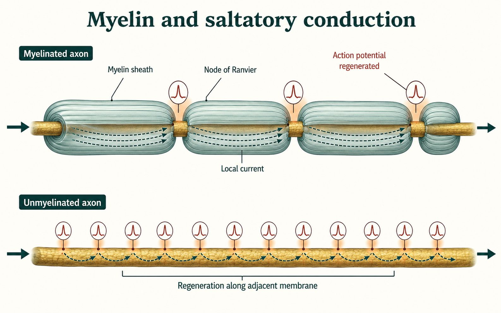
Schwann cells form myelin around axons in the peripheral nervous system. Oligodendrocytes form myelin in the central nervous system. One Schwann cell forms one segment around one axon. One oligodendrocyte can extend myelin around parts of several axons. Damage can slow or interrupt signalling, but recovery depends on the tissue and type of injury.
| Structure or cell | Main job in this lesson | Common confusion to avoid |
|---|---|---|
| Dendrite | Receives much of a neuron's input | It is not the long output fibre |
| Axon | Conducts an action potential away from the cell body | It does not carry a hormone in blood |
| Schwann cell | Can form one PNS myelin segment | It is a glial cell, not a neuron type |
| Oligodendrocyte | Can myelinate parts of several CNS axons | It does not form peripheral nerves |
Build from the core idea: The core section showed that myelin limits current loss and lets the signal regenerate mainly at nodes. This case asks what the evidence would look like when that insulation is disrupted.
Damage to myelin does not automatically destroy the axon. Instead, exposed membrane loses more current between nodes. The next node may reach threshold later, or it may not reach threshold at all. A recording can therefore show slower arrival, uneven timing, or a signal that stops before the end of the axon. The action potential that does occur is still an all-or-none event; the problem is reliable conduction from one region to the next.
The location matters. Schwann cells form myelin around peripheral axons, while oligodendrocytes form myelin in the central nervous system. Peripheral repair can sometimes be supported when the neuron survives and the pathway remains organized. Central repair faces different cellular conditions, so recovery may be more limited. Neither statement is absolute: peripheral nerves do not always recover, and some central function can improve through repair, reduced inflammation, or changes in connected pathways.
Use evidence carefully. Slower movement or altered sensation could fit many causes, so a classroom pattern cannot diagnose myelin damage. In a course case, compare conduction time or signal arrival with a control, identify where the change appears, and state what the evidence can and cannot support.
Use the control first, then look for a delay or a failure to arrive.
| Axon condition | Recorded pattern | Supported explanation |
|---|---|---|
| Myelin intact | Signal arrives quickly and consistently | Current reaches successive nodes efficiently |
| Myelin disrupted | Arrival is delayed or variable | More current is lost between nodes |
| Severe disruption | Some signals do not arrive | The next region may not reach threshold |
The patterns are synthetic and illustrate mechanism; they are not diagnostic measurements.
Watch and make sense of it
Watch for: Connect each neuron structure to the direction of information flow.
Focus: 0:00–1:38. Focus on the receiving and conducting parts. Myelin is wrapped glial-cell membrane; use the illustrated steps below for its full function.
Choose the video or the complete illustrated walkthrough. Then answer the same checkpoint to show that you made sense of the process.
Video preview loads when this lesson is open.
Work through these three illustrated steps. You can use them instead of the video, then answer the same checkpoint below.
Start at the branching dendrites. These receive much of the input from other cells. The cell body keeps the neuron alive and combines incoming signals. The long axon carries an action potential toward its terminals. A terminal can release a chemical messenger to another cell. Follow the arrows, not the shape alone: sensory, motor and connecting neurons can have different forms.
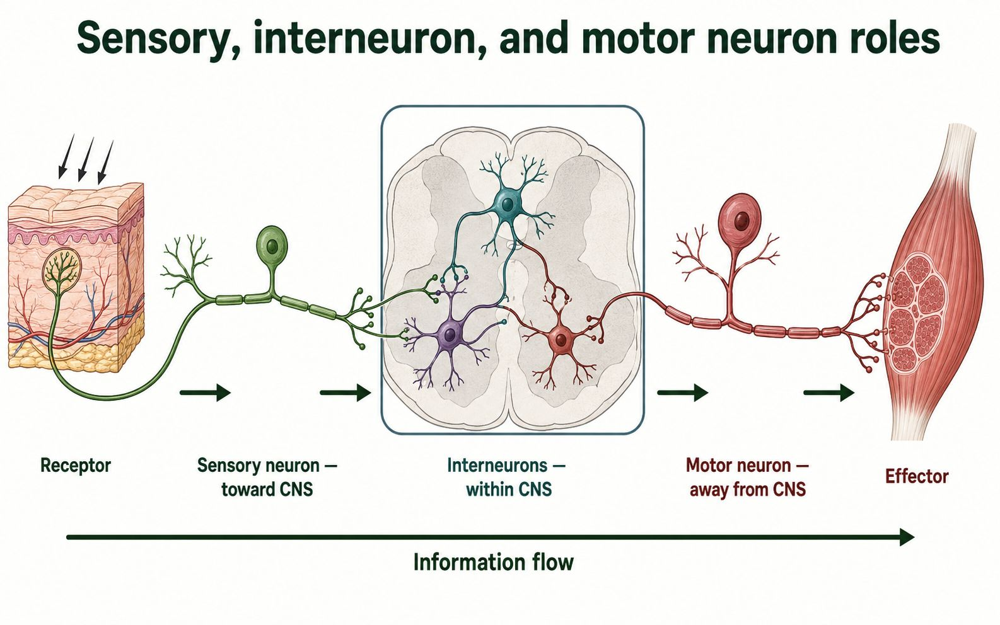
Myelin consists of wrapped glial-cell membrane. It reduces current loss between the gaps called nodes of Ranvier. Local current spreads beneath myelin, and the action potential is regenerated at the next node. This makes conduction faster than in a comparable unmyelinated axon. It does not make the spike taller or send sodium ions flying from one end of the neuron to the other.
Schwann cells form myelin segments in peripheral nerves. Oligodendrocytes form myelin in the brain and spinal cord. These are glial cells, not motor or sensory neurons. In a withdrawal pathway, a sensory neuron carries input into the spinal cord, a connection passes it to motor output, and a muscle responds. Information can also travel to the brain. The roles depend on connections and direction.
One pathway, different jobs
| Part | Job |
|---|---|
| Dendrites / cell body | Receive and combine input |
| Axon / nodes | Conduct and regenerate action potentials |
| Terminals | Communicate with a target cell |
| Myelinating glia | Form insulating membrane layers |
Question: An axon has intact terminals but damaged myelin. Must its action potentials become larger?
Reasoning: No. The damaged covering allows more current loss. Conduction may slow or fail before the next node reaches threshold. Spike size is not the same thing as speed or reliability.
Now use the checkpoint below. A choice made here is not a medical diagnosis or proof that you performed a hands-on experiment.
Sense-making checkpoint
Learn · Part 3
A sensory neuron carries information from a receptor toward the central nervous system. An interneuron connects and processes information within the brain or spinal cord. A motor neuron carries a command from the central nervous system to an effector such as a muscle or gland.
In a simple withdrawal reflex, a receptor detects a harmful stimulus. A sensory neuron enters the spinal cord, where one or more connections activate a motor neuron. The motor neuron carries a signal to a muscle. The response can begin before conscious awareness, but information also travels to the brain.
The receptor is not the sensory neuron itself in every pathway. A receptor may be a specialized ending of that neuron or a separate receptor cell that communicates with it. In either case, the receptor converts a change into a signal that can enter the sensory pathway.
An effector performs the response. Skeletal muscle is the effector in a withdrawal reflex. A gland can be an effector in another control pathway. Naming the receptor, each neuron role, and the effector makes the direction clear and prepares you to study nervous-system organization later.
Build from the core idea: The core reflex pathway put the receptor, sensory neuron, integration centre, motor neuron, and effector in order. This block uses response evidence to locate a possible break.
A reflex can be tested as a pathway rather than as one all-or-none ability. First, a receptor must detect the stimulus. A sensory neuron must carry that input into the central nervous system. One or more synapses in the spinal cord or brainstem must pass the signal through an integration centre. A motor neuron must then carry output to an effector, and the muscle must be able to contract. A weak or missing response can therefore have several possible locations.
Additional observations help separate them. If the person reports the stimulus but no muscle response occurs, sensory detection and at least part of the sensory pathway are working; the change may be later in the integration, motor, neuromuscular, or muscle steps. If a muscle responds when its motor pathway is stimulated directly but not during the reflex, the effector can work and the interruption is likely earlier. A response that occurs but arrives late suggests a different pattern from one that never appears.
The best explanation identifies the earliest step that fails to match the evidence and names a comparison that would test that idea. A classroom reflex investigation cannot diagnose damage. In a synthetic course case, use only the supplied observations, distinguish a supported location from a proven cause, and recognize that real reflexes can use more than one neuron and pathway.
Compare sensation, direct motor response, and the complete reflex before deciding.
| Evidence | Steps shown to work | Location to examine next |
|---|---|---|
| Stimulus felt; reflex absent | Receptor and part of sensory route | Integration, motor route, junction, or muscle |
| Direct motor stimulation causes contraction | Motor route from test point and muscle | Earlier sensory or integration steps |
| Reflex present but delayed | Complete pathway can operate | Conduction or synaptic timing |
The table supports a pathway hypothesis only; it is not a diagnostic procedure.
Worked example
Reasoning: the pathway is identified by direction and job. It is not necessary for every neuron to have the same shape.
Retrieve it
Without looking back, explain how an axon and myelin work together to move information.
Autosaves as you type
Guided practice
Try both questions. Feedback explains the science and points you to the matching textbook page.
Question 1
Question 2
Evidence Slip
Lesson 2 · Chapter 11
How can a small change in membrane voltage become a signal that travels along an axon?
Learning goal
I can explain how ion movement creates an action potential and how neurons represent stimulus intensity.
Before you begin
You should know the parts of a neuron and that myelin changes conduction speed.
In the textbook
Chapter 11 · pp. 374–377 Q9–13; p. 384 Q4–5
Four anchor words
These four anchors will help you enter the lesson. The full list below includes every new supporting term.
·
·
·
·
·
·
·
·
·
Learn · Part 1
A resting neuron has an unequal distribution of charged particles, called ions. Sodium ions are more concentrated outside the cell, while potassium ions are more concentrated inside. Large negatively charged proteins also remain inside. Separating these charges stores potential energy. A voltmeter placed across the membrane would detect an electrical difference called the membrane potential.
The membrane is selectively permeable, so some ions cross more easily than others. At rest, potassium leak channels let potassium diffuse out faster than sodium leaks in. Each departing potassium ion carries positive charge away. This movement helps make the inside negative compared with the outside, even though both sides still contain positive and negative ions.
The sodium-potassium pump uses ATP to move three sodium ions out for every two potassium ions moved in. The pump maintains the sodium and potassium gradients over time. It does not create the steep rising and falling phases of each action potential. A typical course model uses about −70 mV for resting potential, although the exact value differs among neurons.
The concentration gradient and the electrical gradient both affect ion movement. Sodium is pulled inward because it is more concentrated outside and because the inside is negative. Potassium is more concentrated inside, so an open potassium channel allows it to diffuse outward. The membrane voltage is the result of these unequal movements, not a count of every ion in the cell.
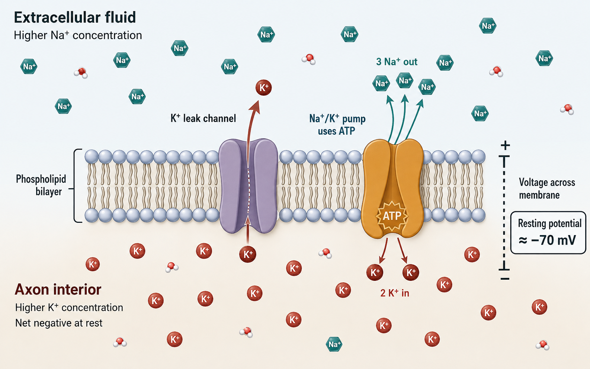
Read the resting pattern
| Feature | Outside the axon | Inside the axon |
|---|---|---|
| Sodium concentration | Higher | Lower |
| Potassium concentration | Lower | Higher |
| Relative charge at the membrane | More positive | More negative |
Build from the core idea: The core section described a negative resting voltage. This block separates the ion gradients, leak pathways, and sodium-potassium pump that make that resting condition possible.
At rest, sodium ions are more concentrated outside the axon, while potassium ions are more concentrated inside. The membrane is selectively permeable, which means ions do not cross equally. Potassium leak channels allow more potassium to move out than sodium leak pathways allow sodium to move in. Large negatively charged molecules remain inside. Together, these movements help leave the inside electrically negative compared with the outside.
The sodium-potassium pump supports the concentration gradients over time. For each cycle, it uses ATP to move three sodium ions out and two potassium ions in. The pump does not create each rapid phase of an action potential by itself. Voltage-gated channels produce the fast changes in membrane voltage; the pump and leak pathways maintain the conditions that let repeated signalling continue.
Predict changes by separating immediate and long-term effects. Closing many potassium leak channels would make the resting voltage less negative because less positive charge leaves. Blocking the pump briefly may not erase the voltage at once because existing gradients remain. Over longer periods and repeated activity, however, the gradients would weaken and reliable signalling would become harder to maintain.
Each structure contributes in a different way and on a different time scale.
| Component | Main movement or job | Predicted effect if reduced |
|---|---|---|
| Potassium leak channel | Potassium tends to leave | Resting voltage becomes less negative |
| Sodium-potassium pump | Three sodium out; two potassium in using ATP | Ion gradients weaken over time |
| Voltage-gated channels | Rapid ion flow after threshold | Action-potential phases change |
Direction follows the stated gradients and channel conditions; exact voltages depend on the neuron.
Stop and Check
Which structure maintains the sodium and potassium gradients over time, and what energy source does it use?
The sodium-potassium pump maintains the gradients. It uses energy from ATP.
Learn · Part 2
A stimulus can open channels and make the membrane less negative. If the trigger region reaches threshold, many voltage-gated sodium channels open. Sodium follows its concentration and electrical gradients into the neuron. The rapid entry of positive charge causes depolarization, the steep rising phase on the voltage graph.
Near the peak, sodium channels become inactive and voltage-gated potassium channels open. Potassium leaves the neuron, carrying positive charge outward. This movement causes repolarization, so the voltage falls toward its resting value. Potassium channels close slowly, so the voltage may briefly fall below rest. This undershoot is hyperpolarization.
Channels must return to their resting states before the same membrane region can fire normally again. During the absolute refractory period, another action potential cannot begin there. During the relative refractory period, a stronger stimulus may be needed. This recovery limits firing rate and makes backward re-excitation unlikely as the signal moves along the axon.
The graph joins all of these events on one time line. Moving upward means the inside is becoming less negative or more positive. Moving downward means the inside is becoming more negative again. A point on the line should always be explained with both the voltage direction and the channel state that caused it.
| Time (ms) | Voltage (mV) |
|---|---|
| 0 | -70 |
| 1 | -70 |
| 1.5 | -55 |
| 1.8 | 0 |
| 2 | +35 |
| 2.4 | 0 |
| 2.7 | -55 |
| 3 | -80 |
| 4 | -70 |
Match each graph phase to an ion movement
Build from the core idea: The core graph names each voltage phase. This block adds a repeatable way to read the graph, connect it to channel states, and draw only what the evidence supports.
Begin with the axes. Time belongs on the horizontal axis, and membrane voltage belongs on the vertical axis. Mark the resting level near −70 mV and the threshold near −55 mV before drawing the curve. During depolarization, voltage-gated sodium channels open and sodium enters. Near the peak, many sodium channels become inactivated while potassium channels are open. Potassium leaving the cell drives repolarization. Slow potassium-channel closing can produce the brief hyperpolarization below rest.
The absolute refractory period begins while sodium channels are open or inactivated. Those channels cannot immediately begin another action potential, even with a strong stimulus. During the relative refractory period, some channels have recovered, but the membrane may still be hyperpolarized. A stronger-than-usual stimulus may be required. These periods limit firing frequency and help recently activated membrane resist firing backward.
Do not draw a taller action potential for a stronger stimulus in one axon. Once threshold is reached, the event remains all-or-none. A stronger stimulus is usually represented by more action potentials per unit time and, in a whole nerve, recruitment of more neurons. When you sketch, keep individual spike height similar and change the spacing between spikes.
The graph shape, channel state, and ability to fire again should agree.
| Graph region | Main membrane event | What another stimulus can do |
|---|---|---|
| Rising phase | Sodium entry causes depolarization | A second spike cannot start in the active region |
| Falling phase | Potassium exit supports repolarization | The active region remains refractory |
| Undershoot | Potassium conductance is still elevated | A stronger stimulus may start a new spike |
Approximate voltages vary among neurons. Use the values supplied with a question.
Watch and make sense of it
Watch for: Pause at each graph phase and name the open channel, moving ion, and voltage direction.
Focus: 7:21–9:25. Follow sodium entry, potassium exit and the undershoot. The pump maintains ion gradients; it does not rapidly reset each spike.
Choose the video or the complete illustrated walkthrough. Then answer the same checkpoint to show that you made sense of the process.
Video preview loads when this lesson is open.
Work through these three illustrated steps. You can use them instead of the video, then answer the same checkpoint below.
The membrane separates fluids with different ion concentrations. Sodium is more concentrated outside; potassium is more concentrated inside. Selective permeability, especially potassium leak, helps produce the negative resting voltage. The pump uses ATP to move three sodium ions out and two potassium ions in. It maintains gradients over time; it is not the switch that rapidly repolarizes each spike.
Time runs along the horizontal axis. Voltage, measured inside relative to outside, runs vertically. At threshold, many voltage-gated sodium channels open. Sodium entry raises voltage. Near the peak, sodium channels inactivate and potassium channels open. Potassium exit lowers voltage. Slow potassium-channel closure causes the undershoot. Channel recovery produces absolute and relative refractory intervals; their boundaries are approximate in this teaching graph.
| Time (ms) | Voltage (mV) |
|---|---|
| 0 | -70 |
| 1 | -70 |
| 1.5 | -55 |
| 1.8 | 0 |
| 2 | +35 |
| 2.4 | 0 |
| 2.7 | -55 |
| 3 | -80 |
| 4 | -70 |
The graph represents one location on the membrane. Local current brings a neighbouring region to threshold, regenerating the event along the axon. The recently active region is harder to excite while channels recover. A stronger sustained stimulus can increase firing frequency and recruit more neurons. It does not turn each all-or-none spike into a larger spike in the same healthy neuron.
All-or-none signal, variable message
| Stimulus | Size of each action potential | Message pattern |
|---|---|---|
| Just reaches threshold | Full size | Lower firing frequency |
| Stronger, sustained stimulus | About the same full size | Higher firing frequency and possible recruitment |
Question: Voltage rises from −70 mV to +35 mV. What is the change, and which ion drives the rise?
Reasoning: The change is 35 − (−70) = 105 mV. Sodium enters during the rising phase. A second event cannot begin normally during the absolute refractory interval because the sodium channels have not recovered.
Now use the checkpoint below. A choice made here is not a medical diagnosis or proof that you performed a hands-on experiment.
Sense-making checkpoint
Learn · Part 3
An action potential at one axon region creates local current in the next region. If that next region reaches threshold, it produces a new action potential. The signal is therefore regenerated along the axon instead of fading like a passive electrical change. On an unmyelinated axon, regeneration occurs across many neighbouring membrane regions.
On a myelinated axon, current spreads under the myelin and action potentials are regenerated mainly at the nodes of Ranvier. This saltatory conduction is faster and uses fewer active membrane regions. The action potential does not literally jump through empty space; current spreads beneath the insulation and brings the next node to threshold.
Each action potential from one neuron is all-or-none. Once threshold is reached, a slightly stronger stimulus does not make that action potential taller. A stronger or longer stimulus can increase firing frequency, the number of action potentials produced per second. It can also recruit additional sensory neurons. The nervous system uses these patterns to represent stimulus intensity.
Regeneration also explains why a signal can travel a long axon without becoming smaller at the far end. Each active region supplies local current to the next region, and the next region creates a new full action potential. Conduction can fail if the membrane cannot reach threshold or if myelin damage allows too much current to leak away.
All-or-none signal, variable message
| Stimulus | Size of each action potential | Message pattern |
|---|---|---|
| Just reaches threshold | Full size | Lower firing frequency |
| Stronger, sustained stimulus | About the same full size | Higher firing frequency and possible recruitment |
Build from the core idea: The core lesson established that a single action potential is all-or-none. This block explains how the nervous system can still represent a stronger stimulus.
Once threshold is reached in one axon, a stronger stimulus does not make that axon's action potential taller. Sodium-channel opening regenerates a similar event along the membrane. Below threshold, no action potential begins. This all-or-none behaviour protects the signal from gradually fading as it travels along a healthy axon.
Intensity can be represented by firing frequency. A stronger stimulus may make the trigger region reach threshold again sooner after channels recover, producing more action potentials per second. The refractory periods set an upper limit because recently active sodium channels need time to return to a ready state. In a sensory pathway, a stronger stimulus may also recruit additional receptor cells or neurons, so a whole nerve can carry more activity even though each spike remains all-or-none.
Read a spike train by comparing equal time intervals. Count spikes or measure the spacing between them; do not compare spike height unless the question provides a special reason. Propagation remains one-way in the normal pathway because membrane ahead is ready to depolarize while the region just behind is refractory. A graph should therefore connect frequency, recovery, and direction without claiming that stronger stimuli make individual spikes larger.
Compare equal time windows and keep individual spike height consistent.
| Stimulus | Spikes in 100 ms | Supported interpretation |
|---|---|---|
| Below threshold | 0 | No action potential begins |
| Moderate | 3 | Threshold is reached several times |
| Stronger | 7 | Higher firing frequency represents greater intensity |
Synthetic counts illustrate coding by frequency. A neuron's maximum rate is limited by refractory behaviour.
Worked example
Situation: A pressure receptor reaches threshold twice in one second, then ten times in one second while pressure increases.
Reasoning: Signal intensity is coded by timing and recruitment, not by changing the all-or-none size of one action potential.
Retrieve it
Without looking back, explain which ion movement drives depolarization and which ion movement drives repolarization.
Autosaves as you type
Guided practice
Try both questions. Feedback explains the science and points you to the matching textbook page.
Question 1
Question 2
Evidence Slip
Lesson 3 · Chapter 11
How does one neuron pass information to the next cell?
Learning goal
I can define neurotransmitter, trace how a signal crosses a synapse, and explain how the signal ends.
Before you begin
You should know that an action potential travels along an axon and reaches an axon terminal.
In the textbook
Chapter 11 · pp. 380–382 Q14–18; p. 384 Q6
Four anchor words
These four anchors will help you enter the lesson. The full list below includes every new supporting term.
·
·
·
·
·
·
·
·
·
·
Learn · Part 1
A neurotransmitter is a chemical messenger released by a neuron. It travels only a very short distance across a synaptic cleft and binds to matching receptor proteins on a target cell.
The complete junction is called a synapse. The cell that releases the messenger is presynaptic. The cell that receives it is postsynaptic. The target may be another neuron, a muscle cell, or a gland cell.
A neurotransmitter does not carry the electrical action potential through the empty space. Instead, the arriving electrical signal causes chemical release. Receptor binding then changes the target cell.
When the action potential reaches the terminal, depolarization opens voltage-gated calcium channels. Calcium enters because its electrochemical gradient points inward. This calcium signal causes neurotransmitter-filled vesicles to fuse with the presynaptic membrane and release their contents by exocytosis.
The released molecules diffuse across the cleft. Only receptors with a compatible binding site respond. Receptor activation may open an ion channel directly or begin a signalling pathway inside the target cell. The result can move a neuron toward threshold, move it away, or change muscle or gland activity.
| Location | Main signal | What happens |
|---|---|---|
| Presynaptic axon | Electrical | An action potential reaches the terminal |
| Synaptic cleft | Chemical | Neurotransmitter diffuses across the gap |
| Postsynaptic cell | Cellular or electrical response | Receptor binding changes ion flow or cell activity |
Build from the core idea: The core sequence followed an action potential to a synapse. This block focuses on the conversion from an electrical event in one cell to a chemical message between cells.
When an action potential reaches an axon terminal, the membrane depolarizes and voltage-gated calcium channels open. Calcium ions enter because their concentration and electrical gradients favour inward movement. The increased calcium concentration inside the terminal causes neurotransmitter-filled vesicles to fuse with the presynaptic membrane. Neurotransmitter is released into the synaptic cleft by exocytosis.
The transmitter diffuses across the narrow cleft and binds only to matching receptors on the postsynaptic cell. Receptor activation can open ion channels directly or begin another signalling pathway. The postsynaptic change is graded: it may move the target toward threshold, move it away from threshold, or alter another cell function. The receiving cell begins a new action potential only if its combined inputs bring the trigger region to threshold.
The signal must also end. A transmitter may be broken down by an enzyme, moved back into the presynaptic cell or nearby support cells, or diffuse away. Calcium is removed from the terminal, and vesicle membrane is recycled. Keeping these steps in order prevents two common errors: neurotransmitter does not travel down the axon, and the electrical action potential does not jump directly across the synaptic cleft.
Follow the signal form and location at each step.
| Location | Main event | Signal form |
|---|---|---|
| Axon terminal | Action potential opens calcium channels | Electrical to intracellular trigger |
| Synaptic cleft | Released neurotransmitter diffuses | Chemical |
| Postsynaptic membrane | Receptors change membrane activity | Chemical to graded electrical response |
A postsynaptic action potential occurs only if combined graded inputs reach threshold.
Stop and Check
What kind of signal crosses the synaptic cleft in a typical chemical synapse?
A chemical neurotransmitter crosses the cleft. Receptor binding then changes ion flow or activity in the target cell.
Learn · Part 2
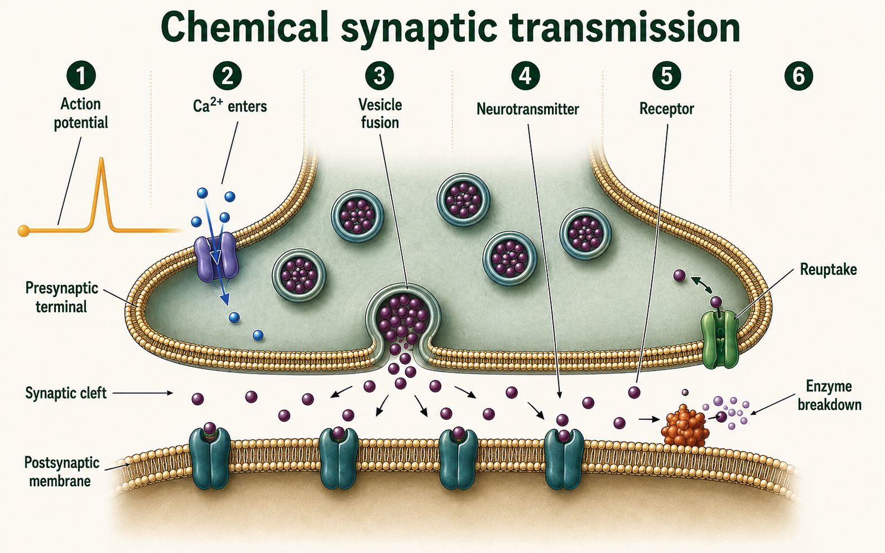
Acetylcholine is a neurotransmitter used at many synapses, including the junction between a motor neuron and skeletal muscle. When it binds to receptors there, it helps depolarize the muscle membrane. Cholinesterase breaks acetylcholine down so the stimulation does not continue without limit.
Norepinephrine is another neurotransmitter. It is used by many sympathetic pathways and can change activity in target tissues that have the right receptor. The effect depends on the receptor and cell, not only the messenger's name.
A synaptic signal must end. Acetylcholine can be broken down by cholinesterase. Other transmitters may be moved back into the presynaptic cell by reuptake. Molecules can also diffuse away or be taken up by nearby glial cells. The ending method affects how long receptors remain stimulated.
An agonist increases a signalling effect. It may activate a receptor, increase transmitter release, or slow signal removal. An antagonist reduces an effect by blocking a receptor or another required step. The words describe biological action. They do not tell whether a substance is safe, helpful, or harmful.
| Ending method | Example | If the step is slowed |
|---|---|---|
| Enzyme breakdown | Cholinesterase breaks acetylcholine | Messenger action may last longer |
| Reuptake | Transporters return transmitter to a cell | More transmitter may remain in the cleft |
| Diffusion or uptake | Molecules leave the cleft or enter nearby cells | Clearance may take longer |
Build from the core idea: The core section showed that receptors can move a postsynaptic neuron toward or away from threshold. Here you will combine several small inputs instead of treating one synapse as the whole decision.
An excitatory postsynaptic potential is a small graded change that moves the membrane toward threshold. An inhibitory postsynaptic potential moves the membrane away from threshold or makes depolarization less effective. These changes are not full action potentials. Their size can vary, and they become smaller as they spread through the dendrites and cell body toward the trigger region near the start of the axon.
Summation means that the neuron combines these graded inputs. Temporal summation occurs when one synapse is active several times close together. Spatial summation occurs when inputs from different synapses arrive at about the same time. Excitatory changes can add, while inhibitory changes can reduce the net effect. An action potential begins only when the combined change at the trigger region reaches threshold.
A neurotransmitter name alone does not guarantee excitation or inhibition. The effect depends on the receptor and target cell. To interpret a trace, identify the baseline, note when each input occurs, and predict the net direction before deciding whether threshold is reached. This avoids the mistaken idea that every released transmitter produces another action potential.
Treat each input as one contribution to the membrane voltage at the trigger region.
| Input pattern | Net change near trigger region | Likely result |
|---|---|---|
| Two excitatory inputs close together | Larger movement toward threshold | A spike becomes more likely |
| Excitatory and inhibitory inputs together | Changes partly oppose one another | Threshold may not be reached |
| Repeated weak excitatory input | Effects can add across time | A spike may begin if the sum reaches threshold |
The table shows direction, not a universal voltage value for every synapse.
Watch and make sense of it
Watch for: Follow the sequence from arriving action potential to postsynaptic response.
Focus: 3:15–4:28. Follow diffusion and receptor binding. The synaptic cleft is fluid-filled. Reuptake uses membrane transporters, not vesicles that scoop messengers from the gap.
Choose the video or the complete illustrated walkthrough. Then answer the same checkpoint to show that you made sense of the process.
Video preview loads when this lesson is open.
Work through these three illustrated steps. You can use them instead of the video, then answer the same checkpoint below.
A neurotransmitter is a chemical messenger released by a neuron that acts at receptors on another cell. The action potential reaches the presynaptic terminal. Calcium channels open, and calcium entry triggers vesicles to fuse with the membrane. Messenger molecules are released into the synaptic cleft. The electrical event does not simply jump across that gap as electricity.
Messenger molecules diffuse across the cleft and bind compatible receptors on the postsynaptic cell. This can change ion flow and make a new action potential more or less likely. A messenger does not have one universal effect on every cell; the receptor and target machinery matter. Acetylcholine and norepinephrine are examples of neurotransmitters, not the name of the electrical impulse.
Electrical → chemical → cellular response
| Location | Change |
|---|---|
| Presynaptic terminal | Impulse → calcium entry → vesicle fusion |
| Synaptic cleft | Released messenger diffuses |
| Postsynaptic receptor | Binding changes target-cell activity |
A signal must end so a later message can be distinguished. Cholinesterase breaks down acetylcholine. At other synapses, transport proteins take messenger back into cells; this is reuptake. An agonist increases a receptor-related effect; an antagonist blocks or reduces it. Distinguish changing release, changing a receptor, and changing removal. They act at different points in the same pathway.
Where a synaptic change acts
| Change | Predicted result |
|---|---|
| Less calcium entry | Less transmitter release |
| Receptor antagonist | Less receptor activation |
| Slower acetylcholine breakdown | Longer possible receptor stimulation |
| Reduced reuptake | Messenger may remain available longer |
Question: Calcium entry is reduced but the arriving action potential is unchanged. What follows?
Reasoning: Fewer vesicles are likely to release messenger. Less receptor activation follows, so the postsynaptic response may be weaker. This is a release problem, not evidence that the neuron lost its myelin.
Now use the checkpoint below. A choice made here is not a medical diagnosis or proof that you performed a hands-on experiment.
Sense-making checkpoint
Learn · Part 3
A drug or toxin can act at different places in the sequence. Blocking presynaptic calcium channels reduces vesicle fusion, so less neurotransmitter is released. Blocking postsynaptic receptors can prevent the target from responding even when normal transmitter reaches the cleft. Slowing clearance can extend the response.
Begin an explanation by locating the changed step. Then state what happens immediately before and after it. This keeps a receptor problem separate from a release problem. It also prevents a change at the synapse from being incorrectly blamed on myelin, which affects conduction along the axon.
One transmitter can have different effects in different tissues because receptor types and cell machinery differ. Norepinephrine can increase activity in one target and reduce it in another. Acetylcholine can activate skeletal muscle at one junction and have a different effect at another synapse. The messenger name alone does not predict the response.
A changed signal can alter timing, strength, or duration. Less release may reduce the postsynaptic change. A blocked receptor may remove one response even when release is normal. Slower removal may extend receptor stimulation. State which pattern the evidence supports instead of saying only that communication is affected. Compare the changed case with the normal sequence before drawing a conclusion.
Course cases describe mechanisms, not personal medical advice. A real exposure or medication question requires a qualified professional. In a lesson question, use only the stated target, receptor, and changed step. Do not assume that every substance reaches every synapse or has one effect throughout the body.
Reason through a changed synaptic step
Build from the core idea: The core lesson introduced agonists, antagonists, reuptake, and cholinesterase. This block uses an unfamiliar synthetic case to identify where a chemical changes synaptic transmission.
A chemical can change transmission at several points. An agonist increases a transmitter's effect by activating its receptor or strengthening part of its pathway. An antagonist reduces the effect by blocking a receptor or preventing activation. A reuptake inhibitor leaves more transmitter in the cleft for longer. A cholinesterase inhibitor slows the breakdown of acetylcholine. Similar-looking outcomes can therefore begin at different molecular steps.
Suppose isolated synapses receive the same presynaptic stimulation. In the control, acetylcholine rises briefly and the postsynaptic response ends quickly. With Chemical X, acetylcholine remains in the cleft and repeated postsynaptic responses continue. If vesicle release and receptor number are unchanged, reduced acetylcholine breakdown is a stronger explanation than increased release. A second test showing low cholinesterase activity would strengthen that claim.
Use the evidence to locate an action, not to identify a real substance or advise treatment. Ask what changed first: transmitter release, receptor response, removal, or enzyme activity. Then predict a measurement that should also change. Drugs and toxins can have dose-dependent effects and act at more than one site, so a course table supports a mechanism hypothesis rather than proving a complete medical explanation.
Match each result to the earliest altered step.
| Observation after Chemical X | Best first hypothesis | Evidence that would strengthen it |
|---|---|---|
| Less transmitter released | Vesicle release or calcium entry reduced | Measure terminal calcium |
| Transmitter present; receptor response weak | Receptor blocked or altered | Test receptor binding |
| Transmitter and response last longer | Removal or breakdown reduced | Measure reuptake or enzyme activity |
This is a mechanism exercise, not guidance for using, identifying, or treating exposure to a drug or toxin.
Worked example
Observation: acetylcholine release is normal, but the receiving cell remains stimulated longer than expected.
Conclusion: the problem is signal ending, not neurotransmitter release or myelin.
Retrieve it
Explain how an electrical signal in one neuron produces a change in the next cell.
Autosaves as you type
Guided practice
Try both questions. Feedback explains the science and points you to the matching textbook page.
Question 1
Question 2
Evidence Slip
Lesson 4 · Chapter 11
How does the nervous system organize incoming information and outgoing commands?
Learning goal
I can classify nervous-system pathways and compare somatic, sympathetic, and parasympathetic control.
Before you begin
You should know sensory, motor, and interneuron roles and how signals cross synapses.
In the textbook
Chapter 11 · p. 389 Q19; pp. 396–399 Q28, 29, 31, 32, 2, 3
Four anchor words
These four anchors will help you enter the lesson. The full list below includes every new supporting term.
·
·
·
·
·
·
·
·
Learn · Part 1
The central nervous system, or CNS, contains the brain and spinal cord. It receives information, compares it with other information, and organizes responses. The peripheral nervous system, or PNS, includes nerves and ganglia outside the CNS. It carries sensory information toward the CNS and motor commands away from it.
A nerve is a bundle of axons in the PNS. Some nerves carry mainly sensory information, some mainly motor information, and many carry both. Sensory pathways are often called afferent because they arrive at the CNS. Motor pathways are often called efferent because they exit the CNS.
The somatic system includes sensory input from skin, muscles, and joints and motor output to skeletal muscle. A somatic response may be voluntary, but somatic reflexes can occur without a conscious decision.
The CNS and PNS are location groups, not two unrelated systems. A touch receptor in the hand belongs to the PNS. Its sensory axon enters the spinal cord, which belongs to the CNS. A motor command then leaves the spinal cord through another PNS axon. One response can therefore cross the CNS–PNS boundary more than once.
A ganglion is a cluster of neuron cell bodies in the PNS. A nerve is a bundle of PNS axons. These words are not interchangeable. In the CNS, bundles of axons are usually called tracts, while groups of cell bodies form nuclei or layers. For this course, first decide whether a structure is inside or outside the brain and spinal cord.
Nervous-system organization
Follow the direction
| Path | Direction | Example |
|---|---|---|
| Sensory (afferent) | Receptor toward CNS | Touch information enters the spinal cord |
| Motor (efferent) | CNS toward effector | A command reaches skeletal muscle |
Build from the core idea: The core hierarchy separated incoming sensory information from outgoing motor information. This block traces both directions through one mixed peripheral nerve.
A nerve is a bundle of many axons in the peripheral nervous system. A mixed nerve contains sensory and motor axons, so information can travel in both directions through the bundle. The individual axons still conduct in their normal functional direction. Sensory, or afferent, axons carry information from receptors toward the central nervous system. Motor, or efferent, axons carry commands from the central nervous system toward muscles or glands.
Consider touching a hot surface and pulling away. Receptors in the skin begin sensory signals. Those signals travel through a peripheral nerve and enter the spinal cord through a sensory route. Interneurons help organize the response, and motor output leaves through motor axons that may run inside part of the same mixed nerve. The nerve is not deciding what to do; it is carrying axons whose cell bodies and connections belong to different parts of the pathway.
To locate a change, compare input and output. Loss of sensation with preserved voluntary movement suggests that some motor axons still work while a sensory route may be affected. Loss of both in the same body region can fit a mixed-nerve change, but central pathways and effectors must still be considered. State what the evidence supports and what additional test would separate these possibilities.
Direction refers to the CNS, not to top or bottom on a diagram.
| Axon type | Starts from | Carries information toward |
|---|---|---|
| Sensory / afferent | Receptor | Spinal cord or brain |
| Motor / efferent | CNS motor pathway | Muscle or gland |
| Mixed nerve | Contains both axon groups | Both directions in separate axons |
A mixed nerve carries both groups; one axon does not normally reverse its information direction.
Stop and Check
A signal travels from the spinal cord to a biceps muscle. Is it sensory or motor, and is it moving toward or away from the CNS?
It is motor information moving away from the CNS toward an effector.
Learn · Part 2
The autonomic system regulates cardiac muscle, smooth muscle, and glands. Its sympathetic and parasympathetic divisions often produce opposing effects, but neither division simply switches every organ on or off.
A sympathetic response supports immediate action. Heart rate may rise, airways may widen, and blood flow may be redirected. A parasympathetic response supports digestion, energy storage, and routine maintenance. Its effects often help restore conditions after a challenge.
The effect depends on the organ and the receptors on its target cells. For example, sympathetic signals can increase heart rate but reduce some digestive activity. Accurate explanations name the target organ and effect instead of calling one division excitatory and the other inhibitory.
Autonomic motor pathways usually use a two-neuron chain. A first neuron leaves the CNS and connects with a second neuron in an autonomic ganglion. The second neuron reaches cardiac muscle, smooth muscle, or a gland. Somatic motor pathways usually use one motor neuron from the CNS to skeletal muscle. This pathway difference helps explain why a ganglion is important in autonomic control.
Sympathetic and parasympathetic are names for coordinated pathways, not personality types. Sympathetic activity becomes prominent during an immediate challenge. Parasympathetic activity supports many routine functions and recovery. Both divisions remain active to different degrees, and the balance can change from one organ to another.
Two motor pathways
| Feature | Somatic motor | Autonomic motor |
|---|---|---|
| Main effector | Skeletal muscle | Cardiac muscle, smooth muscle, glands |
| Typical pathway | One motor neuron from CNS | Two-neuron chain with a ganglion |
| Control | Voluntary actions and reflexes | Mostly automatic regulation |
Effects depend on the organ
| Target | Sympathetic example | Parasympathetic example |
|---|---|---|
| Heart | Rate and force increase | Rate decreases |
| Airways | Widen | Return toward resting diameter |
| Digestive tract | Activity often decreases | Activity often increases |
| Pupil | Dilates | Constricts |
Build from the core idea: The core comparison showed common sympathetic and parasympathetic patterns. This block explains why the two divisions cannot be reduced to an opposite-effects chart.
The sympathetic and parasympathetic divisions often coordinate the same organ, but their effects depend on the organ's receptors and circuits. Sympathetic activity can increase heart rate and reduce digestive activity during a demanding situation. Parasympathetic activity can slow the heart and support digestion during recovery. Those familiar examples are useful starting points, not a rule that every organ receives equal and opposite commands.
Some tissues receive mainly sympathetic control, and one division can produce different effects in different targets. Sympathetic signals can narrow some blood vessels while widening others because receptor types and local conditions differ. Both divisions can also contribute to a sequence rather than cancel one another. The body coordinates patterns across organs to meet a need; it does not flip one universal fight-or-flight switch against one universal rest-and-digest switch.
In an evidence case, name the organ, receptor-bearing target, direct effect, and overall context. If heart rate rises while digestive movement falls, a coordinated sympathetic pattern is reasonable. If one response does not fit the simple chart, investigate receptor and organ context rather than declaring the data impossible. Avoid using classroom responses to diagnose autonomic function in a person.
Start with the target organ and receptor response rather than a universal opposite rule.
| Target | Common sympathetic effect | Important qualification |
|---|---|---|
| Heart | Rate and force often increase | Parasympathetic influence is strong at rest |
| Digestive tract | Movement and secretion often decrease | Local digestive circuits also regulate activity |
| Many blood vessels | Diameter changes | Direction depends on vessel, receptor, and local need |
The table describes common physiological patterns, not a diagnostic test or a complete list of organ responses.
Watch and make sense of it
Watch for: Organize somatic and autonomic pathways beneath the PNS.
Focus: 5:42–7:14. Trace sensory input toward the CNS and motor output toward an effector. Observe the example only; do not test pain or a reflex on yourself.
Choose the video or the complete illustrated walkthrough. Then answer the same checkpoint to show that you made sense of the process.
Video preview loads when this lesson is open.
Work through these three illustrated steps. You can use them instead of the video, then answer the same checkpoint below.
The central nervous system, or CNS, includes the brain and spinal cord. The peripheral nervous system, or PNS, connects that centre with receptors and effectors. A neuron is a cell. A nerve is a bundle of peripheral axons and supporting tissue. A mixed nerve can contain axons carrying information in different directions; one individual axon does not become both the whole input and output pathway.
Follow the direction
| Path | Direction | Example |
|---|---|---|
| Sensory (afferent) | Receptor toward CNS | Touch information enters the spinal cord |
| Motor (efferent) | CNS toward effector | A command reaches skeletal muscle |
Afferent means toward the CNS; efferent means away from it. Somatic motor output reaches skeletal muscle. Autonomic motor output reaches cardiac muscle, smooth muscle and glands, usually through a two-neuron chain. A withdrawal reflex can therefore have somatic motor output even though the movement begins without a conscious decision. Voluntary and somatic are not perfect synonyms.
Two motor pathways
| Feature | Somatic motor | Autonomic motor |
|---|---|---|
| Main effector | Skeletal muscle | Cardiac muscle, smooth muscle, glands |
| Typical pathway | One motor neuron from CNS | Two-neuron chain with a ganglion |
| Control | Voluntary actions and reflexes | Mostly automatic regulation |
Sympathetic and parasympathetic divisions help coordinate organ activity. They often have opposing effects on the same organ, but neither switches every organ on or off. White matter contains many myelinated axons connecting regions. Grey matter contains many cell bodies, dendrites and synapses. Both contain several cell types. Their arrangement differs between cerebral cortex and spinal cord.
White matter and grey matter work together
| Tissue description | Structures concentrated there | Main information role | Common location example |
|---|---|---|---|
| White matter | Many myelinated axons | Carry signals between regions | Deeper cerebrum; outer spinal cord |
| Grey matter | Many cell bodies, dendrites, and synapses | Combine and process information | Cerebral cortex; central spinal cord |
Question: A command leaves the spinal cord and reaches a skeletal muscle. Which labels fit?
Reasoning: It is efferent because it travels away from the CNS, and somatic motor because its effector is skeletal muscle. The input that triggered it was a separate afferent pathway.
Now use the checkpoint below. A choice made here is not a medical diagnosis or proof that you performed a hands-on experiment.
Sense-making checkpoint
Learn · Part 3
In the CNS, white matter contains many myelinated axons. The lipid-rich myelin gives the tissue a lighter appearance. Grey matter contains many neuron cell bodies, dendrites, synapses, and unmyelinated regions. Both kinds of tissue also contain glial cells and blood vessels. The labels describe concentrations, not pure tissue made of only one structure.
Their arrangement changes by location. In much of the cerebrum, grey matter forms an outer cortex and deeper groups of cell bodies, while white matter carries axons between regions. In the spinal cord, much of the grey matter lies more centrally and white matter surrounds it. A diagram should therefore be read by location rather than by a rule that grey is always outside.
Myelin links this tissue pattern with conduction. An axon in white matter can carry information quickly between distant CNS regions. A synapse in grey matter allows information to be combined or redirected. A useful explanation names the structure, its location, and the kind of information work that happens there.
To trace a pathway, begin at the receptor. Mark every segment as sensory or motor, afferent or efferent, and CNS or PNS. Then name the effector. This method is more reliable than memorizing a list because it follows the direction in which information actually travels.
White matter and grey matter work together
| Tissue description | Structures concentrated there | Main information role | Common location example |
|---|---|---|---|
| White matter | Many myelinated axons | Carry signals between regions | Deeper cerebrum; outer spinal cord |
| Grey matter | Many cell bodies, dendrites, and synapses | Combine and process information | Cerebral cortex; central spinal cord |
Build from the core idea: The core lesson distinguished CNS and PNS organization. This block connects myelin to white and grey matter without treating those terms as simple synonyms.
In the central nervous system, white matter contains many axons, including large numbers of myelinated axons. Lipid-rich myelin gives these regions a lighter appearance. Grey matter contains many neuron cell bodies, dendrites, synapses, glial cells, and also some axons. Therefore, white matter does not mean only myelin, and grey matter does not mean no myelin at all. The terms describe regions with different dominant structures.
Arrangement changes by location. In much of the cerebrum, grey matter forms an outer cortex and deeper nuclei, while major white-matter pathways connect regions underneath. In the spinal cord, central grey matter is surrounded by white-matter tracts. Peripheral nerves are not normally labelled white or grey matter; they are bundles of axons supported by connective tissue, and many of those axons may be myelinated by Schwann cells.
Use location and function together. A change in a white-matter tract may interrupt communication between otherwise functioning regions. A change in grey matter may affect processing where cell bodies and synapses are concentrated. Real effects depend on the exact pathway and extent, so colour or tissue name alone cannot predict a person's abilities.
The dominant structures differ, but each region contains more than one cell component.
| Region | Structures especially common | Main reasoning use |
|---|---|---|
| CNS white matter | Myelinated axon pathways | Communication between regions |
| CNS grey matter | Cell bodies, dendrites, synapses, glia | Local processing and integration |
| Peripheral nerve | Bundles of sensory and/or motor axons | Communication between body and CNS |
White and grey matter are CNS tissue terms; myelin in the PNS is made by Schwann cells.
Worked example
Situation: A loud alarm starts while a learner is eating lunch.
Reasoning: The explanation follows information into the CNS, then names specific motor targets and effects.
Retrieve it
Explain how the CNS, PNS, somatic system, and autonomic system fit together.
Autosaves as you type
Guided practice
Try both questions. Feedback explains the science and points you to the matching textbook page.
Question 1
Question 2
Evidence Slip
Lesson 5 · Chapter 11
What can a change in movement, speech, memory, or balance suggest about a brain region?
Learning goal
I can identify major brain and spinal-cord structures and use evidence carefully to connect structure with function.
Before you begin
You should know that the CNS contains the brain and spinal cord and that evidence can support more than one explanation.
In the textbook
Chapter 11 · pp. 389–392 Q20, 22–24; p. 395 Q1, 4; p. 399 Q1
Four anchor words
These four anchors will help you enter the lesson. The full list below includes every new supporting term.
·
·
Learn · Part 1
The cerebrum is the largest part of the brain. It has two connected cerebral hemispheres and a folded outer layer called the cerebral cortex. The cortex contains grey matter with many neuron cell bodies, dendrites, and synapses. Deeper white matter contains many myelinated axons that connect cortical areas with each other and with other parts of the nervous system.
The frontal lobes contribute to planning, decision making, speech production, and voluntary movement. The parietal lobes process body sensations and spatial information. The temporal lobes support hearing, language, and memory. The occipital lobes process visual information. These are major patterns, not isolated boxes. A complex task usually depends on several regions working together.
The two hemispheres exchange information through large bundles of axons. Some functions show left-right specialization, but personality cannot be divided into a logical left brain and a creative right brain. Both hemispheres participate in complex behaviour. A useful brain model identifies important contributions while keeping the connected network visible.
Grey matter and white matter describe tissue organization, not whether one area is active. Grey matter contains many cell bodies, dendrites, and synapses, where much local processing occurs. White matter contains many myelinated axons, which carry information between processing areas. Both are needed for a coordinated response.
| Structure | Central function |
|---|---|
| Cerebral lobes | Connected cortical processing for perception, planning, language, memory, and voluntary movement |
| Thalamus | Organizes much sensory information moving toward the cortex |
| Hypothalamus | Links internal monitoring with autonomic and endocrine responses |
| Cerebellum | Adjusts movement timing, posture, and balance |
| Pons and medulla | Relay pathways and regulate vital automatic functions |
| Spinal cord | Carries pathways and organizes some reflex responses |
Cortical regions and evidence
| Region | Important functions | Possible evidence after damage |
|---|---|---|
| Frontal | Planning, movement, speech production | Changed planning or voluntary movement |
| Parietal | Body sensation and spatial processing | Difficulty locating touch or space |
| Temporal | Hearing, language, memory | Changed sound, word, or memory processing |
| Occipital | Vision | Changed visual processing |
Build from the core idea: The core brain map introduced the two cerebral hemispheres. This block uses crossing pathways as evidence while avoiding claims that people have a left-brain or right-brain personality.
Many sensory and motor pathways cross between sides of the body and brain. For example, the left motor cortex strongly influences voluntary movement on the right side of the body. Visual information is organized by visual field rather than by one whole eye: parts of both retinas send information about the right visual field toward the left side of the visual system, and the opposite pattern serves the left field.
This crossing can help locate a change, but it must be used with the rest of the evidence. A weakness affecting the right side may be consistent with a change in a left cerebral motor pathway, yet the exact level of the pathway matters because crossing occurs at particular locations. A visual-field loss also follows a different route from a problem limited to one eye. Strong answers trace the named pathway instead of applying one left-right rule to every function.
The hemispheres are highly connected and both contribute to complex thinking, language, attention, emotion, and creativity. Some functions show relative specialization, but that does not divide people into logical left-brained and creative right-brained types. Use hemisphere evidence to explain pathways and measured functions, not personality or learning style.
First identify the pathway, then ask where and whether it crosses.
| Observation | Useful pathway idea | Claim to avoid |
|---|---|---|
| Right-side voluntary weakness | Examine left cerebral motor routes and crossing level | Every right-side change proves one cortical location |
| Right visual-field loss in both eyes | Examine left post-chiasm visual routes | The right eye alone is damaged |
| Different task strengths | Networks may show relative specialization | A person has one dominant brain personality |
Synthetic localization patterns simplify connected pathways and are not diagnostic.
Stop and Check
Why is it misleading to say one lobe works alone during a complex task?
Complex tasks use networks. A labelled region may make an important contribution, but it communicates with other regions.
Learn · Part 2
The thalamus receives and organizes much of the sensory information moving toward the cerebral cortex. Smell follows a different early route. The thalamus does more than pass messages unchanged; it helps select and organize information. The nearby hypothalamus monitors internal conditions and helps regulate temperature, thirst, hunger, autonomic activity, and endocrine signalling.
The cerebellum compares intended movement with sensory feedback. It adjusts timing, force, posture, and balance. Damage can produce poorly timed or unsteady movement even when the muscles can still produce force. The cerebellum works with the cortex, brainstem, spinal cord, and sensory pathways rather than acting as a separate balance switch.
The brainstem connects the cerebrum, cerebellum, and spinal cord. The pons relays information and contributes to breathing, sleep, and arousal. The medulla oblongata helps regulate breathing, heart activity, blood-vessel diameter, swallowing, and other vital automatic functions. The term brainstem includes more than the medulla alone.
The pons and medulla are close together, but their names are not interchangeable. The pons forms a visible bulge above the medulla and connects with the cerebellum. The medulla continues into the spinal cord. On a diagram, use position as well as function to tell these structures apart.
Major regions in a connected brain
Build from the core idea: The core section identified the thalamus, hypothalamus, pons, and medulla. This block uses several observations to decide which location is most consistent with a synthetic case.
Suppose a case reports unstable breathing rhythm, difficulty coordinating swallowing, and normal recognition of spoken words. The medulla is a stronger first hypothesis than a cerebral language area because it helps regulate vital automatic functions and contains pathways involved in swallowing. If the main change were sleep, breathing pattern, and communication between higher and lower brain regions, the pons would deserve closer attention. A change in temperature regulation, thirst, or endocrine control would point more strongly toward the hypothalamus.
Evidence localization works by matching functions and ruling out weaker explanations. One observation is rarely enough because brain regions work in connected networks. A thalamic disruption may alter how much sensory information reaches the cortex, but the final experience also depends on cortical and brainstem pathways. A medulla problem can affect automatic functions while leaving some higher thinking intact, yet real patterns vary with the size and exact location of change.
State the limit of your conclusion. Course cases are simplified and non-diagnostic. The strongest answer says that the evidence is most consistent with one region, names the observations that support it, and identifies another measurement needed to distinguish nearby or connected structures.
Choose the region that accounts for the whole pattern, not one isolated word.
| Dominant evidence | First region to examine | Important limit |
|---|---|---|
| Breathing rhythm and swallowing change | Medulla oblongata | Connected pons and cranial pathways also matter |
| Internal temperature and thirst change | Hypothalamus | Hormone and kidney evidence would help |
| Sensory relay changes before cortical processing | Thalamus | The sensory pathway and cortex must also be checked |
These are synthetic learning cases and cannot be used to locate an injury in a real person.
Watch and make sense of it
Watch for: Identify how named regions work as connected networks.
Focus: 1:15–2:47. Locate lobes, thalamus, cerebellum, pons and medulla. A region contributes to a function; complex behaviour depends on connected networks.
Choose the video or the complete illustrated walkthrough. Then answer the same checkpoint to show that you made sense of the process.
Video preview loads when this lesson is open.
Work through these three illustrated steps. You can use them instead of the video, then answer the same checkpoint below.
The two cerebral hemispheres communicate through connected pathways. Frontal regions contribute to planning and voluntary movement; parietal regions process body sensation and space; temporal regions contribute to hearing and memory; occipital regions process vision. These are useful structure-function connections, not a map of separate personalities. Complex behaviour depends on networks across regions.
| Structure | Central function |
|---|---|
| Cerebral lobes | Connected cortical processing for perception, planning, language, memory, and voluntary movement |
| Thalamus | Organizes much sensory information moving toward the cortex |
| Hypothalamus | Links internal monitoring with autonomic and endocrine responses |
| Cerebellum | Adjusts movement timing, posture, and balance |
| Pons and medulla | Relay pathways and regulate vital automatic functions |
| Spinal cord | Carries pathways and organizes some reflex responses |
The thalamus helps relay and organize much sensory information. The hypothalamus monitors internal conditions and links autonomic and endocrine control. The cerebellum helps coordinate timing, posture and balance. The pons and medulla are parts of the brainstem, with relay and vital automatic functions. The spinal cord carries information and organizes some reflex responses. A pathway can involve several of these structures.
Cortical regions and evidence
| Region | Important functions | Possible evidence after damage |
|---|---|---|
| Frontal | Planning, movement, speech production | Changed planning or voluntary movement |
| Parietal | Body sensation and spatial processing | Difficulty locating touch or space |
| Temporal | Hearing, language, memory | Changed sound, word, or memory processing |
| Occipital | Vision | Changed visual processing |
First name the observed change, then identify a function that might be affected. Finally connect that function to a possible region or pathway. Poor movement timing may involve cerebellar pathways, but sensory input and muscle control also matter. Symptoms cannot diagnose a person or prove damage to one brain region. The table separates a supported explanation from what remains uncertain.
From evidence to a cautious conclusion
| Evidence | Supported idea | Important limit |
|---|---|---|
| Unsteady, poorly timed movement | Cerebellar pathways may be involved | Other sensory or motor pathways could contribute |
| Loss of vision in part of the visual field | Visual pathways or occipital cortex may be involved | The symptom does not locate one site by itself |
| Weakness below a spinal injury | Descending motor pathways may be disrupted | Extent depends on injury level and tissue affected |
Question: A supplied case describes unsteady, poorly timed movement. What is a defensible inference?
Reasoning: Cerebellar pathways may contribute because they coordinate movement. Additional information about sensory and motor pathways is needed. The case is not enough to diagnose a disorder or identify one damaged cell group.
Now use the checkpoint below. A choice made here is not a medical diagnosis or proof that you performed a hands-on experiment.
Sense-making checkpoint
Learn · Part 3
The spinal cord carries information between the brain and spinal nerves. Sensory information enters through dorsal roots. Motor information leaves through ventral roots. Ascending tracts carry sensory information toward the brain, while descending tracts carry motor commands toward spinal circuits. In the spinal cord, central grey matter is surrounded by white matter containing many myelinated axons.
The spinal cord is also a processing centre. In a withdrawal reflex, sensory input can activate interneurons and motor neurons before the brain produces conscious awareness. The brain still receives information about the event and can shape later movement. A reflex is therefore organized neural processing, not a signal that completely avoids the central nervous system.
When using symptoms as evidence, identify the observed change, connect it with a known function, and state a limit. A movement change could involve cortex, cerebellum, brainstem, spinal cord, peripheral nerves, muscles, or several sites. Classroom cases can support a biological inference, but they cannot diagnose a person.
A good location claim is therefore cautious and testable. It uses words such as “may involve” rather than “proves damage to.” It also asks what other observations could support or weaken the claim. This is the same evidence habit used when interpreting a graph or an investigation.
Information through the spinal cord
From evidence to a cautious conclusion
| Evidence | Supported idea | Important limit |
|---|---|---|
| Unsteady, poorly timed movement | Cerebellar pathways may be involved | Other sensory or motor pathways could contribute |
| Loss of vision in part of the visual field | Visual pathways or occipital cortex may be involved | The symptom does not locate one site by itself |
| Weakness below a spinal injury | Descending motor pathways may be disrupted | Extent depends on injury level and tissue affected |
Build from the core idea: The core lesson linked structures to functions, and the previous block used symptoms cautiously. This block asks how experience and recovery can change networks without promising a fixed outcome.
Neural plasticity is the nervous system's capacity to change the strength or organization of connections. Learning can strengthen some pathways and weaken others. After a disruption, surviving networks may take on part of a task, new strategies may reduce demand on the affected pathway, and repeated practice may improve performance. Plasticity is therefore a process of change, not proof that every damaged structure grows back or that all lost function returns.
Recovery evidence must be interpreted over time. Improvement can result from reduced swelling, restored blood flow, repair in surviving tissue, practice, environmental support, or reorganization of connected networks. A single before-and-after score cannot show which mechanism caused the change. Age, location, extent of change, health, practice, and available support all influence the pattern, so two people with similar starting observations may not follow the same course.
A careful course answer separates observation from inference. State what changed in the data, propose a plausible network explanation, and name another measure that would test it. Do not infer motivation, intelligence, or long-term outcome from one symptom. Classroom cases are designed for structure-function reasoning and cannot diagnose a real person or predict recovery.
Improvement is an observation; its cause requires additional evidence.
| Evidence over time | Supported statement | What remains uncertain |
|---|---|---|
| Task score improves with practice | Performance changed | Which neural mechanism produced the change |
| One strategy improves while another does not | Some pathways or supports differ | Exact location of reorganization |
| Early change levels off | Rate of improvement changed | Future limit or cause of the plateau |
Do not use a classroom pattern to predict an individual's prognosis.
Worked example
Situation: A synthetic case shows normal muscle strength but poor timing and balance during movement.
Reasoning: A careful conclusion uses function evidence and keeps the uncertainty visible.
Retrieve it
Choose the cerebellum, brainstem, or hypothalamus. Explain one key function and one piece of evidence that could suggest its involvement.
Autosaves as you type
Guided practice
Try both questions. Feedback explains the science and points you to the matching textbook page.
Question 1
Question 2
Evidence Slip
Practice & Review · Chapter 11
Use these twelve questions to check the nervous-system ideas that matter most. Each answer includes a short explanation and a textbook page.
Textbook chapter review
Read the summary on printed p. 401. Complete Q2–18 and one of Q22–24 on printed pp. 402–403.
This is optional extra review. Use it to strengthen the ideas you want to revisit before the course questions.
Course practice
These are the twelve questions you need to answer for this chapter practice.
Question 1
Question 2
Question 3
Question 4
Question 5
Question 6
Question 7
Question 8
Question 9
Question 10
Question 11
Question 12
Lesson 6 · Chapter 12
How does the nervous system turn light, pressure, temperature, and chemicals into neural information?
Learning goal
I can compare sensory receptor classes and explain transduction, adaptation, taste, smell, touch, and proprioception.
Before you begin
You should know that neurons carry action potentials and that a receptor starts a sensory pathway.
In the textbook
Chapter 12 · pp. 406–409 Q1–3, 5–6 and Q1–4; pp. 426–429 Q26–30
Four anchor words
These four anchors will help you enter the lesson. The full list below includes every new supporting term.
·
·
·
·
·
·
·
·
Learn · Part 1
A sensory receptor does not send light, pressure, or chemicals through a neuron. It performs sensory transduction: stimulus energy changes the receptor membrane. If the change is strong enough, action potentials begin in a sensory neuron or transmitter is released to one.
Photoreceptors respond to light. Mechanoreceptors respond to stretch, pressure, vibration, or movement. Chemoreceptors respond to particular chemicals. Thermoreceptors respond to temperature change. Nociceptors respond to potentially damaging conditions. Proprioceptors are mechanoreceptors that report muscle length, tendon tension, and joint position.
Each receptor is most sensitive to a preferred stimulus. The brain identifies the sensation partly from which pathway is active, where it began, and how the firing pattern changes.
Sensation begins when receptors detect a stimulus and sensory pathways carry information toward the CNS. Perception is the meaning the CNS builds from that information. The two are connected but not identical. The same receptor signal can be interpreted differently when context, attention, or information from another sense changes.
Transduction begins with a change in receptor membrane voltage called a receptor potential. A larger effective stimulus can produce a larger receptor potential. If threshold is reached in the connected sensory neuron, action potentials begin. Their frequency can change with stimulus strength even though each action potential remains all-or-none.
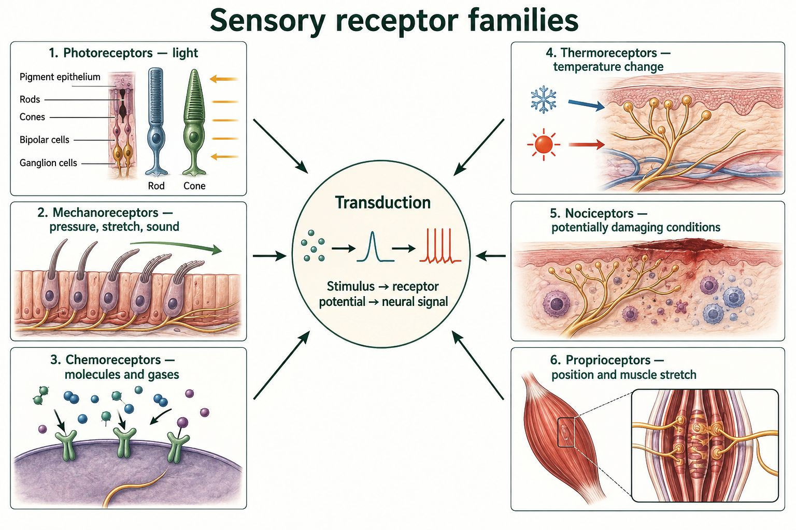
From stimulus to perception
Build from the core idea: The core lesson showed that receptors transduce particular forms of energy. This block adds threshold and response-curve reasoning.
A receptor threshold is the stimulus level at which a measurable response begins under the stated conditions. Below that level, the stimulus may be too weak to change the receptor membrane enough to influence signalling. Above threshold, a stronger stimulus can produce a larger receptor potential, a higher action-potential frequency in the sensory neuron, or recruitment of additional receptors. The exact pattern depends on the receptor and measurement.
A response curve often rises steeply over one useful range and then levels off. The level region is saturation: increasing the stimulus further produces little additional measured response because available channels, receptors, or firing rates are already strongly engaged. Sensitivity is greatest where a small stimulus change produces a clear response change. Threshold, useful range, and saturation should be read from the axes and evidence, not assumed to have universal values.
Compare curves by holding conditions constant. A curve shifted to the right may mean that a stronger stimulus is needed for the same response. A lower maximum may mean fewer functioning receptors or a limit later in the pathway. Those are hypotheses, not diagnoses. Name the changed feature of the curve and propose one additional measurement before claiming a cause.
Use the shape to identify threshold, sensitive range, and saturation.
| Curve region | Observed pattern | Reasoning |
|---|---|---|
| Below threshold | Little or no measured response | Stimulus has not produced the criterion change |
| Rising region | Response changes with stimulus | This range can encode intensity |
| Plateau | More stimulus gives little added response | The measured system is near saturation |
Threshold and saturation values depend on the receptor, method, and conditions supplied in the question.
Stop and Check
Pressure bends a receptor membrane and changes its voltage. Which process has occurred?
Sensory transduction has occurred because mechanical energy was converted into an electrical change.
Learn · Part 2
Some receptors adapt during a steady stimulus. Clothing may feel obvious when first put on, then less noticeable. The stimulus remains, but the receptor pathway sends fewer signals. Rapidly adapting receptors emphasize change. Slowly adapting receptors continue to report ongoing conditions.
Taste and smell begin with chemoreceptors. Dissolved molecules bind to receptors in taste buds or the olfactory epithelium. Their combined patterns contribute to flavour. Touch depends on several receptor types, so pressure, vibration, temperature, and tissue damage are not one single sense.
A fair sensory investigation changes one factor at a time. It records a responding variable and controls other conditions. Because sensation varies among people, consent, comfort, repeated trials, and a supplied-data option are essential.
Adaptation does not mean that every sensory pathway becomes silent. Some receptors respond strongly when a stimulus starts or stops. Others continue signalling while the condition remains. Pain pathways may adapt slowly or not in the same way as light touch. The pattern helps the nervous system notice both new events and conditions that still require attention.
Taste and smell use many receptor types and pattern recognition. A food molecule must dissolve before it can reach a taste receptor. Airborne molecules dissolve in mucus before reaching olfactory receptors. Flavour also depends on temperature, texture, and smell, which is why a blocked nose can change the experience of eating.
Match stimulus with receptor
| Receptor class | Preferred stimulus | Unit A example |
|---|---|---|
| Photoreceptor | Light | Rods and cones |
| Mechanoreceptor | Force or movement | Touch, hair cells, proprioception |
| Chemoreceptor | Chemical | Taste and smell |
| Thermoreceptor | Temperature | Skin temperature change |
| Nociceptor | Potential tissue damage | Pain pathway |
Two response patterns
| Pattern | Signal during a steady stimulus | Useful information |
|---|---|---|
| Rapid adaptation | Strong at change, then falls | Onset, ending, movement |
| Slow adaptation | Continues while stimulus remains | Ongoing pressure or body position |
Build from the core idea: The core section defined sensory adaptation as a changing response during a sustained stimulus. This block interprets that change across time.
When a steady stimulus begins, many receptors produce a strong change in receptor potential and sensory-neuron activity. For an adapting receptor, the response then decreases even though the stimulus remains present. Rapidly adapting receptors emphasize change, onset, or movement. Slowly adapting receptors continue signalling for longer and can provide information about a maintained condition, although their firing rate may still decline.
Adaptation is not the same as the stimulus disappearing or the receptor becoming permanently unable to respond. If the stimulus changes again, activity may increase. Perception can also change because processing occurs throughout the nervous system, so a reported sensation is not a direct meter of one receptor's firing. A time-series graph should therefore separate stimulus intensity, receptor response, and reported perception when those variables are available.
Read the graph in order: mark stimulus onset, compare early and later responses while the stimulus is constant, and examine what happens when it ends or changes. A steep decline supports faster adaptation; a sustained response supports slower adaptation. Do not compare two curves unless the axes, units, and stimulus conditions match.
The stimulus can remain constant while the receptor response changes.
| Time point | Stimulus | Possible receptor response |
|---|---|---|
| Before onset | Absent | Baseline activity |
| Just after onset | Constant stimulus begins | Large response change |
| Later during same stimulus | Still constant | Response may decline with adaptation |
| Stimulus changes again | New increase or removal | Response can change again |
Adaptation rate varies by receptor type and pathway; the table is not a universal trace.
Watch and make sense of it
Watch for: Separate sensory input, central processing, and motor output, then connect that pathway to the unit's neuron and sensory evidence.
Focus: 1:26–2:16. Separate sensory input, integration and motor output. Then use the local receptor table to identify the kind of stimulus involved.
Choose the video or the complete illustrated walkthrough. Then answer the same checkpoint to show that you made sense of the process.
Video preview loads when this lesson is open.
Work through these three illustrated steps. You can use them instead of the video, then answer the same checkpoint below.
A stimulus is a detectable change. Photoreceptors respond to light, mechanoreceptors to deformation, chemoreceptors to chemicals, and thermoreceptors to temperature. Nociceptors respond to potentially damaging conditions. Proprioceptors report muscle and joint conditions. Receptor names help identify the input, but their signals still need to be processed by the nervous system.
Transduction converts stimulus energy into an electrical change in a receptor cell. A sensory pathway carries a pattern toward the CNS. Perception is the interpretation of sensory information. Light does not travel along the optic nerve, and smell molecules do not travel along the sensory axon. The receptor begins the conversion; later processing gives the pattern meaning in context.
Stimulus versus message
| Input energy | Receptor conversion | Information leaving |
|---|---|---|
| Light | Photoreceptor activity changes | Neural pattern, not light |
| Pressure | Membrane deformation changes signalling | Neural pattern, not pressure |
| Odour molecules | Receptor binding changes signalling | Neural pattern, not odour molecules |
Adaptation means the response to a sustained stimulus can change over time. Some receptors emphasize the beginning or end of a stimulus; others continue signalling. Reduced awareness can also involve attention and processing in the CNS, so it does not always prove receptor adaptation alone. For an investigation, specify the stimulus, response measure and conditions kept constant before comparing results.
Steady pressure, changing response
| Time (s) | Stimulus | Impulses per second |
|---|---|---|
| 0 | Steady pressure begins | 20 |
| 5 | Same pressure | 12 |
| 10 | Same pressure | 8 |
Question: A steady pressure produces 20, 12 and 8 impulses per second in successive samples. Did the pressure disappear?
Reasoning: No. The stimulus was held constant while the response declined. This supports adaptation in the measured pathway, not disappearance of the stimulus. Repeat trials before generalizing to other receptors.
Now use the checkpoint below. A choice made here is not a medical diagnosis or proof that you performed a hands-on experiment.
Sense-making checkpoint
Learn · Part 3
Touch sensitivity is not uniform across the body. Areas used for fine discrimination, such as fingertips, often have more receptor pathways and smaller receptive fields than areas such as the forearm. A receptive field is the area where a stimulus can change the activity of a particular sensory neuron. Two nearby touches are easier to distinguish when they activate separate pathways. This is a population pattern, not a test that every person must match.
A two-point investigation needs a clear manipulated variable, such as point spacing or body location. The responding variable could be the proportion of trials reported as two points. Pressure, order, contact time, vision, and the tool should be controlled. Randomizing one-point and two-point trials reduces guessing based on a predictable sequence.
Consent and comfort come first. Use blunt materials, gentle pressure, and no face or injured-skin testing. A learner may use supplied data instead. The results describe performance under the test conditions and cannot diagnose nerve damage or a sensory disorder.
When reading a data table, compare repeated trials rather than one response. State the pattern, support it with values, and then connect it to receptor density or receptive-field size. End by naming a limitation. This turns an observation into a scientific explanation without claiming more than the evidence shows.
Synthetic two-point discrimination evidence
| Point spacing | Fingertip: two points reported | Forearm: two points reported |
|---|---|---|
| 4 mm | 4 of 5 trials | 0 of 5 trials |
| 12 mm | 5 of 5 trials | 2 of 5 trials |
| 30 mm | 5 of 5 trials | 5 of 5 trials |
Build from the core idea: The core lesson related touch sensitivity to receptor density. This block uses receptive fields and experimental design to explain why two points are easier to distinguish in some regions.
A receptive field is the region in which a stimulus can influence one sensory neuron. Smaller receptive fields and a higher receptor density allow nearby touches to activate more distinct pathways. The nervous system can then separate their locations more precisely. Larger receptive fields or lower density make two nearby touches more likely to be combined into one reported point.
A fair two-point investigation changes one main variable: the distance between two blunt contact points. The body region, contact time, pressure, point orientation, and response procedure should be controlled as closely as practical. Randomizing one-point and two-point trials reduces guessing. Repeating distances and recording the proportion of correct reports gives stronger evidence than treating one response as an exact threshold.
Consent and safety come first. Use blunt materials, light pressure, and a supplied dataset whenever participation is uncomfortable or unsuitable. Results vary with attention, method, skin condition, and practice. A difference between body regions can support an explanation involving receptor density and receptive fields, but it cannot measure an individual's health or prove an exact receptor count.
Control contact conditions while changing separation distance.
| Design feature | Keep or change | Why it matters |
|---|---|---|
| Point separation | Change systematically | Independent variable |
| Body region and pressure | Keep consistent within a comparison | Reduce alternate explanations |
| One- versus two-point order | Randomize | Reduce expectation and guessing |
| Repeated trials | Include | Estimate a pattern rather than one response |
Use only blunt materials with consent, or analyze the supplied synthetic data instead.
Worked example
Situation: A learner asks whether two nearby points are easier to distinguish on a fingertip than on a forearm.
Reasoning: A useful sensory claim depends on a fair comparison and acknowledges variation and limits.
Retrieve it
Choose pressure, temperature, taste, or smell. Explain the stimulus, receptor class, transduction, and neural pathway.
Autosaves as you type
Guided practice
Try both questions. Feedback explains the science and points you to the matching textbook page.
Question 1
Question 2
Evidence Slip
Lesson 7 · Chapter 12
What happens to light between the cornea and the visual cortex?
Learning goal
I can trace light through the eye and explain how rods, cones, the fovea, and the optic nerve support vision.
Before you begin
You should know sensory transduction and that photoreceptors respond to light.
In the textbook
Chapter 12 · pp. 412–416 Q7, 8, 10, 12–16; p. 418 Q1–5
Four anchor words
These four anchors will help you enter the lesson. The full list below includes every new supporting term.
·
·
·
·
·
·
·
·
·
Learn · Part 1
Light first passes through the cornea. The cornea provides most of the eye's refraction: the bending of light as it passes between materials. Light then moves through the aqueous humour and pupil. The iris changes pupil diameter, which changes how much light enters.
The lens fine-tunes focus. Ciliary muscles and suspensory ligaments change lens shape during accommodation. A rounder lens bends light more for a nearby object. A flatter lens bends light less for a distant object.
Light passes through the vitreous humour and reaches the retina. The image formed on the retina is inverted, but vision is not explained by saying the brain simply flips a picture. Perception develops from neural processing across retinal and brain pathways.
The sclera is the tough outer coat that protects the eye and helps it keep its shape. At the front, the clear cornea continues this outer layer and bends incoming light. The choroid lies inside the sclera. Its blood vessels support eye tissues, and its pigment absorbs scattered light.
The aqueous humour fills the space near the cornea and lens. The vitreous humour fills the larger chamber behind the lens. These clear fluids help maintain eye shape and allow light to pass. They are not photoreceptors. Light detection begins only when focused light reaches rods and cones in the retina.
Light through the eye
Accommodation changes lens shape
| Viewing distance | Ciliary muscle | Lens shape | Light bending |
|---|---|---|---|
| Near | Contracts | Rounder | More |
| Far | Relaxes | Flatter | Less |
Build from the core idea: The core lesson traced light through the cornea and lens. This block predicts how refraction and accommodation change where light is focused.
Refraction is the bending of light as it moves between materials with different optical properties. The curved cornea provides most of the eye's focusing power. The lens fine-tunes the focus so light from the viewed object forms a clear image on the retina. If the combined focusing power and eye length do not match, the sharpest focus falls in front of or behind the retina rather than on it.
Accommodation changes lens shape for viewing distance. For a nearby object, ciliary muscles contract, tension on suspensory ligaments decreases, and the lens becomes more rounded. Its focusing power increases. For a distant object, the ciliary muscles relax, ligament tension increases, and the lens becomes flatter. The retina remains in place; accommodation changes lens shape rather than moving the image to a different part of the brain.
Predict a structural change by following the light. If focusing is too strong for the eye's length, distant light may focus before the retina. If focusing is too weak, it may reach a focus behind the retina. Corrective lenses alter the incoming rays before they enter the eye. Use the direction provided by a diagram and avoid treating a classroom blur observation as a vision diagnosis.
Follow muscle action, ligament tension, lens shape, and focusing power in order.
| Viewing condition | Lens shape | Relative focusing power |
|---|---|---|
| Near object | More rounded | Greater |
| Distant object | Flatter | Lower |
| Focus misses retina | Depends on eye and optics | Correction must redirect incoming light |
This simplified model supports pathway reasoning and is not a prescription or eye test.
Stop and Check
At what structure does light energy first become a change in receptor activity?
Photoreceptors in the retina transduce light into changes in cell activity.
Learn · Part 2
Rods are very sensitive in dim light and support black-and-white vision, but they provide less fine detail. Cones work best in brighter light and support colour vision and high detail. Three cone classes have different wavelength sensitivities.
The fovea is a small central region with a high density of cones. It supports sharp central vision. The optic disc is where axons leave as the optic nerve. It has no photoreceptors, creating a blind spot in each eye.
Retinal circuits process information before it leaves the eye. Photoreceptors influence bipolar cells, which influence ganglion cells. Ganglion-cell axons form the optic nerve. At the optic chiasm, some fibres cross, so each cerebral hemisphere receives information from both eyes.
Light passes through much of the neural retina before reaching the photoreceptor outer segments. Rods and cones change their chemical state when they absorb light. This alters transmitter release to bipolar cells. Ganglion cells receive processed input from retinal circuits, and their axons form the optic nerve.
The retina does more than record a picture. Its circuits compare light across nearby regions and begin organizing contrast and change. The brain continues this processing with information from both eyes. Perception is therefore an active neural process, not a camera image that is simply turned upright.
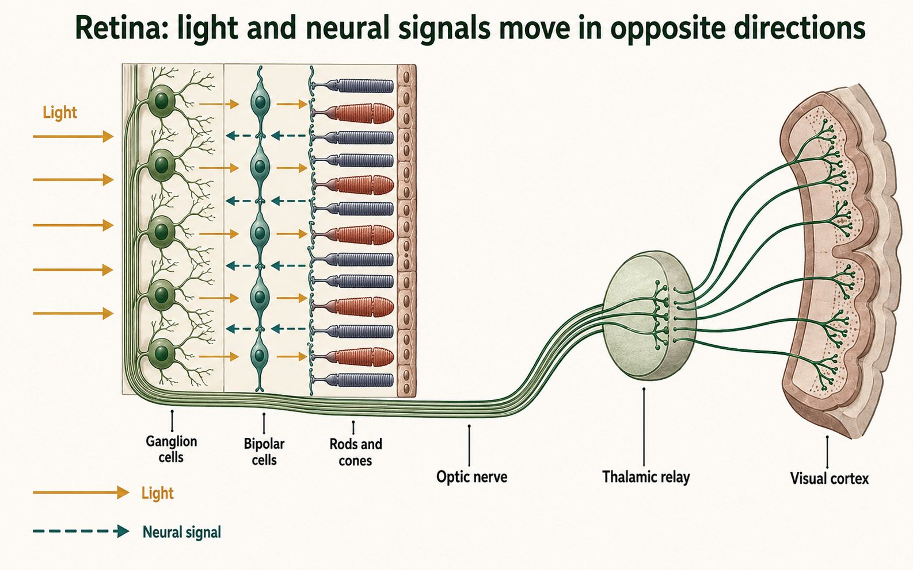
Rods and cones
| Feature | Rods | Cones |
|---|---|---|
| Light level | Very sensitive in dim light | Work best in brighter light |
| Colour | No colour discrimination | Colour vision |
| Detail | Lower detail | High detail, especially in fovea |
| Distribution | Common outside the fovea | Most dense in the fovea |
Build from the core idea: The core retina section introduced rods, cones, and the fovea. This block connects their distribution to visual acuity and light-level evidence.
Cones are concentrated in and near the fovea, the central retinal region used for detailed vision. Their pathways can preserve fine spatial information, especially in bright conditions. Rods are absent from the very centre of the fovea and are more common across much of the peripheral retina. Rod pathways are highly sensitive in dim light but usually provide less detail and no colour information.
Distribution explains several observations. A small detailed target is easiest to resolve when its image falls on the fovea. In very dim light, a faint object may be easier to detect when viewed slightly to the side because its image then reaches a rod-rich region. This does not mean peripheral vision is always better; it trades fine detail for sensitivity and is influenced by later neural processing.
A graph of receptor density should be read by retinal position. Look for the central cone peak, the absence of receptors at the optic disc, and broader rod distribution away from the centre. Density alone does not predict every visual experience because convergence, lighting, adaptation, and brain processing also matter. Use the graph to support a specific claim about acuity or sensitivity.
Compare receptor type, distribution, and the visual task.
| Retinal region | Receptor pattern | Task especially supported |
|---|---|---|
| Fovea | Very high cone density | Fine detail and colour in adequate light |
| Peripheral retina | Many rods with cones also present | Dim-light sensitivity and broad-field detection |
| Optic disc | No rods or cones | No direct light detection at that spot |
Receptor density is one part of vision; neural connections and viewing conditions also shape performance.
Watch and make sense of it
Watch for: Separate optical focusing, retinal transduction, and brain processing.
Focus: 4:45–5:40. Follow lens, retina and retinal neurons. Light reaches photoreceptors; neural signals—not light—continue through the optic nerve. No bright-light or eye test is needed.
Choose the video or the complete illustrated walkthrough. Then answer the same checkpoint to show that you made sense of the process.
Video preview loads when this lesson is open.
Work through these three illustrated steps. You can use them instead of the video, then answer the same checkpoint below.
The transparent cornea bends incoming light. Light passes through aqueous fluid, the pupil and the lens, then through vitreous fluid toward the retina. The iris adjusts pupil size; it does not focus by changing lens shape. Accommodation changes lens curvature for near and distant objects. The sclera supports the eye, while the choroid supplies blood and helps absorb stray light.
Optical and neural paths
| Stage | Structures | What travels |
|---|---|---|
| Refraction | Cornea → aqueous fluid → pupil → lens → vitreous fluid | Light |
| Transduction | Retina: rods and cones | Light changes cell signalling |
| Output | Retinal circuits → optic nerve → brain | Neural signals |
Rods and cones are photoreceptors in the retina. Rods are useful in dim light; cones support colour and fine detail in brighter conditions. The fovea is a cone-rich region for high acuity. Retinal circuits process the changing pattern, and ganglion-cell axons form the optic nerve. The optic disc is a blind spot because photoreceptors are absent where those axons leave.
The eye forms an inverted optical image, but the brain does not simply flip a finished picture. Retinal and brain circuits interpret spatial patterns of neural activity. A missing dot in a blind-spot activity is evidence about the position of an image on the retina. It is not a diagnosis, and viewing distance, fixation and screen layout can affect the result.
Three retinal regions
| Region | Receptors / axons | Consequence |
|---|---|---|
| Fovea | Densely packed cones | Fine detail in suitable light |
| Much peripheral retina | Many rods; some cones | Greater dim-light sensitivity, lower acuity |
| Optic disc | Axons exit; no photoreceptors | Blind spot |
Question: Fine detail is harder to see in dim light. Which receptor distinction helps explain this?
Reasoning: Rods provide greater dim-light sensitivity but less fine spatial detail than the cone-rich fovea in brighter light. Sensitivity and acuity are different properties. The lens does not turn rods into cones.
Now use the checkpoint below. A choice made here is not a medical diagnosis or proof that you performed a hands-on experiment.
Sense-making checkpoint
Learn · Part 3
The optical pathway describes where light travels: cornea, aqueous humour, pupil, lens, vitreous humour, and retina. The neural pathway begins at rods and cones. It continues through retinal cells, the optic nerve, a partial crossing at the optic chiasm, relay regions, and visual areas of the cerebrum. Keeping the pathways separate prevents light from being confused with a nerve impulse.
Accommodation changes lens shape. For a near object, ciliary muscle action reduces tension on the suspensory ligaments, and the elastic lens becomes rounder. A rounder lens bends light more. For a distant object, the lens becomes flatter and bends light less. The cornea still provides most refraction in both cases.
The fovea supports the sharpest central vision because cones are densely packed there and their pathways preserve detail. The optic disc creates a blind spot because ganglion-cell axons leave the eye at that location and no rods or cones are present. The other eye and the brain's use of surrounding information usually make the gap hard to notice.
A strong vision explanation states what is moving at each stage. Light is refracted through clear structures. Photoreceptors transduce light into a cellular response. Neural signals then travel through the optic nerve. The explanation should not say that light itself travels down a neuron.
Optical pathway becomes a neural pathway
Build from the core idea: The core section separated the optical path from neural interpretation. This block explains why each eye has a blind spot and why normal perception does not simply copy the retinal image.
The optic disc is the place where axons leave the retina to form the optic nerve. It has no rods or cones, so light that lands there is not detected. This creates a blind spot in each eye's visual field. With both eyes open, overlapping fields often provide information that covers the missing region. With one eye, the nervous system can use surrounding lines, colours, and patterns to make a reasonable perceptual estimate.
Visual-field information is also reorganized as it travels toward the brain. Signals from parts of both retinas contribute to each side of the visual-processing system. This arrangement supports comparison of overlapping information, but it does not mean the brain simply turns one complete picture upright. The cornea and lens form an inverted image on the retina; receptor responses are converted into neural signals, processed through retinal circuits, and interpreted across several brain regions.
Perception is useful but not a perfect recording. Context can change what a learner reports seeing, and a missing retinal signal can be unnoticed. In an evidence question, separate what the optics do, what the retina detects, and what neural processing contributes.
A clear explanation follows light, retinal detection, and neural interpretation in order.
| Stage | What happens | Common mistake to avoid |
|---|---|---|
| Optics | Cornea and lens focus an inverted image on the retina | Saying the lens interprets the image |
| Retina | Rods and cones transduce light except at the optic disc | Saying every retinal location detects light |
| Neural processing | Pathways compare and interpret signals | Saying the brain merely flips one picture |
A classroom blind-spot activity demonstrates a normal pathway feature, not a diagnostic test.
Worked example
Situation: A ray of light enters the eye and a signal later reaches the visual cortex.
Reasoning: A complete answer clearly separates the optical path from the neural path.
Retrieve it
Write one sequence for light through the eye and a second sequence for neural information leaving the retina.
Autosaves as you type
Guided practice
Try both questions. Feedback explains the science and points you to the matching textbook page.
Question 1
Question 2
Evidence Slip
Lesson 8 · Chapter 12
How can the inner ear detect both sound vibrations and head movement?
Learning goal
I can trace sound through the ear and explain how hair cells support hearing and equilibrium.
Before you begin
You should know that mechanoreceptors convert movement into neural information.
In the textbook
Chapter 12 · pp. 421–425 Q18–20, 23; p. 429 Q1–4
Four anchor words
These four anchors will help you enter the lesson. The full list below includes every new supporting term.
·
·
·
·
·
·
Learn · Part 1
Sound waves enter the auditory canal and vibrate the tympanic membrane. The malleus, incus, and stapes are the three ossicles of the middle ear. They transfer vibration to the oval window of the inner ear.
Pressure waves then move through fluid in the cochlea. They move the basilar membrane and bend hair cells in the organ of Corti. Bending opens mechanically gated channels, changing transmitter release onto sensory neurons. This is sensory transduction.
The round window allows pressure to be released. The Eustachian tube connects the middle ear with the throat and helps equalize air pressure across the tympanic membrane. It is not part of the neural sound pathway.
The pinna and auditory canal form the outer ear. They collect sound and guide pressure waves toward the tympanic membrane. The middle ear begins at this membrane. Its ossicles act as a linked lever system that transfers vibration from air to the fluid-filled inner ear.
The stapes pushes on the oval window. This motion produces pressure waves in cochlear fluid. Different regions of the basilar membrane respond most strongly to different sound frequencies. The round window moves in the opposite direction and provides space for the nearly incompressible fluid to shift.
Sound from air to neural signal
Three regions of the ear
| Region | Main structures | Main job |
|---|---|---|
| Outer ear | Pinna and auditory canal | Collect and direct sound |
| Middle ear | Tympanic membrane and ossicles | Transfer vibration |
| Inner ear | Cochlea and vestibular apparatus | Transduce sound and movement |
Build from the core idea: The core pathway followed sound from the pinna to the cochlea. This block explains how the middle ear transfers vibration between air and inner-ear fluid.
Sound-pressure changes move the tympanic membrane. The malleus, incus, and stapes form a linked ossicle chain that carries this motion across the air-filled middle ear. The stapes pushes on the oval window, creating pressure waves in the fluid of the cochlea. The round window can move in response, helping the inner-ear fluid shift when the oval window is pressed.
This transfer matters because air and fluid resist motion differently. The area difference between the larger tympanic membrane and smaller oval window, together with the lever action of the ossicles, increases pressure at the oval window. The system does not create energy. It improves transfer of the available mechanical energy while some energy is still lost.
Predict disruptions by following the chain. If the tympanic membrane moves but the ossicles cannot transmit motion effectively, less vibration reaches the oval window even if the cochlear receptors can function. If middle-ear pressure differs greatly from outside pressure, tympanic movement can be reduced; the Eustachian tube helps equalize that pressure. Classroom sound observations must stay at safe volumes and cannot diagnose hearing.
Follow movement and pressure from one structure to the next.
| Structure | Mechanical event | If transfer is reduced |
|---|---|---|
| Tympanic membrane | Vibrates with sound-pressure change | Ossicle motion decreases |
| Ossicles | Relay motion and increase pressure | Oval-window motion decreases |
| Oval window | Pushes on cochlear fluid | Inner-ear wave is reduced |
The model describes energy transfer and does not justify testing with loud sound.
Stop and Check
Which cells convert movement of the basilar membrane into a change in neural signalling?
Hair cells in the organ of Corti perform the transduction.
Learn · Part 2
The semicircular canals detect rotational movement. Each canal is oriented in a different plane. When the head turns, fluid movement bends a gelatinous structure and its hair cells. The firing pattern changes with the direction and speed of rotation.
The utricle and saccule detect linear acceleration and head position relative to gravity. Small calcium-carbonate crystals add mass to a gelatinous layer. Movement shifts the layer and bends hair cells.
Balance also uses vision and proprioception. The brain compares these sources and sends motor commands that adjust posture and eye movement. A classroom activity cannot diagnose hearing loss or a balance disorder. Avoid high-volume sound and stop any movement that causes discomfort.
In a semicircular canal, the sensory structure sits in an enlarged region near the canal's base. When the head begins to rotate, fluid lags behind and bends a gelatinous cupula. Hair cells inside it bend, changing the firing of vestibular sensory neurons. Opposite directions produce different firing patterns.
The vestibule is the central inner-ear region between the cochlea and semicircular canals. It contains the utricle and saccule. These organs have weighted sensory layers, where tiny calcium-carbonate crystals add inertia. Gravity or linear acceleration shifts the layer and bends hair cells. They report head tilt and straight-line motion, while the semicircular canals report rotation.
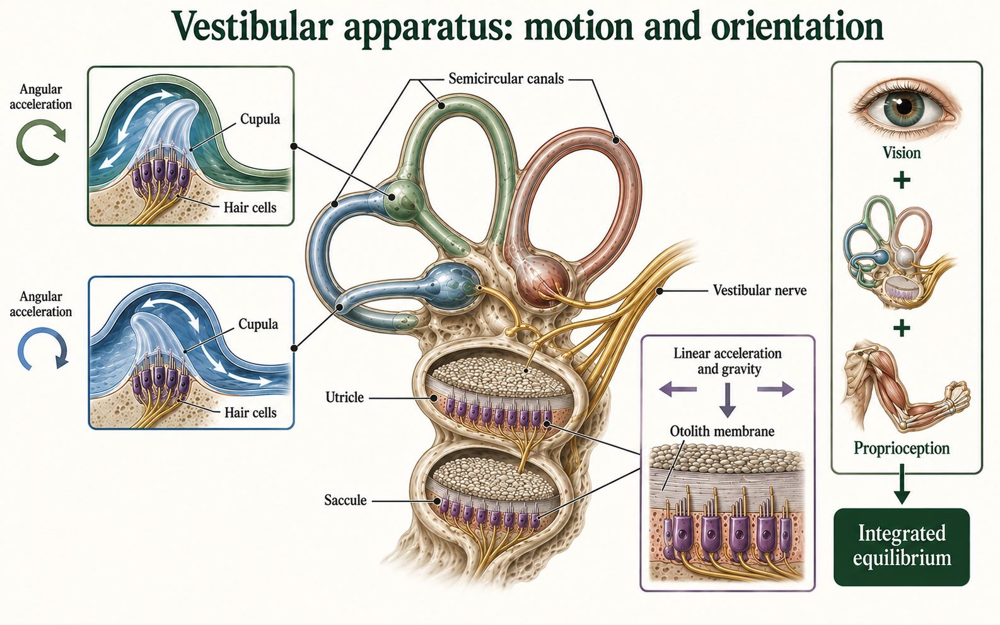
One receptor type, different mechanical inputs
| System | Structure | Movement detected |
|---|---|---|
| Hearing | Cochlear hair cells | Sound-driven basilar-membrane movement |
| Rotation | Semicircular canals | Fluid movement during head turning |
| Linear acceleration | Utricle and saccule | Weighted layer shifts with gravity or straight-line motion |
Build from the core idea: The core cochlea section connected fluid waves to hair-cell transduction. This block uses frequency and damage patterns to reason about cochlear location.
Different sound frequencies produce their greatest basilar-membrane motion at different cochlear locations. The base near the oval window responds most strongly to higher frequencies, while regions closer to the apex respond most strongly to lower frequencies. This place pattern helps the nervous system represent pitch. Hair cells in the organ of Corti bend as nearby structures move and convert mechanical motion into changes in neural signalling.
A localized hair-cell change can therefore affect one frequency range more than another. Suppose a synthetic hearing graph shows a larger threshold increase for high frequencies while low-frequency thresholds remain closer to the comparison pattern. A change near the cochlear base is more consistent with that evidence than one limited to the apex. The graph alone does not identify the cause, duration, or exact number of affected cells.
Read frequency data by checking both axes and units. A higher hearing threshold means a greater sound level was needed for detection in that test; it does not mean a higher firing rate. Compare the pattern across frequencies, link it to cochlear place, and state the limit. Never use classroom clips, headphones, or symptom images to diagnose hearing or expose learners to unsafe volumes.
Match the affected frequency range to the place of strongest basilar-membrane response.
| Synthetic pattern | Region to examine first | What the graph cannot prove |
|---|---|---|
| High-frequency thresholds increased | Cochlear base | Cause of the change |
| Low-frequency thresholds increased | Toward cochlear apex | Exact cells involved |
| All frequencies shifted | Broader pathway or test condition | One specific location without more evidence |
These are synthetic learning patterns, not clinical reference data.
Watch and make sense of it
Watch for: Track the change from pressure wave to mechanical vibration to hair-cell signalling.
Focus: 2:16–4:12. Trace sound from the outer ear through the ossicles to the oval window. The local walkthrough then explains cochlear hair cells and balance without sound testing.
Choose the video or the complete illustrated walkthrough. Then answer the same checkpoint to show that you made sense of the process.
Video preview loads when this lesson is open.
Work through these three illustrated steps. You can use them instead of the video, then answer the same checkpoint below.
The pinna directs sound toward the auditory canal. Pressure waves vibrate the tympanic membrane, also called the tympanum. The malleus, incus and stapes are the three ossicles that transfer vibration to the oval window. The Eustachian tube connects the middle ear with the throat and helps equalize pressure. It is not the pathway carrying sound into a sensory nerve.
Keep three ear functions separate
| Function | Path or structure |
|---|---|
| Transfer vibration | Pinna → canal → tympanum → ossicles → oval window |
| Transduce sound | Cochlear fluid → basilar membrane → organ-of-Corti hair cells |
| Equalize middle-ear pressure | Eustachian tube |
| Detect head movement | Vestibule and semicircular canals |
Oval-window movement produces fluid motion in the cochlea. Movement of the basilar membrane bends hair-cell bundles in the organ of Corti. This changes signalling to auditory nerve fibres. Different cochlear regions respond most strongly to different frequencies. Frequency is related to pitch; the strength of vibration is a different property. Do not use a screen activity to measure a person's hearing threshold.
Location of strongest cochlear response
| Tone in supplied model | Region most stimulated |
|---|---|
| Higher frequency | Near the base |
| Lower frequency | Closer to the apex |
Semicircular canals respond to head rotation. The vestibule includes organs that respond to linear acceleration and head tilt. Hair cells begin these signals too, but the stimuli differ from sound vibration in the cochlea. The CNS combines vestibular information with vision and proprioception. Balance is therefore not explained by the inner ear alone. Use the supplied cases without spinning or loud sounds.
Question: Pressure differs on the two sides of the eardrum. Which structure helps, and does it transduce sound?
Reasoning: The Eustachian tube helps equalize middle-ear pressure. Cochlear hair cells perform the mechanical-to-neural conversion for hearing. These structures solve different problems.
Now use the checkpoint below. A choice made here is not a medical diagnosis or proof that you performed a hands-on experiment.
Sense-making checkpoint
Learn · Part 3
Pitch is linked mainly with sound frequency, while loudness is linked with wave amplitude and neural recruitment. In the cochlea, high frequencies produce the strongest movement nearer the base. Lower frequencies peak farther toward the cochlear tip. Hair cells at different places therefore contribute information about pitch.
An audiogram plots the quietest level detected at different frequencies. A classroom graph can be used to practise reading axes and patterns. It is not a hearing test unless calibrated equipment, controlled procedures, and a qualified professional are involved. Browser tones and personal headphones vary too much for diagnosis.
To read the synthetic table, first compare values across frequency within one ear. Then compare the two ears at the same frequency. A higher course value means a louder sound was needed in that model. It does not state why the pattern occurred, so any cause would require more evidence.
Balance evidence also needs care. Dizziness can have many causes. A short movement activity cannot locate a damaged structure. In course cases, state which sensory input changed, how the CNS might compare vestibular, visual, and proprioceptive signals, and what further evidence would be needed.
The Eustachian tube has a supporting role. It helps equalize air pressure on the two sides of the tympanic membrane. It does not carry sound to the auditory nerve. Separating supporting structures from the transduction pathway makes a hearing explanation more precise.
Synthetic sound-detection pattern
| Frequency | Left-ear course value | Right-ear course value | Careful observation |
|---|---|---|---|
| 500 Hz | 10 dB | 10 dB | Similar low-frequency values |
| 2000 Hz | 15 dB | 20 dB | Small difference |
| 8000 Hz | 35 dB | 20 dB | Higher left-ear value in this data set |
Build from the core idea: The core lesson treated balance as more than the semicircular canals. This block combines vestibular, visual, and proprioceptive evidence in one unfamiliar case.
Balance depends on several information sources. Semicircular canals detect rotational acceleration, while the vestibule helps detect linear acceleration and head position relative to gravity. Vision provides information about movement relative to the surroundings. Proprioceptors in muscles, tendons, and joints report body position. Brainstem and cerebellar networks compare these inputs and adjust posture and eye movements.
The sources can disagree. After spinning stops, fluid movement in the semicircular canals may continue briefly, while visual surroundings appear still and proprioceptors report a planted body position. The mismatch can produce a sensation of continued motion and an unsteady response. Closing the eyes removes visual information, so the nervous system must rely more on vestibular and proprioceptive input.
In a supplied-data case, compare conditions rather than labelling a disorder. If stability decreases mainly with eyes closed, visual information may have been compensating for less precise input elsewhere. If a pattern changes during head rotation but not quiet standing, rotational vestibular information deserves attention. These statements identify useful evidence, not a diagnosis. Safe activities must avoid intense spinning, fall risk, and claims about a learner's health.
Changing one condition reveals how the remaining information supports the response.
| Condition | Information reduced or changed | Reasoning focus |
|---|---|---|
| Eyes closed | Visual reference | Vestibular and proprioceptive contribution |
| Head rotates | Semicircular-canal input changes | Rotational acceleration and eye stabilization |
| Unstable surface | Proprioceptive reliability changes | Use of visual and vestibular references |
Use supplied observations or a safe, stationary alternative; this is not a balance assessment.
Worked example
Situation: A learner turns their head while standing still, then closes their eyes.
Reasoning: Equilibrium is an integrated result, not the work of one organ alone.
Retrieve it
Explain how hair cells support both hearing and balance, including what bends them in each system.
Autosaves as you type
Guided practice
Try both questions. Feedback explains the science and points you to the matching textbook page.
Question 1
Question 2
Evidence Slip
Practice & Review · Chapter 12
Use these twelve questions to check the chapter ideas that matter most. Each answer includes a short explanation and an exact textbook page.
Textbook chapter review
Read the summary on printed p. 431. Complete Q1–25 and two of Q26–30 on printed pp. 432–433.
This is optional extra review. Use it to strengthen the ideas you want to revisit before the course questions.
Course practice
These are the twelve questions you need to answer for this chapter practice.
Question 1
Question 2
Question 3
Question 4
Question 5
Question 6
Question 7
Question 8
Question 9
Question 10
Question 11
Question 12
Lesson 9 · Chapter 13
How do the nervous and endocrine systems keep changing conditions within workable ranges?
Learning goal
I can build a negative-feedback loop and compare nervous and endocrine control by signal, route, speed, and duration.
Before you begin
You should know neural pathways, receptors, and that organs respond only when their cells have suitable receptors.
In the textbook
Chapter 13 · pp. 437–441 Q1, 2, 7, 8; p. 442 Q1, 2, 4
Four anchor words
These four anchors will help you enter the lesson. The full list below includes every new supporting term.
·
·
·
·
·
·
Learn · Part 1
Homeostasis does not hold the body at one unchanging number. Conditions such as temperature, blood glucose, and water balance vary within workable ranges. Control systems detect changes and adjust responses over time.
A regulated variable is the condition being monitored. A receptor detects a change. A control centre compares information with a workable range and organizes output. An effector changes its activity. The response changes the regulated variable.
In negative feedback, the response reduces the original disturbance. If body temperature rises, heat-loss responses oppose the rise. The word negative describes the direction of the response, not whether the response is harmful.
A set point is a useful model for a target value, but many body conditions are regulated across a range. The target can also shift. Body temperature, for example, changes with time of day and can be reset during fever. This moving balance is called dynamic stability: homeostasis is a process of adjustment, not a claim that every value is constant.
A stimulus-response chain is not automatically negative feedback. The response must feed back to the regulated variable and oppose the original change. Sweating after body temperature rises fits this pattern because evaporation increases heat loss. A pupil constricting in bright light is a response, but the regulated variable and feedback claim must still be identified carefully.
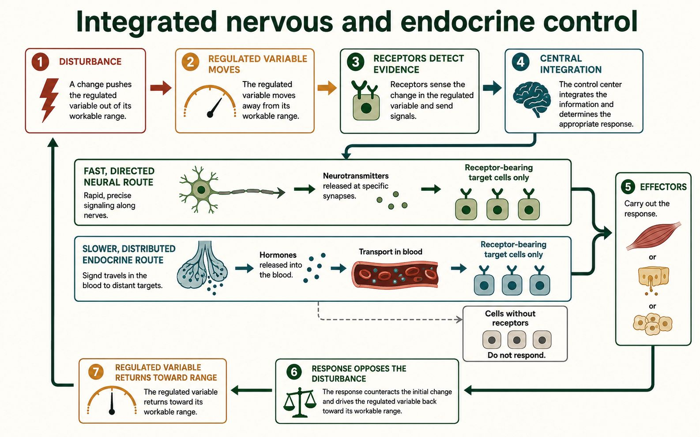
Build a negative-feedback explanation
Build from the core idea: The core lesson described homeostasis as dynamic stability within workable limits. This block uses time-series evidence to distinguish a range, a temporary disturbance, and a changed set point.
A regulated variable usually moves rather than staying on one exact line. A workable range describes values compatible with normal function under the stated conditions. Negative feedback reduces departures from that range, but delays and changing inputs can create small rises and falls. A single point outside the usual range does not show whether control failed; the direction and duration of the response matter.
A set point is a reference used by a control system, not always one fixed number for life. Fever can involve a temporary upward change in temperature regulation, while daily rhythms and activity can shift some regulated patterns. In contrast, overheating without a set-point change produces responses that promote heat loss. The same measured temperature can therefore be reached through different control conditions.
Read a time-series graph in phases. Identify the baseline pattern, the disturbance, the response delay, and whether the variable returns toward its earlier range or stabilizes around a new reference. Then compare a control signal or effector response if it is provided. Avoid calling every change a loss of homeostasis; controlled adjustment is part of dynamic homeostasis.
Use direction, duration, and response evidence rather than one isolated value.
| Pattern | Graph evidence | Supported interpretation |
|---|---|---|
| Brief departure and return | Variable moves back toward prior range | Feedback opposed the disturbance |
| Sustained new regulated level | Responses maintain a shifted range | A changed reference may be involved |
| Continued drift | Variable moves away despite response | Control is insufficient or disturbance continues |
A graph pattern supports a control-system explanation only when variables and conditions are clearly identified.
Stop and Check
Sweating increases heat loss after body temperature rises. What makes this negative feedback?
The response opposes the original rise by increasing heat loss, which moves temperature toward its workable range.
Learn · Part 2
The nervous system sends electrical signals along neurons and chemical signals across synapses. Its responses are often fast, brief, and directed to specific connected targets.
The endocrine system releases hormones into the blood. Hormones travel widely, but only receptor-bearing target cells respond. Endocrine responses are often slower to begin and longer lasting because transport, receptor binding, and changes inside target cells take time.
The systems overlap. The hypothalamus receives neural information and controls pituitary pathways. Sympathetic neurons stimulate the adrenal medulla. During stress, fast neural signals and longer hormone responses can support the same body-wide goal.
An endocrine gland releases a hormone into body fluid, usually blood. The hormone is the signal, not the gland itself. Transport carries the signal around the body. Receptor binding happens only at compatible target cells, and the target response follows. These four steps should not be collapsed into one arrow.
Water-soluble hormones usually bind to receptors at the cell membrane and start an internal signalling pathway. Lipid-soluble hormones can cross the membrane and bind receptors inside the cell. Both require compatible receptors. Neither type causes every tissue to respond in the same way.
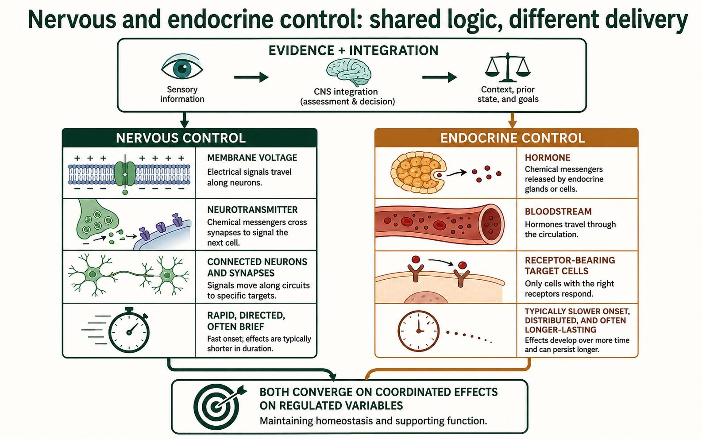
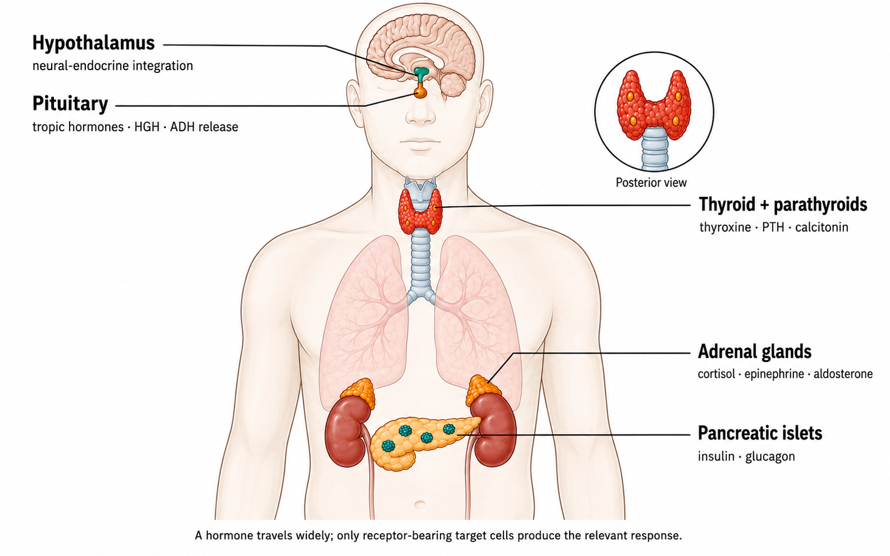
Build from the core idea: The core section identified receptor, control centre, and effector roles. This block asks how the pattern changes when one part detects, compares, or responds incorrectly.
Troubleshooting begins with the disturbance and the return effect. If a regulated variable changes but the receptor does not detect it, the control centre receives weak or missing information. If detection is normal but the control centre does not produce the correct signal, effectors may remain inactive. If the signal is present but an effector or target cannot respond, the response will still be weak even though earlier steps appear normal.
Negative feedback is defined by what the response does to the original disturbance. A rising variable should produce effects that oppose the rise; a falling variable should produce effects that oppose the fall. The value can still move around a workable range because input, delay, and response strength keep changing. A flat line is not required for homeostasis, and a changed set point is not automatically a system failure.
In an unfamiliar case, compare at least two measurements. A high control signal with a weak target response suggests a different location from a low control signal with the same weak response. Name the failed step as a hypothesis, then state what additional evidence would test it.
The same final variable can result from failures at different points in the pathway.
| Evidence pattern | Likely changed step | Useful next evidence |
|---|---|---|
| Disturbance present; control signal remains low | Detection or control output | Measure receptor input and control-centre signal |
| Control signal high; target response weak | Effector or target response | Check receptors and target-cell change |
| Response occurs; variable does not return | Response is too small or another input continues | Measure disturbance and return effect over time |
A pattern supports a pathway hypothesis; it does not prove one cause by itself.
Watch and make sense of it
Watch for: Compare hormone transport and target-cell response with neural signalling.
Focus: 3:31–4:04. Ask why a circulating hormone affects some cells but not others. A target needs the correct receptor. Not every gland is controlled by the pituitary.
Choose the video or the complete illustrated walkthrough. Then answer the same checkpoint to show that you made sense of the process.
Video preview loads when this lesson is open.
Work through these three illustrated steps. You can use them instead of the video, then answer the same checkpoint below.
An endocrine gland releases a hormone into blood. A hormone is a chemical signal, not the gland itself. Blood can carry it to many tissues, but a response needs a compatible receptor and suitable cell machinery. The hypothalamus connects neural information with hormone control. Other glands also respond directly to changes such as blood glucose or calcium; not every response starts in the pituitary.
A water-soluble hormone usually binds a surface receptor and changes activity inside the cell. A lipid-soluble hormone can act through an intracellular receptor. In both cases the receptor matters. A cell without the relevant receptor does not produce that hormone's specific response just because blood reaches it. This explains how one circulating signal can coordinate selected targets without affecting all cells identically.
Same blood signal, different cells
| Cell | Compatible receptor? | Expected specific response |
|---|---|---|
| A | Yes; machinery intact | Response possible |
| B | No | No matching hormone response |
| C | Yes; downstream step blocked | Response may be reduced |
Homeostasis is dynamic stability within workable ranges. A receptor detects a change, a control process organizes a response, and effectors change activity. In negative feedback, the response reduces the original disturbance in the regulated variable. Negative does not mean harmful. Nervous and endocrine pathways can work together, with different routes and timing, to keep conditions suitable as demands change.
A return effect closes the loop
| Event | Blood glucose in a supplied case |
|---|---|
| Before meal | Within workable range |
| After meal | Rises |
| Insulin-related target response | Moves back toward range |
Question: A hormone reaches two cell types, but only one has its receptor. Which is a target?
Reasoning: Only the receptor-bearing cell has the necessary recognition step. Whether it responds normally also depends on downstream machinery. Transport in blood and target-cell response are separate events.
Now use the checkpoint below. A choice made here is not a medical diagnosis or proof that you performed a hands-on experiment.
Sense-making checkpoint
Learn · Part 3
Neural signals can reach a connected target within milliseconds because action potentials travel along a defined pathway. Neurotransmitters then cross a short synaptic gap. Hormones must be released, transported, bind receptors, and change target-cell activity. This often creates a slower start and a longer effect, but the exact timing varies.
The systems frequently work together. During dehydration, osmoreceptors in the hypothalamus detect that body fluids have become more concentrated. These are sensory cells sensitive to fluid concentration. Antidiuretic hormone, or ADH, then carries a signal to the kidneys that helps conserve water. Lesson 11 follows the full pathway. During an alarm, sympathetic neurons act quickly and the adrenal medulla releases epinephrine into blood. The body does not choose only one control system.
To compare pathways, use five questions: What changed? What detects it? What signal travels? Which target can respond? How does the response affect the original variable? This frame exposes missing links and prevents a hormone name from standing in for a full mechanism.
In a feedback graph, time belongs on the horizontal axis. The disturbed variable changes first. The response begins after detection and processing. If the loop is negative feedback, the variable then moves back toward its workable range. A delay or small overshoot does not make the system positive feedback.
Build a complete control explanation
| Question | Neural example | Endocrine example |
|---|---|---|
| What changed? | Skin pressure | Blood glucose |
| What detects it? | Mechanoreceptor | Pancreatic islet cells |
| What signal travels? | Action potentials and neurotransmitter | Hormone in blood |
| What target responds? | Connected neuron or muscle | Receptor-bearing tissue |
| What is the return effect? | Movement changes the situation | Glucose moves toward its range |
Build from the core idea: The core lesson compared fast neural signals with slower hormone signals. This block coordinates both systems during one unfamiliar change instead of choosing only one controller.
Imagine stepping from a warm room into severe cold. Temperature receptors provide rapid neural input to the hypothalamus. Neural pathways can quickly change blood-vessel diameter, muscle activity, and behaviour. These responses begin within seconds and can reduce heat loss or increase heat production. At the same time, endocrine pathways can adjust metabolism and longer-lasting fuel use through hormones carried in blood.
The systems overlap but do not send the same message in the same way. Neural signals travel along specific cells and cross synapses to precise targets. Hormones circulate widely, yet only receptor-bearing target cells respond. The hypothalamus links the systems by receiving neural information and influencing autonomic output as well as pituitary pathways. Behaviour, such as adding clothing or moving to shelter, can be as important as internal responses.
Build an integrated explanation by ordering responses by time, route, target, and direct effect. A rapid change does not make endocrine control irrelevant, and a circulating hormone does not affect every cell. Identify how each response opposes the disturbance and state what evidence would show that the systems are coordinating rather than acting independently.
Separate route and timing, then connect both responses to the same disturbance.
| Response route | Typical timing | Evidence to trace |
|---|---|---|
| Neural / autonomic | Rapid | Specific nerve output and immediate effector change |
| Endocrine | Slower onset and longer effect | Hormone level and receptor-bearing target response |
| Behavioural | Variable and often rapid | Action that changes exposure to the disturbance |
Timing ranges overlap; the table organizes evidence rather than imposing exact universal times.
Worked example
Situation: A learner writes: “Blood glucose rises, insulin is released, so this is negative feedback.”
Reasoning: Hormone release alone does not prove negative feedback. The target response must reduce the original disturbance.
Retrieve it
Choose body temperature or blood glucose. Name the variable, receptor or sensor, control signal, effector, and return effect.
Autosaves as you type
Guided practice
Try both questions. Feedback explains the science and points you to the matching textbook page.
Question 1
Question 2
Evidence Slip
Lesson 10 · Chapter 13
How can the hypothalamus and pituitary control another endocrine gland or body tissue?
Learning goal
I can trace a hypothalamus-pituitary pathway and explain the source, target, and effects of human growth hormone.
Before you begin
You should know endocrine signalling, target-cell receptors, and negative feedback.
In the textbook
Chapter 13 · p. 442 Q10–12 and Q3; p. 446 Q13–14
Four anchor words
These four anchors will help you enter the lesson. The full list below includes every new supporting term.
·
·
·
·
·
·
·
Learn · Part 1
The pituitary is sometimes called a master gland, but that label is incomplete. The hypothalamus regulates pituitary activity, and several other glands also respond to signals outside the pituitary.
The anterior pituitary is glandular tissue. Hypothalamic releasing hormones travel through a small portal blood system and control anterior-pituitary cells. Some anterior-pituitary hormones are tropic because they stimulate another endocrine gland. TSH targets the thyroid, and ACTH targets the adrenal cortex.
The posterior pituitary is neural tissue. It stores and releases hormones made by hypothalamic neurons. ADH is one of those hormones and will be studied in the next lesson.
Hypothalamic neurons receive information about the nervous system and internal conditions. Some release hormones into the portal vessels between the hypothalamus and anterior pituitary. Because this blood route is short, a small amount of releasing hormone can reach anterior-pituitary target cells before being diluted through the whole circulation.
Anterior-pituitary cells make the hormones they release. Posterior-pituitary nerve endings do not make ADH. They store and release ADH made in hypothalamic neurons. This source-and-release distinction is central to the next lesson and prevents the posterior pituitary from being treated like a second glandular lobe.
Two routes from the hypothalamus
Source, target, and effect
| Hormone | Source | Main target | Unit A effect |
|---|---|---|---|
| hGH | Anterior pituitary | Many tissues, including liver, bone, muscle | Supports growth and metabolism |
| TSH | Anterior pituitary | Thyroid | Stimulates thyroxine release |
| ACTH | Anterior pituitary | Adrenal cortex | Stimulates cortisol release |
Build from the core idea: The core lesson separated the anterior and posterior pituitary. This block compares the neural and blood-vessel routes by which the hypothalamus controls them.
The anterior pituitary is glandular tissue. Hypothalamic neurons release regulatory hormones into a small portal blood-vessel system. Those hormones travel a short distance to selected anterior-pituitary cells, where receptor binding can increase or decrease secretion of a pituitary hormone such as TSH, ACTH, or hGH. The hypothalamic signal is neural in origin but reaches the anterior pituitary as a hormone in blood.
The posterior pituitary is connected differently. ADH is made in hypothalamic neurons and transported down their axons. Action potentials reaching the axon endings cause ADH to be released from the posterior pituitary into the bloodstream. The posterior pituitary stores and releases these hypothalamic hormones; it does not produce ADH itself.
Compare pathways by asking where the hormone is made, how it reaches the pituitary region, and what is released into general circulation. Avoid calling the pituitary an independent master gland. Its activity depends on hypothalamic control, feedback from target-gland hormones, and other body signals. A pathway diagram should preserve these source and route differences.
Source, travel route, and release site distinguish the two pathways.
| Pituitary region | Signal arriving from hypothalamus | What enters general blood |
|---|---|---|
| Anterior | Regulatory hormone through portal vessels | Hormone made by anterior-pituitary cells |
| Posterior | Action potentials along hypothalamic axons | Hormone made in hypothalamus and released from axon endings |
The comparison focuses on Unit A examples and does not require out-of-unit reproductive hormones.
Stop and Check
Why is “the pituitary controls every endocrine gland” inaccurate?
The hypothalamus regulates the pituitary, not every gland is controlled by it, and glands can also respond to blood chemistry or neural signals.
Learn · Part 2
Human growth hormone, or hGH, is released by the anterior pituitary. It acts directly on some tissues and stimulates the liver and other tissues to produce growth factors. These signals support protein synthesis, cell division, bone growth, and changes in fuel use.
Growth plates are regions near the ends of growing long bones where new tissue allows the bones to lengthen. Too little hGH during childhood can limit growth. Too much before growth plates close can cause excessive linear growth. Too much after the plates close can enlarge some bones and soft tissues. These patterns are explained as hormone imbalances, not diagnosed from appearance.
hGH release changes in pulses and is influenced by sleep, activity, nutrition, and feedback. A single measurement may therefore be hard to interpret. A useful data explanation looks for a pattern over time and identifies its limits.
Growth requires more than hGH. Nutrition, thyroid hormones, sex hormones, genetics, health, and growth-plate state also matter. hGH should therefore be described as one important signal in a larger system. It does not directly make every body part grow at the same rate.
Hormone imbalance patterns depend on age and timing. Too much hGH before growth plates close can increase long-bone length. Excess after closure cannot lengthen those bones in the same way, but it can enlarge some bones and soft tissues. These course patterns explain physiology and are not a basis for judging or diagnosing a person.
Human growth hormone pathway
Read a pulse pattern
| Time | Sample A hGH | Sample B hGH |
|---|---|---|
| 08:00 | Low | Low |
| 12:00 | Moderate pulse | Low |
| 22:00 | High pulse | Moderate pulse |
| 02:00 | Low | High pulse |
Build from the core idea: The core lesson linked human growth hormone to growth and tissue support. This block interprets age-related evidence without assuming that one hormone value explains a person's height.
Human growth hormone, or hGH, is released by the anterior pituitary in pulses. It can act directly on some tissues and can stimulate production of other growth signals, especially in the liver. During childhood and adolescence, these signals support bone and tissue growth when growth plates, nutrition, thyroid function, and general health also permit it. In adults, hGH continues to influence tissue maintenance and metabolism, but it does not lengthen bones after growth plates have closed.
A growth-rate graph usually shows velocity, such as centimetres per year, rather than total height. Growth velocity is high early in life, changes through childhood, rises during the adolescent growth spurt, and later approaches zero for height. A hormone measurement taken once may miss pulses and cannot by itself explain the curve. Age, sex-related development, genetics, nutrition, target receptors, and other hormones all contribute.
When comparing data, identify age, measurement type, and timing. A low growth rate with an unusual hormone pattern supports further pathway questions but does not prove one cause. Strong reasoning links hGH source, target effects, and feedback to the supplied evidence while stating that real growth assessment requires far more information.
Distinguish growth velocity, total size, and a pulsatile hormone measurement.
| Measure | What it shows | Important limit |
|---|---|---|
| Height | Accumulated body length at a time | Does not show current growth rate alone |
| Growth velocity | Change in height per unit time | Varies with developmental stage |
| Single hGH value | Hormone level at one moment | Pulses make one sample incomplete |
Synthetic growth evidence supports pathway reasoning and is not a tool for assessing an individual learner.
Watch and make sense of it
Watch for: Trace one releasing hormone, pituitary hormone, target gland, and feedback signal.
Focus: 0:21–1:33. Trace hypothalamus → anterior pituitary → thyroid, then the return feedback. TRH is a releasing hormone; the anterior-pituitary cells respond by releasing TSH.
Choose the video or the complete illustrated walkthrough. Then answer the same checkpoint to show that you made sense of the process.
Video preview loads when this lesson is open.
Work through these three illustrated steps. You can use them instead of the video, then answer the same checkpoint below.
The hypothalamus controls selected anterior-pituitary cells using hormones carried in a small portal blood system. The anterior pituitary makes and releases its own hormones. The posterior pituitary instead releases ADH made in hypothalamic neurons and carried along their axons. Production and release are different steps. This is why calling the pituitary an independent master gland is misleading.
Compare four Unit A pituitary pathways
| Hormone | Made by | Released from | Main target or role |
|---|---|---|---|
| hGH | Anterior pituitary | Anterior pituitary | Many tissues; direct and growth-factor effects |
| TSH | Anterior pituitary | Anterior pituitary | Thyroid gland |
| ACTH | Anterior pituitary | Anterior pituitary | Adrenal cortex |
| ADH | Hypothalamic neurons | Posterior pituitary | Kidney collecting ducts |
A tropic hormone acts mainly on another endocrine gland. TSH stimulates the thyroid; ACTH stimulates cortisol release from the adrenal cortex. The target gland's hormone then acts on receptor-bearing tissues. Trace each source and target separately. TSH is not thyroxine, and ACTH is not cortisol. A high upstream signal can coexist with a low target-gland output if the target response is weak.
Source, target, and effect
| Hormone | Source | Main target | Unit A effect |
|---|---|---|---|
| hGH | Anterior pituitary | Many tissues, including liver, bone, muscle | Supports growth and metabolism |
| TSH | Anterior pituitary | Thyroid | Stimulates thyroxine release |
| ACTH | Anterior pituitary | Adrenal cortex | Stimulates cortisol release |
Human growth hormone, hGH, has direct effects and indirect effects through growth factors, including those released by the liver. Bone, muscle and other tissues can respond. Effects depend on age, nutrition, receptors and growth-plate status. Hormones are released in patterns, so one blood value cannot describe every pulse or diagnose a cause. Feedback signals help regulate further release.
Read a pulse pattern
| Time | Sample A hGH | Sample B hGH |
|---|---|---|
| 08:00 | Low | Low |
| 12:00 | Moderate pulse | Low |
| 22:00 | High pulse | Moderate pulse |
| 02:00 | Low | High pulse |
Question: Why is TSH called tropic, while hGH is not simply another name for TSH?
Reasoning: TSH's main target is the thyroid gland. hGH has several direct and indirect growth-related targets. Naming the release site alone does not identify the hormone's target or effect.
Now use the checkpoint below. A choice made here is not a medical diagnosis or proof that you performed a hands-on experiment.
Sense-making checkpoint
Learn · Part 3
TSH and ACTH are tropic hormones because their main targets are endocrine glands. TSH binds to thyroid cells and supports thyroxine release. ACTH binds to cells of the adrenal cortex and supports cortisol release. The target-gland hormones then act on other tissues and also provide feedback to the hypothalamus and pituitary.
hGH is different. It has direct effects on several tissues and indirect effects through growth factors, including factors released by the liver. Calling every anterior-pituitary hormone tropic would therefore be inaccurate. The useful question is whether the hormone's main target is another endocrine gland.
A hormone table should be read across one row. Start with the source, follow the hormone to its target, and name the effect. Then ask what signal reduces further release. Reading down one column can compare sources or targets, but it does not by itself explain the pathway.
A source–target–effect answer should also keep a hormone separate from the response it causes. TSH is the signal, the thyroid is the target gland, and increased thyroxine release is the response. Naming each role makes it easier to find the step that changed in a data case.
Pilot 2 focuses on the pituitary hormones required for Unit A. Other pituitary hormones are important in human biology, but reproductive control belongs to another unit. Keeping them out of required questions gives more time to understand hGH, TSH, ACTH, and ADH well.
Compare four Unit A pituitary pathways
| Hormone | Made by | Released from | Main target or role |
|---|---|---|---|
| hGH | Anterior pituitary | Anterior pituitary | Many tissues; direct and growth-factor effects |
| TSH | Anterior pituitary | Anterior pituitary | Thyroid gland |
| ACTH | Anterior pituitary | Anterior pituitary | Adrenal cortex |
| ADH | Hypothalamic neurons | Posterior pituitary | Kidney collecting ducts |
Build from the core idea: The core tables traced source, target, and effect. This block uses paired hormone levels to locate the earliest mismatch in an endocrine axis.
A source-target-feedback axis can be tested at more than one level. In a simplified thyroid axis, the hypothalamus supports anterior-pituitary TSH release, TSH stimulates the thyroid, and thyroxine feeds back to reduce earlier stimulation. If thyroxine is low, a functioning pituitary would usually increase TSH. Low thyroxine together with high TSH therefore differs from low thyroxine together with low or inappropriately normal TSH.
The first pattern is more consistent with a weak thyroid response to stimulation. The second directs attention earlier in the axis because the expected pituitary increase is missing. Receptor changes can create another pattern: a control hormone may be present or high while its target responds weakly. Paired measurements are more informative than naming a disorder from one hormone value.
Use the supplied reference ranges and direction of feedback. Start with the final hormone or effect, predict what the upstream signal should do, and compare that prediction with the data. Then name the earliest mismatch and a measurement that could test it. These synthetic patterns teach pathway logic and are not diagnostic categories for real people.
Predict the feedback response before deciding which level to examine.
| Final hormone or effect | Upstream control signal | First location to examine |
|---|---|---|
| Low | High | Target gland or target response |
| Low | Low or not increased | Earlier control source or release |
| High | High instead of reduced | Feedback sensing or control response |
Use only question-specific ranges; real endocrine interpretation requires clinical context and repeated evidence.
Worked example
Situation: ACTH rises and cortisol rises later.
Reasoning: A tropic pathway names two endocrine levels and closes the loop with feedback.
Retrieve it
Explain one difference between the anterior and posterior pituitary, then name one hormone linked with each.
Autosaves as you type
Guided practice
Try both questions. Feedback explains the science and points you to the matching textbook page.
Question 1
Question 2
Evidence Slip
Lesson 11 · Chapter 13
How does the body conserve water when blood becomes too concentrated?
Learning goal
I can trace ADH from stimulus to kidney response and explain changes in urine volume and concentration.
Before you begin
You should know the hypothalamus-pituitary relationship, target cells, and negative feedback.
In the textbook
Chapter 13 · p. 442 Q10–12 and Q3; p. 446 Q13–14
Four anchor words
These four anchors will help you enter the lesson. The full list below includes every new supporting term.
·
·
·
·
·
·
·
·
Learn · Part 1
Body fluids contain water and dissolved substances such as sodium ions. When the body loses water through sweating, breathing, or urine, the blood plasma becomes more concentrated. Specialized osmoreceptors in the hypothalamus respond to this change. They provide the sensory information that begins the water-conservation response.
Neurons in the hypothalamus make antidiuretic hormone, or ADH. The hormone moves down their axons and is stored in nerve endings in the posterior pituitary. When the neurons are activated, the posterior pituitary releases ADH into the blood. The hypothalamus is the production site; the posterior pituitary is the release site.
ADH travels to kidney collecting ducts. It binds to receptors on specific duct cells and increases the placement of aquaporin water channels in their membranes. More water then moves from the forming urine back into the blood. ADH does not pull dissolved wastes out of the urine, and it cannot affect cells that lack the matching receptor.
Water moves through aquaporins by osmosis, from a region with more available water toward the more concentrated fluid around the collecting duct. ADH changes how easily water can cross the duct membrane. It does not make the kidney create new water. This distinction links a hormone signal to a physical movement of water.
ADH negative feedback
Predict urine from ADH
| Condition | ADH | Water reabsorbed | Urine |
|---|---|---|---|
| Water loss | Higher | More | Lower volume, more concentrated |
| Excess water | Lower | Less | Higher volume, more dilute |
Build from the core idea: The core lesson connected dehydration to ADH release. This block reads how osmoreceptor activity changes as body-fluid concentration changes.
Osmotic concentration describes the amount of dissolved particles relative to water. When the body loses proportionally more water than solute, extracellular fluid becomes more concentrated. Specialized hypothalamic osmoreceptors change their activity in response. Above a response range, stronger osmotic stimulation usually supports more ADH release and greater thirst.
The relationship is not an on-off switch at one perfect number. A graph may show little ADH across a lower range, a steep rise across a sensitive range, and a different slope at higher values. Blood volume and pressure signals can also influence ADH, especially during substantial fluid loss. The graph's axes and stated conditions determine which explanation is justified.
To interpret paired curves, compare the concentration at which ADH begins to rise and the response at the same concentration. A right-shifted curve requires a higher concentration for a similar response. A lower plateau may suggest a limit in release capacity. Those are mechanism hypotheses, not diagnoses. Connect the hormone pattern to predicted urine volume and concentration, then state what other evidence is needed.
Read the concentration first, then predict hormone and kidney responses.
| Body-fluid pattern | Expected ADH direction | Expected urine pattern |
|---|---|---|
| More concentrated | Increase | Lower volume and more concentrated |
| Less concentrated | Decrease | Higher volume and more dilute |
| Concentration rises but ADH stays low | Mismatch | A source or release step needs investigation |
Directions are simplified for synthetic cases; volume, pressure, intake, and kidney function also affect real patterns.
Stop and Check
Where is ADH made, and where is it released into the blood?
ADH is made by neurons in the hypothalamus and released from the posterior pituitary.
Learn · Part 2
When ADH activity rises, the kidneys return more water to the blood. The remaining urine has less water, so its volume falls and its concentration rises. Water conservation helps dilute the blood back toward its workable range. As the disturbance becomes smaller, osmoreceptor stimulation and ADH release fall. Thirst can support the same goal by increasing water intake.
When body fluids are unusually dilute, osmoreceptor stimulation decreases. Less ADH is released, collecting ducts become less permeable to water, and a larger volume of dilute urine is produced. ADH therefore changes both urine volume and urine concentration, but in opposite directions. A strong answer always states which variable rises and which falls.
The graph shows a general relationship rather than a medical reference range. As blood concentration rises above the course model's baseline, ADH and urine concentration rise while urine volume falls. The response is dynamic: values change over time, and they do not remain fixed at one exact number.
Read each line from left to right before comparing the lines. First state what happens to blood concentration. Then describe the direction of ADH, urine concentration, and urine volume. Finally, explain the kidney mechanism. This order prevents a graph description from becoming a list with no biological cause.
| Relative blood concentration | ADH | Urine concentration | Urine volume |
|---|---|---|---|
| Low | Low | Low | High |
| Near baseline | Moderate | Moderate | Moderate |
| High | High | High | Low |
Hormone reasoning frame
Build from the core idea: The core section traced ADH from internal sensing to kidney response. This block separates three locations that can produce a similar high-volume, dilute-urine pattern.
ADH is produced by neurons in the hypothalamus and released from their endings in the posterior pituitary. It travels in blood to receptor-bearing cells in kidney collecting ducts. Receptor activation increases insertion of water-channel proteins called aquaporins, so more water can move from the forming urine back into the body. Urine volume usually falls and urine concentration rises.
A source problem, release problem, and target problem can all reduce the final effect, but their hormone measurements differ. If hypothalamic production or posterior-pituitary release is low, blood ADH is low when it should be high. If ADH is present but kidney receptors or downstream responses fail, blood ADH can be high while urine remains dilute. Measuring only urine volume cannot distinguish these patterns.
Use paired evidence: internal concentration, blood ADH, and urine pattern. Then identify the earliest step that does not match the expected pathway. These are synthetic course patterns. Real fluid balance depends on intake, kidney function, medications, and other hormones, so the table is not a diagnostic guide for an individual person.
Compare ADH concentration with the kidney response before locating the mismatch.
| Synthetic pattern | ADH in blood | Best-supported location |
|---|---|---|
| High internal concentration; dilute urine | Low | Production or posterior-pituitary release |
| High internal concentration; dilute urine | High | Kidney receptor or response pathway |
| Low internal concentration; dilute urine | Low | Appropriate reduction of ADH may be occurring |
The examples illustrate pathway reasoning and are not clinical reference ranges.
Watch and make sense of it
Watch for: Separate hypothalamic control, anterior-pituitary secretion, and posterior-pituitary release.
Focus: 0:33–1:26. Focus on ADH: it is made in hypothalamic neurons and released from the posterior pituitary. Other names in the clip are not new Unit A memorization targets.
Choose the video or the complete illustrated walkthrough. Then answer the same checkpoint to show that you made sense of the process.
Video preview loads when this lesson is open.
Work through these three illustrated steps. You can use them instead of the video, then answer the same checkpoint below.
Osmotic concentration describes the amount of dissolved particles relative to water. When body fluids become more concentrated, hypothalamic osmoreceptors contribute to increased ADH release. Hypothalamic neurons make ADH; their terminals in the posterior pituitary release it into blood. The posterior pituitary is therefore a release site, not the place where this hormone is produced.
ADH negative feedback
ADH acts on collecting-duct cells with its receptor. Increased water permeability lets more water move from the forming urine back into the body. Urine volume falls and urine becomes more concentrated. With less ADH, less water is reabsorbed and urine is more dilute. Compare these changes together. The kidney does not manufacture new water, and this lesson does not ask you to restrict drinking.
| Relative blood concentration | ADH | Urine concentration | Urine volume |
|---|---|---|---|
| Low | Low | Low | High |
| Near baseline | Moderate | Moderate | Moderate |
| High | High | High | Low |
A low ADH signal and a weak kidney response can have different causes from a high ADH signal and a weak response. In the latter pattern, the hormone is present but the target response may be reduced. Diabetes insipidus concerns water regulation and differs from diabetes mellitus, which concerns glucose regulation. A classroom table illustrates a pathway distinction; it does not diagnose a person.
Synthetic water-balance evidence
| Sample | Blood concentration | ADH | Urine volume | Urine concentration |
|---|---|---|---|---|
| A | High | High | Low | High |
| B | Low | Low | High | Low |
| C | High | High | High | Low |
Question: A supplied case has concentrated blood, high ADH and unusually dilute urine. What should you investigate?
Reasoning: The hormone signal is present, so ask whether the collecting-duct response is working. More measurements are needed before identifying a cause. High hormone concentration does not guarantee an effective target response.
Now use the checkpoint below. A choice made here is not a medical diagnosis or proof that you performed a hands-on experiment.
Sense-making checkpoint
Learn · Part 3
Urine and blood data can help locate a changed step. A low volume of concentrated urine during dehydration is consistent with effective ADH signalling. A large volume of dilute urine despite concentrated blood may mean that too little ADH reaches the blood or that the kidney does not respond normally. One pattern alone cannot show which explanation is correct.
Diabetes insipidus is a water-balance disorder involving too little effective ADH signalling. It is different from diabetes mellitus, which involves blood-glucose regulation. In a central form, too little ADH is produced or released. In a nephrogenic form, the kidneys respond poorly even when ADH is present. Both can produce large amounts of dilute urine and strong thirst.
Course cases use synthetic data and do not diagnose anyone. Caffeine may increase urine output in some situations, but it should not be described as simply turning off ADH in every person. Dose, habitual use, fluid intake, and kidney responses all matter. A careful explanation uses the supplied evidence and names what it cannot establish.
When two samples differ, hold the causal claim to the evidence provided. High ADH with dilute urine supports a possible target-response problem, while low ADH with dilute urine points to a different step. Other measurements would still be needed. The goal is to locate a pathway change, not attach a medical label.
Synthetic water-balance evidence
| Sample | Blood concentration | ADH | Urine volume | Urine concentration |
|---|---|---|---|---|
| A | High | High | Low | High |
| B | Low | Low | High | Low |
| C | High | High | High | Low |
Build from the core idea: The core case connected ADH to collecting-duct water reabsorption. This block combines several measurements from a controlled, synthetic fluid challenge.
A useful fluid dataset includes time, fluid intake, body-fluid concentration, blood ADH, urine volume, and urine concentration. These variables do not change at the same moment. After water intake, absorption takes time. As body fluids become less concentrated, osmoreceptor stimulation and ADH release usually decrease. Collecting ducts then reabsorb less water, so urine volume can rise and urine becomes more dilute after a delay.
Suppose two synthetic groups receive the same measured water intake. Group A shows falling ADH followed by higher, dilute urine. Group B shows a similar fall in body-fluid concentration but ADH remains high and urine volume stays low. The first pattern fits the expected response. The second suggests that control signalling did not adjust normally under the stated conditions, but it does not identify the cause.
Interpret the sequence rather than comparing only the first and last rows. Mark the challenge, find the earliest variable that differs, and connect later urine changes to that mismatch. Check units because concentration and volume cannot be compared as if they were the same measure. The dataset is invented for learning and cannot guide a person's hydration or medical decisions.
Look for delayed changes and the earliest difference between patterns.
| Time after water | Group A | Group B |
|---|---|---|
| 0 min | ADH moderate; urine low | ADH moderate; urine low |
| 30 min | ADH falls | ADH remains high |
| 60 min | Urine volume rises; concentration falls | Urine stays low-volume and concentrated |
Values are directional and synthetic. They are not hydration targets or clinical reference ranges.
Worked example
Situation: After several hours without water, a synthetic data set shows higher blood concentration, higher ADH, and lower urine volume.
Reasoning: The data fit negative feedback because the kidney response reduces the disturbance.
Retrieve it
Explain the ADH pathway using stimulus, sensor, hormone source, release site, target, effect, and return effect.
Autosaves as you type
Guided practice
Try both questions. Feedback explains the science and points you to the matching textbook page.
Question 1
Question 2
Evidence Slip
Lesson 12 · Chapter 13
How do thyroid and parathyroid hormones regulate metabolism and blood calcium?
Learning goal
I can trace TSH-thyroxine feedback and compare PTH with calcitonin in calcium regulation.
Before you begin
You should know tropic hormones, target cells, negative feedback, and how to trace source, target, and effect.
In the textbook
Chapter 13 · pp. 449–450 Q15–17, 2, 4, 5
Four anchor words
These four anchors will help you enter the lesson. The full list below includes every new supporting term.
·
·
·
·
·
·
·
Learn · Part 1
The thyroid gland lies at the front of the neck. The anterior pituitary releases TSH, which binds to receptors on thyroid cells. The thyroid then produces and releases thyroxine.
Thyroxine increases metabolic activity in many receptor-bearing tissues. It influences oxygen use, heat production, fuel use, growth, and development. It does not make every cell respond in exactly the same way.
Rising thyroxine reduces stimulation from the hypothalamus and anterior pituitary. This negative feedback helps prevent continued release. Low thyroxine can therefore be paired with high TSH when the thyroid itself is not responding well, or with low TSH when pituitary stimulation is reduced.
Thyroid cells need iodine to build thyroid hormones. The gland takes iodide from blood and adds it to a large protein before releasing active hormone. Too little iodine can reduce hormone production. In a feedback pathway, low thyroxine removes some inhibition of the hypothalamus and pituitary, so TSH may rise.
Metabolism includes all chemical reactions, not only digestion or body mass. Thyroxine can increase oxygen use and heat production in many target tissues. It also supports normal growth and nervous-system development. The effect depends on hormone level, age, tissue receptors, and other conditions.
TSH-thyroxine feedback
Read TSH and thyroxine together
| Pattern | TSH | Thyroxine | Supported pathway idea |
|---|---|---|---|
| A | High | Low | Pituitary is stimulating, but thyroid output remains low |
| B | Low | High | High thyroxine is reducing TSH stimulation |
| C | Low | Low | Pituitary stimulation may be reduced |
Build from the core idea: The core lesson traced TSH and thyroxine feedback. This block uses paired data to distinguish a thyroid-level mismatch from an earlier control mismatch.
In the simplified thyroid axis, the anterior pituitary releases TSH, which stimulates receptor-bearing thyroid cells to make and release thyroxine. Rising thyroxine feeds back to reduce stimulation from the pituitary and hypothalamus. When thyroxine is low, TSH should usually rise if the earlier control steps can detect and respond to the change.
Low thyroxine with high TSH is therefore more consistent with a primary thyroid-level problem: the pituitary is sending a strong signal, but the thyroid response is weak. Low thyroxine with low or inappropriately normal TSH suggests a secondary control-level pattern because the expected TSH increase is missing. These labels describe the level supported by the simplified data; they do not name a specific cause.
Always use paired values and the reference ranges supplied in the problem. A single TSH or thyroxine result cannot locate the mismatch reliably. Medication, timing, illness, iodine status, and measurement variation can affect real results. In course work, predict the feedback direction first, identify the earliest mismatch, and state what additional evidence would strengthen the explanation.
Low thyroxine should normally remove feedback inhibition and allow TSH to rise.
| Synthetic thyroxine | Synthetic TSH | Best-supported axis level |
|---|---|---|
| Low | High | Primary thyroid-level mismatch |
| Low | Low or not increased | Earlier hypothalamic-pituitary control mismatch |
| High | Low | Expected feedback direction may be operating |
The patterns teach feedback logic and are not sufficient to diagnose a thyroid condition.
Stop and Check
Which hormone directly stimulates the thyroid gland, and where is it released?
TSH directly stimulates the thyroid. It is released by the anterior pituitary.
Learn · Part 2
Small parathyroid glands are located on the back of the thyroid. When blood calcium falls, they release PTH. PTH raises blood calcium by increasing calcium release from bone, increasing kidney reabsorption, and supporting intestinal absorption through vitamin-D activation.
Calcitonin is released by cells in the thyroid when blood calcium is high. It can reduce bone breakdown and support calcium storage. In adult human calcium regulation, PTH has the stronger day-to-day role, so the pair should not be treated as perfectly equal switches.
Bone is living tissue. Calcium moves between blood and bone as cells build and break down bone matrix. The kidney and intestine also matter. A complete feedback answer names these effectors rather than saying a hormone changes blood calcium by itself.
PTH also reduces calcium loss in urine and supports activation of vitamin D in the kidneys. Active vitamin D increases calcium absorption from the intestine. The intestine is therefore part of the response even though PTH does not simply carry calcium from food into blood by itself.
Calcitonin can oppose some actions that raise blood calcium, especially by reducing bone breakdown. Its day-to-day role in adult humans is smaller than a perfectly balanced two-hormone diagram suggests. For Unit A, use it to compare direction while recognizing that PTH is the stronger regulator of a fall in calcium.
PTH raises blood calcium
Two calcium signals
| Hormone | Released when | Main direction | Important targets |
|---|---|---|---|
| PTH | Blood calcium is low | Raises blood calcium | Bone, kidney, indirect intestine |
| Calcitonin | Blood calcium is high | Can lower blood calcium | Mainly bone and kidney |
Build from the core idea: The core section showed that PTH raises blood calcium while calcitonin can oppose some of those effects. This block explains why they are not equal mirror images.
Parathyroid hormone, or PTH, is released when blood calcium is low. It promotes processes that raise blood calcium: increased calcium release from bone, increased kidney reabsorption of calcium, and increased intestinal absorption through activation of vitamin D pathways. These effects occur through different target cells and time scales, so a complete answer names the organ and direction rather than saying only that PTH adds calcium.
Calcitonin is released from thyroid C cells when blood calcium is high. It can reduce bone resorption and support calcium storage or excretion in some conditions. In adult human calcium regulation, its moment-to-moment role is generally less central than the role of PTH. Calling the hormones antagonistic means their overall effects can oppose one another; it does not require equal strength, identical targets, or perfectly symmetrical control.
Use a comparison table to trace movement. If kidney calcium reabsorption increases, less calcium is lost in urine. If intestinal absorption increases, more dietary calcium enters the blood. If bone resorption increases, calcium moves from bone into blood. Keep direction explicit and avoid treating bone as inactive storage.
Name where calcium starts, where it moves, and how blood calcium changes.
| Target process | Common PTH direction | Effect on blood calcium |
|---|---|---|
| Bone resorption | Increase | Raises |
| Kidney calcium reabsorption | Increase | Raises by reducing urinary loss |
| Vitamin D activation and intestinal absorption | Increase | Raises |
| Calcitonin-sensitive bone resorption | Often decrease | Can help lower or limit a rise |
Hormone effects vary with context; PTH and calcitonin are not equal mirror-image controls in adult humans.
Watch and make sense of it
Watch for: Trace TRH, TSH, thyroid hormone, targets, and feedback separately.
Focus: 0:34–1:22. Trace the TSH/thyroxine feedback loop and connect thyroid hormones with metabolic activity. The local section separately explains calcium regulation.
Choose the video or the complete illustrated walkthrough. Then answer the same checkpoint to show that you made sense of the process.
Video preview loads when this lesson is open.
Work through these three illustrated steps. You can use them instead of the video, then answer the same checkpoint below.
TSH from the anterior pituitary stimulates the thyroid. Iodine is needed to make thyroid hormones, including thyroxine. Thyroxine changes metabolic activity in receptor-bearing tissues. Rising thyroxine reduces upstream stimulation through negative feedback. A signal from the pituitary and an output from the thyroid are not interchangeable measurements; read both when tracing a possible disruption.
TSH-thyroxine feedback
Low thyroxine with high TSH means strong pituitary stimulation is present while thyroid output is low. Low thyroxine with low TSH suggests a different problem involving central stimulation. These patterns support questions about a pathway, not a diagnosis or treatment. Age, timing, reference ranges and other evidence matter in real clinical interpretation. Use only the stated synthetic case here.
Read TSH and thyroxine together
| Pattern | TSH | Thyroxine | Supported pathway idea |
|---|---|---|---|
| A | High | Low | Pituitary is stimulating, but thyroid output remains low |
| B | Low | High | High thyroxine is reducing TSH stimulation |
| C | Low | Low | Pituitary stimulation may be reduced |
The parathyroid glands release PTH when blood calcium is low. PTH changes calcium movement in bone and kidney and supports intestinal uptake indirectly through active vitamin D. Calcitonin comes from thyroid C cells and can oppose a calcium rise, but its normal adult role is not equally strong. Thyroxine regulates metabolism; PTH and calcitonin concern calcium. Gland names alone do not explain the effect.
Two calcium signals
| Hormone | Released when | Main direction | Important targets |
|---|---|---|---|
| PTH | Blood calcium is low | Raises blood calcium | Bone, kidney, indirect intestine |
| Calcitonin | Blood calcium is high | Can lower blood calcium | Mainly bone and kidney |
Question: Blood calcium falls and PTH rises. What return effect would show negative feedback?
Reasoning: Calcium movement raises blood calcium toward its workable range, reducing the stimulus for PTH release. A rising PTH value alone does not prove every target responded.
Now use the checkpoint below. A choice made here is not a medical diagnosis or proof that you performed a hands-on experiment.
Sense-making checkpoint
Learn · Part 3
A low target-gland hormone does not identify the changed structure by itself. If thyroxine is low and TSH is high, the pituitary is sending a strong signal while thyroid output remains low. If both thyroxine and TSH are low, reduced hypothalamic or pituitary stimulation becomes another possible explanation.
Graph timing also matters. After TSH rises, thyroxine should not appear before the stimulation. Thyroxine then feeds back and TSH can fall. A graph with no delay is a simplified model. A good interpretation still identifies which line is the tropic signal, which is the target-gland hormone, and which direction shows feedback.
Calcium data require the same care. A fall in blood calcium should be followed by increased PTH activity and responses in bone, kidney, and intestine. As blood calcium rises, the stimulus for PTH release becomes smaller. Naming the return effect completes the negative-feedback explanation.
The thyroid and parathyroid glands are close together, but their major Unit A roles differ. Thyroid hormones support metabolic regulation, while parathyroid hormone is central to calcium regulation. Location alone does not make their hormones part of one feedback loop.
Course disorder cases use respectful current language and synthetic evidence. Symptoms can overlap across many conditions. The goal is to explain a hormone pattern, not diagnose a person. State what the data support, what they do not prove, and which additional measurement would help.
Locate the pathway change
| Evidence pattern | Supported explanation | What remains uncertain |
|---|---|---|
| Low thyroxine, high TSH | Strong pituitary signal with low thyroid output | Cause of reduced thyroid output |
| Low thyroxine, low TSH | Reduced central stimulation may be involved | Hypothalamic versus pituitary step |
| Low calcium, high PTH | Parathyroid response is present | Whether bone, kidney, and intestine respond normally |
Build from the core idea: The core lesson provided thyroid and calcium feedback loops. This block evaluates claims by checking whether graph direction, timing, and target effects agree.
A claim about feedback must match the measured variables. If thyroxine rises, negative feedback predicts reduced TSH after an appropriate delay. If blood calcium falls, PTH should rise and target processes should move calcium toward the blood. A graph that shows the opposite can indicate a pathway mismatch, a delayed response, another uncontrolled input, or an incorrect claim.
Start by reading each axis and finding when the disturbance begins. Compare changes at matched times rather than lining up peaks visually without considering delay. Next, identify which variable is a control signal and which is the regulated outcome. Correlation alone does not establish that one caused the other, especially when both may respond to a third factor.
A strong evaluation has three parts: state the claim, cite a specific graph pattern, and explain the biological connection. Add a limitation, such as a missing hormone measurement or lack of a comparison group. Do not infer a personal thyroid, parathyroid, or calcium disorder from classroom values. The goal is to judge whether the evidence supports the proposed mechanism.
Check direction, delay, and pathway role before accepting the claim.
| Claim | Graph evidence needed | Reasoning check |
|---|---|---|
| Thyroxine reduced TSH | TSH falls after thyroxine rises | Timing and other inputs must fit |
| Low calcium increased PTH | PTH rises as calcium falls | PTH is signal; calcium is regulated variable |
| One hormone caused the change | Association plus controlled comparison | Correlation alone is insufficient |
Use the graph's stated units and conditions; synthetic evidence is not a clinical interpretation.
Worked example
Situation: Synthetic data show low thyroxine and high TSH.
Reasoning: Paired hormone values reveal more about the pathway than either value alone. The pattern is instructional, not diagnostic.
Retrieve it
Explain one similarity and one difference between TSH-thyroxine feedback and PTH calcium regulation.
Autosaves as you type
Guided practice
Try both questions. Feedback explains the science and points you to the matching textbook page.
Question 1
Question 2
Evidence Slip
Lesson 13 · Chapter 13
How do the pancreas and adrenal glands coordinate fuel, stress, and salt balance?
Learning goal
I can explain how pancreatic and adrenal hormones respond to changes in glucose, stress, and salt balance.
Before you begin
You should know negative feedback, target cells, the sympathetic nervous system, and the difference between a gland and a hormone.
In the textbook
Chapter 13 · pp. 453–455 Q18–23, 1, 2; use pp. 456–462 for pancreas and diabetes follow-up
Four anchor words
These four anchors will help you enter the lesson. The full list below includes every new supporting term.
·
·
·
·
·
·
·
·
·
·
Learn · Part 1
The pancreas has digestive tissue and small endocrine clusters called pancreatic islets. Beta cells in the islets release insulin when blood glucose rises. Alpha cells release glucagon when blood glucose falls. The two cell types detect different directions of change and start responses that oppose those disturbances.
Insulin travels in blood and binds to receptors on particular target cells. It increases glucose uptake in muscle and adipose (fat) tissue. It supports formation of glycogen, a storage molecule made of linked glucose units, in liver and muscle. It also reduces glucose output by the liver. Not every tissue responds in the same way. The brain, for example, does not depend on insulin for all glucose uptake.
Glucagon acts mainly on the liver. It supports glycogen breakdown and the production and release of glucose between meals. These responses raise blood glucose toward its workable range. Insulin and glucagon are often called antagonistic because their overall effects oppose one another, but they do not act as equal switches on every cell.
The direction of change matters. After a meal, rising glucose makes the insulin branch more active. Between meals, falling glucose makes the glucagon branch more active. In both cases, the response changes liver or target-cell activity and reduces the original disturbance. Naming that return effect is what makes the explanation a negative-feedback explanation.
Build from the core idea: The core glucose loop separated insulin and glucagon. This block follows both hormones through eating, fasting, and exercise without treating them as simple on-off opposites.
After a carbohydrate-containing meal, absorbed glucose raises blood glucose. Pancreatic beta cells respond by increasing insulin release. Insulin supports glucose uptake in important target tissues and promotes storage, including glycogen formation in liver and skeletal muscle. As blood glucose moves back toward its workable range, the stimulus for insulin release decreases.
During fasting, lower blood glucose supports increased glucagon release from pancreatic alpha cells. Glucagon acts strongly on the liver, promoting glycogen breakdown and glucose release as well as production of glucose from other molecules. Exercise adds complexity: contracting muscle can increase glucose use, stress signals can affect fuel availability, and responses differ with intensity, duration, recent food, and training.
Interpret a graph by comparing blood glucose, insulin, and glucagon across the same time scale. Do not say that insulin acts on every cell in the same way or that glucagon is simply insulin backwards. Identify the receptor-bearing target, direct effect, and context. A normal-looking final glucose value can result from large hormone changes, so the pathway evidence matters.
Trace the dominant pancreatic signal and liver or tissue response.
| Context | Common hormone direction | Key target effect |
|---|---|---|
| After a meal | Insulin rises relative to baseline | Uptake and storage increase in responsive tissues |
| Fasting | Glucagon rises relative to baseline | Liver releases more glucose |
| Sustained exercise | Depends on intensity and fuel state | Muscle use and liver supply must be coordinated |
Directions are simplified; real responses vary and should not be used to plan diabetes treatment or exercise.
Stop and Check
Which pancreatic cell releases insulin, and what change usually stimulates its release?
Beta cells release insulin when blood glucose rises. Receptor-bearing target tissues then change glucose uptake, storage, or production.
Learn · Part 2
Diabetes mellitus is a group of disorders in which blood glucose remains too high. In type 1 diabetes, the immune system attacks the body’s own pancreatic beta cells. This is an autoimmune process. Loss of these cells means the body produces little or no insulin. In type 2 diabetes, target tissues may respond less effectively to insulin, and insulin secretion can also change over time.
If blood glucose rises above the kidney's reabsorption capacity, glucose can remain in the forming urine. Water follows the dissolved glucose, which can increase urine volume and thirst. A urinalysis result showing glucose is evidence that needs more investigation. It does not identify a type of diabetes or provide a diagnosis by itself.
Long-term high blood glucose can damage blood vessels, nerves, kidneys, and eyes. Treatment is individualized. It can include insulin, other medications, nutrition, activity, monitoring, and clinical support. Type 1 diabetes requires insulin treatment. People with type 2 diabetes use different plans, and some also use insulin.
In a data case, first compare blood glucose with urine glucose and urine volume. Then use the feedback pathway to explain the pattern. A result outside the expected course pattern is evidence for further investigation, not proof of a cause. The same measured result can have more than one biological explanation.
| Feature | Type 1 | Type 2 |
|---|---|---|
| Core disruption | Autoimmune loss of beta cells | Reduced insulin responsiveness, often with altered secretion |
| Insulin treatment | Required | One possible treatment among several |
| Cause | Not caused by food choices | Genetics, environment, and physiology interact |
Build from the core idea: The core lesson used glucose regulation to explain diabetes patterns. This block interprets blood and urine evidence while keeping the limits explicit.
Glucose normally filters into the kidney tubule and is then reabsorbed up to the transport capacity of the nephron. When blood glucose is high enough that the filtered amount exceeds that capacity, glucose can remain in urine. The dissolved glucose holds more water in the forming urine, which can contribute to increased urine volume. This mechanism connects blood evidence, kidney transport, and water loss.
A synthetic case with high blood glucose and urine glucose supports a failure of glucose regulation, but it does not by itself distinguish insulin production, receptor response, timing, medication, food intake, or another cause. Urine glucose can also miss some blood-glucose patterns because it depends on kidney handling and when the sample was collected. One dipstick result is therefore incomplete evidence.
Use the table to build a cautious claim. Compare blood glucose, insulin if provided, and urine volume or glucose. Identify what the data show directly, explain one possible mechanism, and name a further measurement. Do not diagnose a learner, recommend treatment, or assume that all forms of diabetes have the same cause.
Separate measured findings from the mechanism hypothesis.
| Synthetic evidence | What it directly shows | What remains unresolved |
|---|---|---|
| Blood glucose high | Regulated variable is above supplied range | Why regulation failed |
| Urine glucose present | Filtered glucose exceeded reabsorption under these conditions | Diabetes type or treatment |
| Urine volume high | More water was excreted | Whether glucose, ADH, intake, or another factor caused it |
These patterns are invented for course reasoning and cannot be used for personal screening or diagnosis.
Watch and make sense of it
Watch for: Compare the high-glucose and low-glucose branches, then identify which target is tissue-specific.
Focus: 0:50–2:02. Compare insulin-supported storage with glucagon-supported liver glucose release. Insulin effects differ among tissues; not every cell needs insulin to take in glucose.
Choose the video or the complete illustrated walkthrough. Then answer the same checkpoint to show that you made sense of the process.
Video preview loads when this lesson is open.
Work through these three illustrated steps. You can use them instead of the video, then answer the same checkpoint below.
Pancreatic islets contain hormone-producing cells. Beta cells release insulin when blood glucose rises; alpha cells release glucagon when it falls. The pancreas also has a separate digestive role. Do not confuse a digestive enzyme with a blood-borne hormone. Insulin and glucagon respond to changing fuel conditions and help coordinate the activity of their receptor-bearing targets.
Islet cells and blood glucose
| Cell | Hormone | Typical stimulus |
|---|---|---|
| Beta | Insulin | Rising glucose |
| Alpha | Glucagon | Falling glucose |
Insulin supports glucose uptake in tissues such as skeletal muscle and fat, promotes storage and reduces liver glucose output. Not every cell depends on insulin for glucose entry. Glucagon acts mainly on the liver, increasing glucose output through glycogen breakdown and new glucose production. Glycogen is a stored carbohydrate; glucagon is a hormone. The two words are similar but refer to different things.
Source → target → effect
| Hormone | Important targets | Return effect |
|---|---|---|
| Insulin | Liver, muscle, fat with relevant receptors | Uptake/storage and reduced liver output oppose a rise |
| Glucagon | Mainly liver | Increased liver glucose output opposes a fall |
Blood glucose can remain high if insulin production is low or target responses are reduced. These mechanisms are not distinguished by a urine result alone. If blood glucose exceeds kidney reabsorption capacity, glucose can remain in urine and draw more water with it. Supplied data can help trace that relationship. Treatment depends on the condition and person; the course does not prescribe treatment or use outdated universal rules.
Different mechanisms can produce high glucose
| Supplied pattern | Mechanism to investigate | Limit |
|---|---|---|
| High glucose; low insulin | Insulin supply | One sample cannot identify the cause |
| High glucose; insulin present | Target responsiveness and liver output | Insulin presence does not prove effective action |
| Urine glucose present | Glucose exceeding reabsorption capacity | Urine alone cannot identify a diabetes type |
Question: After a meal, blood glucose rises. Which islet cells and hormone help oppose that rise?
Reasoning: Beta cells increase insulin release. Responsive tissues alter uptake, storage and liver output. The return effect lowers blood glucose toward its range; alpha-cell glucagon is associated more strongly with falling glucose.
Now use the checkpoint below. A choice made here is not a medical diagnosis or proof that you performed a hands-on experiment.
Sense-making checkpoint
Learn · Part 3
Each adrenal gland sits above a kidney and has two regions. The inner adrenal medulla is closely linked with the sympathetic nervous system. During an immediate challenge, sympathetic neurons stimulate medulla cells to release epinephrine and norepinephrine into the blood.
Epinephrine can increase heart rate and force, widen some airways, redirect blood flow, and increase fuel availability. These changes prepare several organs for rapid action. The hormone travels widely, but only receptor-bearing cells respond. Its exact effect depends on receptor type and target tissue.
Build from the core idea: The core lesson separated rapid adrenal-medulla responses from longer adrenal-cortex responses. This block compares their routes, timing, and direct effects.
An immediate stress response begins with neural processing and sympathetic output. Sympathetic neurons stimulate the adrenal medulla, which releases epinephrine and related signals. Heart activity, airflow, and fuel availability can change quickly. These responses support short-term action, but their exact pattern depends on the context and receptor-bearing targets.
A sustained stress response includes the hypothalamus-pituitary-adrenal axis. Hypothalamic signals stimulate anterior-pituitary ACTH release, and ACTH stimulates the adrenal cortex to release cortisol. Cortisol changes metabolism and supports fuel availability over a longer period. It also participates in negative feedback. Aldosterone comes from the adrenal cortex too, but its main role in this unit is sodium and volume regulation; it should not be treated as interchangeable with cortisol.
Order unfamiliar evidence by time. A very rapid rise in heart rate and epinephrine fits the medulla pathway. A later cortisol increase fits the cortex axis. Overlap is expected, and a response can include behaviour, neural signals, and several hormones. Avoid labelling any normal classroom feeling as a disorder or claiming that all stress is harmful; analyze the supplied pathway and measurements.
Use source, signal route, and timing to keep the pathways distinct.
| Pathway | Main source signal | Typical evidence |
|---|---|---|
| Sympathetic-adrenal medulla | Neural sympathetic input | Rapid epinephrine and organ changes |
| Hypothalamus-pituitary-adrenal cortex | ACTH in blood | Later cortisol change and metabolic support |
| Aldosterone regulation | Kidney and electrolyte-related control plus other inputs | Sodium reabsorption and volume effects |
Timing overlaps and varies; this comparison is for mechanism reasoning, not personal stress assessment.
Watch and make sense of it
Watch for: Compare short-term adaptive responses with evidence from prolonged stress.
Focus: 0:08–0:35. Use this brief introduction to distinguish a short response from a sustained demand. Continue with the illustrated steps to trace the medulla, cortex and water/salt pathways.
Choose the video or the complete illustrated walkthrough. Then answer the same checkpoint to show that you made sense of the process.
Video preview loads when this lesson is open.
Work through these three illustrated steps. You can use them instead of the video, then answer the same checkpoint below.
A stress response can begin with sympathetic nerve signals to the adrenal medulla. It releases epinephrine and norepinephrine into blood, supporting rapid changes in circulation and fuel supply. Stress means a demand on regulation, not only feeling worried. The nervous input and the blood-borne adrenal signal are different links in a coordinated response.
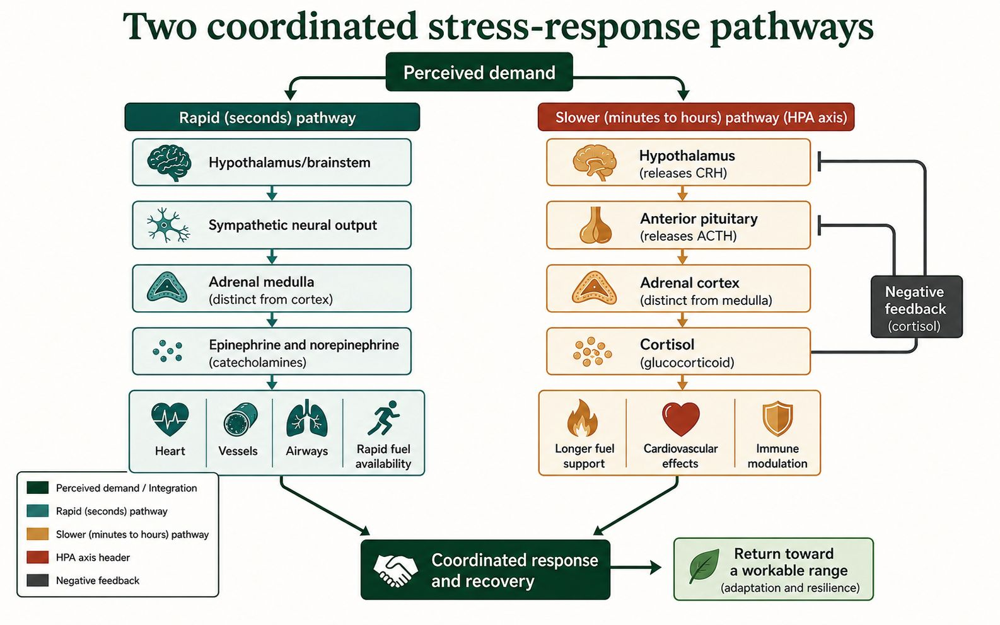
Hypothalamic signalling can lead the anterior pituitary to release ACTH. ACTH stimulates the adrenal cortex to release cortisol. Cortisol changes metabolism and helps sustain fuel availability. Rising cortisol normally reduces upstream stimulation. The cortex and medulla are different tissues, so ACTH and epinephrine should not be placed in one simple chain. Timing helps separate their roles.
Two coordinated stress routes
| Route | Source and signal | Timing |
|---|---|---|
| Sympathetic → adrenal medulla | Epinephrine / norepinephrine | Rapid |
| Hypothalamus → anterior pituitary → adrenal cortex | ACTH → cortisol | More sustained |
The adrenal cortex also releases aldosterone, which promotes sodium reabsorption by the kidneys and influences water balance. ADH chiefly changes water permeability; it is made in the hypothalamus. Aldosterone regulation mainly involves kidney-linked signals and blood potassium, not ACTH alone. Cortisol, ADH and aldosterone can contribute during a demanding situation, but their targets and immediate actions are not identical.
Three hormones, different immediate jobs
| Hormone | Main response in this comparison |
|---|---|
| ADH | Collecting ducts reabsorb more water |
| Aldosterone | Kidneys reabsorb more sodium and secrete more potassium |
| Cortisol | Metabolism changes to support fuel availability |
Question: A supplied case shows a rapid epinephrine rise followed by a later cortisol rise. Is one measurement enough to explain both?
Reasoning: No. Trace sympathetic input to the medulla separately from the hypothalamus–pituitary–cortex route. Compare sampling times and return feedback. These patterns do not diagnose chronic stress or predict a person's health.
Now use the checkpoint below. A choice made here is not a medical diagnosis or proof that you performed a hands-on experiment.
Sense-making checkpoint
Learn · Part 4
The outer adrenal cortex releases steroid hormones. ACTH from the anterior pituitary stimulates the cortex to release cortisol. Cortisol changes gene activity and helps maintain fuel availability during a longer challenge. Rising cortisol can reduce hypothalamic and pituitary stimulation through negative feedback.
The cortex also releases aldosterone. Aldosterone increases sodium reabsorption in kidney tubules. Water tends to follow sodium, so this response can support blood volume and pressure. Aldosterone is controlled mainly by kidney-linked pressure and ion signals, not by ACTH. ADH mainly changes water permeability, while aldosterone mainly changes sodium reabsorption.
A complete stress explanation separates the rapid medulla branch from the slower cortex branch. It also explains where pathways overlap. Epinephrine, cortisol, insulin, and glucagon can all influence fuel use during the same day. The final pattern depends on the disturbance, time, receptors, food intake, and activity.
To compare the two branches, begin with the control signal. Sympathetic neurons directly stimulate the medulla. ACTH stimulates cortisol release from the cortex, while kidney-linked signals are more important for aldosterone. This comparison is more accurate than calling every adrenal response part of one pathway.
| Feature | Adrenal medulla | Adrenal cortex |
|---|---|---|
| Main control | Sympathetic nerve input | ACTH for cortisol; kidney-linked signals for aldosterone |
| Hormones | Epinephrine and norepinephrine | Cortisol and aldosterone |
| Timing | Rapid | Slower and often longer-lasting |
| Examples | Cardiac output and rapid fuel availability | Fuel metabolism and sodium balance |
Build from the core idea: The core section separated rapid medulla responses from slower cortex hormones. This block combines water loss, sodium regulation, and sustained stress without treating the hormones as interchangeable.
Imagine a person completing a long, hot activity with limited water. Water loss raises the concentration of body fluids. Osmoreceptors in the hypothalamus support ADH release through the posterior pituitary. ADH acts on kidney collecting ducts and increases water reabsorption. This directly reduces water loss in urine. Thirst and behaviour also matter, because hormones cannot replace water that never enters the body.
Aldosterone mainly changes sodium handling in the distal nephron. It can support sodium reabsorption and influence water retention, but its control is not identical to the ADH pathway. Blood volume, kidney signals, and potassium concentration contribute. Cortisol supports longer-term stress metabolism and changes how tissues use fuel. It is not the main moment-to-moment controller of urine concentration and should not be used as a substitute explanation for ADH or aldosterone.
To integrate the case, order events by time and target. First identify the disturbance, then name each hormone's source, target, and direct effect. Finally, connect the effects to the measured evidence. A good explanation allows pathways to overlap while keeping their specific jobs distinct.
Each hormone has a different immediate target and evidence pattern.
| Signal | Main target in this case | Most direct evidence |
|---|---|---|
| ADH | Kidney collecting ducts | Lower urine volume and higher urine concentration |
| Aldosterone | Distal nephron sodium transport | Changed sodium reabsorption and excretion |
| Cortisol | Many receptor-bearing tissues | Longer-term changes in fuel use and stress support |
The case is synthetic. Fluid and hormone findings must not be used for personal diagnosis.
Worked example
Evidence: glucose rises after lunch, insulin rises, and glucose later moves toward its usual range. Cortisol remains elevated during the afternoon.
Limit: one set of values cannot diagnose diabetes or a stress disorder. It shows a pattern that can be explained with feedback.
Retrieve it
Choose insulin or cortisol. Name its source, one target, and one effect.
Autosaves as you type
Guided practice
Try both questions. Feedback explains the science and points you to the matching textbook page.
Question 1
Question 2
Evidence Slip
Practice & Review · Chapter 13
Use these twelve questions to check the chapter ideas that matter most. Each answer includes a short explanation and an exact textbook page.
Textbook chapter review
Read the summary on printed p. 463. Complete Q2, Q6, Q10, Q12–19, Q23–25, and one of Q26–30 on printed pp. 464–465.
This is optional extra review. Use it to strengthen the ideas you want to revisit before the course questions.
Course practice
These are the twelve questions you need to answer for this chapter practice.
Question 1
Question 2
Question 3
Question 4
Question 5
Question 6
Question 7
Question 8
Question 9
Question 10
Question 11
Question 12
Practice & Review
Work through three connected cases. Each session helps you explain a mechanism, use evidence, and state a limit before Final Practice.
Review method
· ·
Saved reasoning session
A myelinated sensory neuron reaches a chemical synapse, but transmitter release falls after calcium channels are blocked. Explain what still works, what changes, and why.
The action potential can still travel along the myelinated axon. At the terminal, reduced calcium entry causes fewer vesicles to fuse, so less neurotransmitter enters the cleft and the postsynaptic response becomes smaller.
Saved reasoning session
A learner detects two points more accurately on a fingertip than on a forearm, then reports that a steady touch becomes less noticeable. Explain both patterns without making a diagnosis.
Touch mechanoreceptors transduce pressure. Fingertips often have denser pathways and smaller receptive fields, supporting finer spatial detail. Adaptation reduces response to steady pressure. Results also depend on procedure and cannot diagnose sensory function.
Saved reasoning session
After dehydration and a stressful event, synthetic data show high ADH, concentrated urine, rapid epinephrine, and later cortisol. Build one explanation that separates each source, target, effect, and time scale.
ADH made in the hypothalamus and released from the posterior pituitary raises kidney water reabsorption. Sympathetic input rapidly stimulates adrenal-medulla epinephrine. A slower hypothalamus-pituitary pathway raises ACTH and adrenal-cortex cortisol. The pathways overlap but have different signals, targets, and timing.
Choose one seminar case. Add a second control system or a second evidence source. Explain how the new information strengthens, limits, or changes the original claim.
Use claim, evidence, reasoning, and limitation. This extension is not required for completion.
Practice & Review
Complete eighteen core questions across the nervous, sensory, and endocrine systems. Six Diploma Challenge questions are optional.
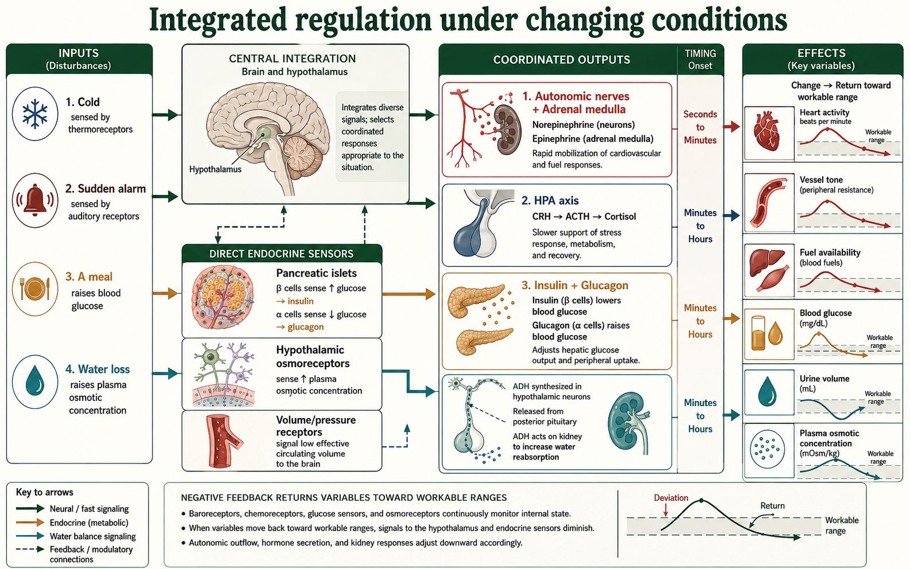
Textbook unit review
The textbook calls this material Unit 5; in this course it is Unit A.
Complete Q1–51 on printed pp. 468–471, then compare your reasoning with the answer guide.
This is optional extra review. Use it to strengthen the ideas you want to revisit before the course questions.
Course practice
All eighteen core questions count toward route completion. Feedback remains available after each attempt.
Question 1
Question 2
Question 3
Question 4
Question 5
Question 6
Question 7
Question 8
Question 9
Question 10
Question 11
Question 12
Question 13
Question 14
Question 15
Question 16
Question 17
Question 18
These items ask you to integrate evidence or locate a changed step. They do not affect completion.
Question 1
Question 2
Question 3
Question 4
Question 5
Question 6
Process Collection
See the work you have started across the course, then return to any exact question, prompt, concept, or investigation. This collection is optional and does not change course progress.
Saved and started records
Only work you have started or saved appears. Filters change this view only; Copy and Print always include the complete collection.
Your started work will appear here. Begin with a lesson response, practice question, or investigation.
Continue your work
Complete this investigation online with the supplied evidence. No partner, equipment, body testing or personal health information is needed. This is model observation and data analysis, not a claim that you performed a physical experiment. Your earlier writing is kept; add a revised conclusion when useful.
Question: Does a rapid response always mean a reflex? A reflex is an automatic response through a neural pathway. In this withdrawal model, a skin receptor activates a sensory neuron, spinal interneurons activate motor neurons, and a muscle contracts. Sensory information also travels toward the brain. The first spinal response need not wait for a conscious decision.
| Condition | Sensory signal reaches spinal cord | Motor output | Withdrawal |
|---|---|---|---|
| Pathway intact | Yes | Present | Present |
| Sensory path interrupted | No | Absent | Absent |
| Motor path interrupted | Yes | Absent downstream of interruption | Absent |
Trace each row using . Predict what evidence would distinguish a sensory interruption from a motor interruption. A missing movement alone cannot locate the disruption.
A ruler catch begins with seeing a release and making a voluntary catch. It is reaction-time evidence, not a direct test of the spinal reflex above. Use the supplied distances; do not carry out a body test.
| Trial | 1 | 2 | 3 | 4 | 5 |
|---|---|---|---|---|---|
| Distance | 18 | 21 | 19 | 24 | 20 |
Calculate the mean and range. State why five trials are better evidence than one, and name two factors that could change the distance. Compare distances directly; they are not milliseconds.
The total is 102 cm, so the mean is 102 ÷ 5 = 20.4 cm. The values span 18–24 cm: the range is 6 cm. Trial variation may involve attention, release timing or movement. These values cannot identify one neuron's conduction speed or diagnose a condition.
Two explanations predict different synaptic results. Claim A says arrival of an impulse is enough for transmitter release. Claim B says the terminal also needs calcium entry. In a supplied experiment, impulses reach the terminal in both conditions. Normal calcium produces strong transmitter release; reduced calcium produces much less release. Receptor conditions and stimulus settings are kept the same.
This comparison supports Claim B and challenges Claim A. It does not show that calcium is the only required step. Scientific explanations become stronger when they make testable predictions, face controlled evidence, and are revised when a prediction fails.
Your response: record the mean and range, distinguish the reflex from the ruler catch, and revise one claim using the calcium evidence. If a teacher or classmate comments online, identify their suggestion and your reason for accepting or rejecting it. Working alone? Compare with the worked explanation and label that comparison honestly.
Complete this investigation online with the supplied evidence. No partner, equipment, body testing or personal health information is needed. This is model observation and data analysis, not a claim that you performed a physical experiment. Your earlier writing is kept; add a revised conclusion when useful.
Question: Does the smallest detected two-point spacing differ between a fingertip and forearm? Predict which site has finer spatial resolution. The location is the manipulated variable; smallest reported two-point spacing is the responding variable. Keep tip shape, pressure, reporting instructions and number of trials consistent. Receptor density and receptive-field size help explain differences, but skin and attention can also affect results.
| Trial | Fingertip | Forearm |
|---|---|---|
| 1 | 3 mm | 28 mm |
| 2 | 4 mm | 31 mm |
| 3 | 3 mm | 30 mm |
Find each mean and compare them. Describe the result as evidence from this sample, not a rule about every person. This is not a medical sensory test.
In a simulated visual study, a symbol is shown ten times at each detail size. The observer identifies its direction. A planned threshold is at least eight correct responses out of ten. Compare the centre of vision with a position away from the centre, keeping brightness, contrast, viewing distance and exposure time fixed. The table supplies the observations; you are not testing your own vision.
| Detail size | Centre | Away from centre |
|---|---|---|
| Large | 10 | 10 |
| Medium | 10 | 8 |
| Small | 8 | 4 |
| Very small | 4 | 2 |
Apply the same threshold to both columns. Connect the result with the cone-rich fovea and retinal signal processing. Do not infer a disorder from this teaching dataset.
Design decision: a device intended to show fine labels should allow enlargement and high contrast. Enlargement improves access but shows less information at once. Recommend one design choice using the data and state that tradeoff. Screen size is a tool setting, not a measurement of someone's eyesight.
A supplied model presents tones at a constant safe setting and records neural responses across three cochlear regions. You will not play tones, raise volume, wear headphones or test hearing. The controlled variable is the presentation setting; the manipulated variable is frequency; the responding variable is the region with the strongest response.
| Tone | Near base | Middle | Near apex |
|---|---|---|---|
| Low frequency | 2 | 4 | 9 |
| Middle frequency | 3 | 9 | 4 |
| High frequency | 9 | 4 | 2 |
State the pattern, identify one limitation of relative model units, and explain why this table cannot establish an individual hearing threshold.
Mean tactile spacing is about 3.3 mm at the fingertip and 29.7 mm at the forearm. In the visual model, small detail meets the threshold centrally, but only medium detail meets it away from centre. High-frequency sound produces the strongest response near the cochlear base. These different results concern different receptors; a touch result does not measure visual or hearing ability.
Communicate and revise: write a short fair-test plan and a conclusion using at least two datasets. Compare it with the worked interpretation, or exchange it online with your teacher or classmate. State one change you made and why. A model comparison is not a claim that you collaborated with a person.
Draft autosaves; checkpoint not saved yetComplete this investigation online with the supplied evidence. No partner, equipment, body testing or personal health information is needed. This is model observation and data analysis, not a claim that you performed a physical experiment. Your earlier writing is kept; add a revised conclusion when useful.
Question: does increasing ADH increase kidney water reabsorption when the target responds normally? Predict that more effective ADH will reduce urine volume. ADH level is the manipulated variable; relative urine volume is the responding variable. In the model, keep fluid input, sodium intake, elapsed time and target sensitivity fixed.
Open , predict the dehydration response, select its test case, and note the displayed direction of water reabsorption and urine change. Compare that software observation with the supplied controlled results below. These are model observations, not measurements from people.
| Relative ADH | Trial 1 urine volume | Trial 2 urine volume | Trial 3 urine volume |
|---|---|---|---|
| Low | 10 units | 11 units | 9 units |
| High | 4 units | 5 units | 3 units |
Calculate the mean for each ADH condition and the change. Explain why changing fluid input at the same time would weaken the inference. Propose another test that changes target sensitivity while keeping ADH fixed.
The following two samples change several factors at once. They are useful for proposing explanations, but they cannot establish which factor caused the difference.
| Sample | Blood glucose | Urine glucose | ADH | Urine pattern |
|---|---|---|---|---|
| A | 5.4 mmol/L | Not detected | Higher | Low volume, concentrated |
| B | 12.8 mmol/L | Detected | Lower | High volume, dilute |
Sample A fits greater ADH-related water reabsorption. Sample B combines glucose and water-balance evidence, so do not attribute all its urine changes to ADH. Glucose in urine can affect water loss. Neither sample provides a diagnosis, treatment decision, or complete health history.
A glucose-monitoring tool can provide repeated readings that a single sample misses. An insulin-delivery device can provide controlled delivery, but its readings, settings and delivery system still have limits. People need professional guidance; a classroom model cannot select treatment. Access, cost and training affect who benefits. Disposable sensors, packaging and batteries also create waste, so safe disposal and resource use matter alongside the intended benefit.
Compare two claims: “One reading tells us everything” and “Repeated readings reveal a pattern, but we still need context.” Use the data to improve the first claim. Name one intended benefit, one limitation and one unintended consequence of a monitoring tool. If you receive feedback online, record the point that changed your conclusion. Otherwise use the course comparison and identify it as such.
Mean urine volume falls from 10 to 4 relative units as model ADH increases: a decrease of 6 units. Fixed inputs make the comparison clearer, but it remains a simplified model. The two original samples do not isolate ADH. Repeated monitoring can reveal a trend; it cannot replace context, careful interpretation or professional advice. My revised claim states the pattern and the limit rather than diagnosing a person.
Continue your work
Process Collection
Explore every word. Choose any eight words for empty saved Frayers and Process Collection. Copy and confirm before removing written work to free a slot.
0 of 8 added to Process Collection
Homeostasis
The active maintenance of internal conditions within ranges that allow cells and organs to function, even while conditions inside or outside the body change.
Use with care: The word suggests steadiness, but living systems remain dynamic and variable.
A regulated variable is detected, information is integrated, and effectors adjust the variable. The value may fluctuate; it is not held perfectly still.
dynamic stability · workable range
Homeostasis does not mean that every internal value is constant or that a response always restores one exact number.
Explain why sweating during a hot afternoon is evidence of change and stability at the same time.
Homeostasis
A condition maintained within limits through ongoing change and adjustment.
Dynamic means changing; stability describes persistence of workable conditions, not immobility.
Regulatory responses offset disturbances while values fluctuate.
Homeostasis · workable range
A perfectly unchanging value is not required.
Why can a changing heart rate support stability?
Homeostasis · Regulated variable and set point
An interval of values compatible with the relevant physiological function.
Workable qualifies range by function; it does not mean every value is equally optimal.
Keeping variables within tolerable limits supports cellular processes.
Homeostasis · dynamic stability · Regulated variable and set point · regulated variable
A range is not a single set point.
Why describe body temperature with a range rather than one exact value?
Regulated variable and set point
A regulated variable is a measurable internal condition that a control system influences. A set point or range is the reference used to judge change.
Use with care: A set point is not always one unchanging number.
Receptors provide information about the variable. A control centre compares that information with a reference and coordinates an appropriate response.
regulated variable · set point · workable range
The regulated variable is the condition being controlled, not the effector action used to change it.
In blood-glucose regulation, identify the regulated variable and one response that changes it.
Regulated variable and set point
A physiological quantity monitored and adjusted by a control system.
Regulated modifies variable, the quantity that can change.
Its deviation supplies information that initiates corrective responses.
Regulated variable and set point · set point · workable range
An effector is not the variable it changes.
In temperature regulation, which is the variable and which is an effector?
Regulated variable and set point
A reference value or operating target used in a regulatory comparison.
Set modifies point; the phrase is a control-system term, not a permanently fixed anatomical location.
Comparing a variable with a reference helps determine an adjustment.
Regulated variable and set point · regulated variable · workable range
A set point can change with physiological conditions.
How does a fever-related set-point change differ from ordinary warming?
Control-system roles
A control pathway names what changes, what detects it, where information is integrated, what acts, and what response follows.
Use with care: These are functional roles. A structure may serve different roles in different pathways.
A stimulus changes a condition. A receptor detects relevant evidence, a control centre integrates it, and an effector produces a response.
stimulus · receptor · control centre · effector
The receptor detects information; it is not automatically the structure that corrects the disturbance.
For a cold-environment response, name one plausible receptor, control centre, and effector.
Control-system roles
A detectable change or condition capable of initiating a response.
One stimulus, several stimuli; stimulate is the verb.
It changes receptor activity and begins a signalling sequence.
Control-system roles · receptor · control centre · effector
A stimulus is not the resulting response.
What is the stimulus when bright light causes pupil constriction?
Control-system roles · Reflex arc · Endocrine signalling
A structure or molecule that detects a particular signal or change.
Receptor is a detection-related noun; distinguish sensory receptors from hormone receptor proteins.
Detection converts a relevant change into altered cellular activity.
Control-system roles · stimulus · control centre · effector
Not all receptors are whole sense organs.
How does a hormone receptor differ from a sensory receptor cell?
Control-system roles
The part of a regulatory system that integrates information and coordinates responses.
Centre names an integrating role; control identifies its regulatory function.
It relates incoming information to appropriate effector activity.
Control-system roles · stimulus · receptor · effector
It need not be a single conscious brain area.
Why can regulation occur without conscious awareness?
Control-system roles · Reflex arc
A cell, tissue or organ that carries out a response to a signal.
Effector names what brings about an effect, rather than the detector.
Its activity changes a condition, such as muscle contraction or gland secretion.
Control-system roles · stimulus · receptor · control centre
A receptor detects; an effector acts.
Which tissues act as effectors in shivering and sweating?
Control-system roles
A biological change produced following a stimulus or signal.
Response is the noun; respond is the verb.
It alters cell or organ activity and may change the original stimulus.
Control-system roles · stimulus · receptor · control centre
A response is not necessarily corrective negative feedback.
When would a response amplify rather than oppose an initial change?
Negative feedback
A control pattern in which the response reduces the initiating departure of a regulated variable from its reference range.
Use with care: Negative means opposing, not harmful.
The response feeds information or effects back into the system in a direction that opposes the original change.
feedback loop · return effect
A pathway is not negative feedback merely because it has arrows or because the response is beneficial.
What return effect would prove that an insulin response forms a negative-feedback loop?
Negative feedback
A causal pathway in which a system's output affects subsequent input or activity.
Feedback describes returned influence; loop describes the causal connection.
It changes further system activity based on the result already produced.
Negative feedback · return effect
A sequence without a return influence is not a feedback loop.
Which arrow closes a hormone feedback loop?
Negative feedback
The influence of a response back on the variable or process that initiated it.
Return identifies the direction of causal influence; effect is the resulting change.
Its direction distinguishes opposing from amplifying feedback.
Negative feedback · feedback loop
A return effect is not simply a hormone travelling back physically.
How would you identify the sign of feedback from the response's effect?
Scientific explanation
A defensible account that answers a question with a claim, selects relevant evidence, and uses biological reasoning to connect the evidence to a mechanism.
Use with care: A claim repeated in different words is not reasoning.
The explanation distinguishes what was observed from why it likely occurred and states limits on what the evidence can establish.
claim · evidence · reasoning · mechanism
Evidence describes the pattern; reasoning uses science to explain why that pattern supports the claim.
Turn one observation from a Unit A model into a claim-evidence-reasoning chain.
Scientific explanation
A statement offered as an answer or explanation that can be supported or challenged.
Claim is both noun and verb; a claimed result still needs evidence.
It states the conclusion that evidence and reasoning must address.
Scientific explanation · evidence · reasoning · mechanism
A confident statement is not automatically established fact.
What claim could a measured reflex delay support?
Scientific explanation
Observations or results relevant to evaluating a claim.
Evidence is a collective noun; it is distinct from the interpretation drawn from it.
It constrains which explanations fit the observations.
Scientific explanation · claim · reasoning · mechanism
A diagram generated to explain a model is not measured evidence.
Which part of a hormone graph is observation and which part is inference?
Scientific explanation
The logical connection between evidence and a conclusion.
The -ing form of reason names the explanatory process.
It uses biological principles to explain why observations support a claim.
Scientific explanation · claim · evidence · mechanism
Repeating a number does not supply the causal connection.
How would you connect receptor loss to reduced hormone response?
Scientific explanation
The causal steps by which a biological process produces an outcome.
Mechanism is the process-explanation noun; mechanistic is the adjective.
It links molecular or cellular events to observed function.
Scientific explanation · claim · evidence · reasoning
Naming the organ alone does not explain how it works.
Which steps connect neurotransmitter release to a postsynaptic change?
Scientific explanation
A boundary on what a method, model or evidence can establish.
Limitation derives from limit; it specifies a constraint rather than dismissing all usefulness.
It prevents conclusions that go beyond the conditions tested.
Scientific explanation · claim · evidence · reasoning
A limitation is not automatically a fatal flaw.
What can an isolated-neuron model not establish about a whole person's response?
Neuron structure
A neuron is a specialized cell whose structures receive, integrate, conduct, and transmit information.
Use with care: The word roots help identify form or topic but do not describe every neuron's exact shape.
Dendrites and the cell body receive and integrate input; an axon carries electrical change toward terminals that communicate with another cell.
neuron · dendrite · cell body · axon
Information flow is not simply every signal entering dendrites and leaving one identical terminal; neurons vary and integrate many inputs.
Trace information through a typical neuron from receiving region to transmitting region.
Neuron structure
An excitable cell specialized for receiving, integrating and transmitting information.
Neur-/neuro- relates to nerve; neuronal is the adjective.
Its membrane and processes support signalling to other cells.
Neuron structure · dendrite · cell body · axon
A nerve is a bundle of axons, not one neuron.
How does neuron structure support directional information flow?
Neuron structure
A usually branching neuron process that commonly receives input.
Dendr- relates to tree-like branching; dendritic is the adjective.
Its membrane receives synaptic input that can influence integration.
Neuron structure · neuron · cell body · axon
Neurons vary; not every dendrite has an identical shape or role.
Why can extensive dendritic branching increase possible inputs?
Neuron structure
The neuron region containing its nucleus and much of its biosynthetic machinery.
Body is the main-region metaphor; cell specifies the individual unit.
It supports metabolism and contributes to integration of inputs.
Neuron structure · neuron · dendrite · axon
The cell body is not the whole neuron.
Why does an axon depend on its cell body's synthesis machinery?
Neuron structure
A neuron process specialized for conducting signals toward target cells.
Axon is the noun; axonal is the adjective.
Regenerative membrane changes can transmit information along its length.
Neuron structure · neuron · dendrite · cell body
An axon does not normally carry a progressively fading action potential.
How is long-distance signalling maintained along an axon?
Neuron structure
A specialized end region of an axon that communicates with a target.
Terminal means an end region; axon identifies the neuronal process.
Arrival of an action potential can trigger transmitter release at a chemical synapse.
Neuron structure · neuron · dendrite · cell body
A terminal is not the same structure as the postsynaptic receptor.
What links terminal depolarization to vesicle release?
Myelin and saltatory conduction
Myelin is a glial-cell membrane wrapping that insulates sections of an axon and supports rapid regeneration of the action potential at exposed nodes.
Use with care: Schwann and Ranvier are names, not functional word parts.
Current spreads quickly under myelin, while voltage-gated channels concentrated near nodes regenerate the signal. Schwann cells myelinate PNS axons; oligodendrocytes myelinate CNS axons.
myelin · node of Ranvier · saltatory conduction · Schwann cell
The impulse does not literally disappear and jump through empty space, and CNS and PNS repair capacity are not identical.
Why can losing myelin slow signalling even when the axon has not been cut?
Myelin and saltatory conduction
A lipid-rich insulating sheath formed around some axons by glial cells.
Myelin is the noun; myelinated describes an ensheathed axon.
It reduces current loss and changes how depolarization spreads between nodes.
Myelin and saltatory conduction · node of Ranvier · saltatory conduction · Schwann cell
Myelin does not produce the action potential itself.
Why can losing myelin slow or block conduction?
Myelin and saltatory conduction
A gap between myelin segments where axonal membrane is exposed.
Ranvier is a personal name; node names the exposed interval.
Concentrated channels support action-potential regeneration at nodes.
Myelin and saltatory conduction · myelin · saltatory conduction · Schwann cell
The gap is in the sheath, not a break in the axon.
Why are nodes needed in a myelinated axon?
Myelin and saltatory conduction
Action-potential conduction with regeneration at separated nodes along a myelinated axon.
Saltatory describes a jumping appearance; conduction is signal propagation.
Local current spreads under myelin and depolarizes the next node.
Myelin and saltatory conduction · myelin · node of Ranvier · Schwann cell
The signal does not literally leave the axon and jump through space.
What travels between nodes and what is regenerated at each node?
Myelin and saltatory conduction
A peripheral glial cell that supports axons and may form a myelin segment.
Schwann is a personal name; cell names the biological unit.
A myelinating Schwann cell wraps a segment of a peripheral axon.
Myelin and saltatory conduction · myelin · node of Ranvier · saltatory conduction
It is not the myelin-producing cell of the CNS.
How does a Schwann cell's location distinguish it from an oligodendrocyte?
Myelin and saltatory conduction
A central nervous system glial cell that can myelinate segments of multiple axons.
Oligo- means few, dendro- relates to branching and -cyte means cell; the historical name does not specify its full function.
Its processes form insulating segments in CNS pathways.
Myelin and saltatory conduction · myelin · node of Ranvier · saltatory conduction
One oligodendrocyte is not limited to one axon segment.
Why can damage to one oligodendrocyte affect several axon segments?
Resting membrane potential
The voltage difference across a neuron's membrane when it is not producing an action potential, usually negative inside relative to outside.
Use with care: Resting does not mean inactive; channels and pumps continue to operate.
Unequal ion distributions and selective membrane permeability, especially potassium leak, create the voltage; pumps maintain gradients over time.
ion gradient · selective permeability
The sodium-potassium pump maintains ion gradients but does not by itself create each rapid phase of an action potential.
Use ion distribution and permeability to explain why the resting axon interior is negative.
Resting membrane potential
A difference in an ion's concentration across a membrane.
Ion identifies the charged particle; gradient describes a spatial difference.
Together with electrical forces it influences ion movement through channels.
Resting membrane potential · selective permeability
A concentration gradient alone is not the entire electrochemical force.
Why must voltage also be considered when predicting ion movement?
Resting membrane potential
The property of allowing some substances to cross more readily than others.
Selective qualifies permeability, the capacity to pass through a barrier.
Channel types and states determine which ions can move at a given time.
Resting membrane potential · ion gradient
Permeable does not mean equally open to all ions.
How can opening potassium channels change membrane voltage?
Action potential
A brief, regenerated reversal and restoration of membrane voltage that begins after threshold and carries information along an axon.
Use with care: Potential means voltage here, not a possibility.
Threshold opens voltage-gated sodium channels, sodium entry drives the rising phase, and delayed potassium-channel opening supports the falling phase and recovery.
threshold · all-or-none response · propagation
A stronger stimulus does not create a taller action potential; it can increase firing frequency or recruit more neurons.
Explain why crossing threshold produces a full event while a slightly weaker stimulus fades.
Action potential
The membrane or stimulus condition at which an action potential is initiated.
A threshold is a boundary metaphor, not a separate anatomical structure.
Enough depolarization recruits regenerative voltage-gated channel activity.
Action potential · all-or-none response · propagation
Threshold is not the maximum action-potential voltage.
Why can a small additional input trigger a large response near threshold?
Action potential
A response in which an individual action potential is initiated once threshold conditions are met, rather than scaling its amplitude with stimulus strength.
All-or-none joins the two alternatives; response here refers to one action potential.
Regenerative channel activation produces a stereotyped event under stated conditions.
Action potential · threshold · propagation
Stronger stimuli can alter frequency or recruitment rather than enlarge each event indefinitely.
How is stimulus strength encoded if individual action potentials are all-or-none?
Action potential
The spread of a signal through successive regions of excitable membrane.
Propagation is the process noun; propagate is the verb.
Local current brings adjacent membrane toward threshold and regenerates the event.
Action potential · threshold · all-or-none response
It is not one packet of sodium ions travelling the whole axon length.
How does local current support a nondecrementing signal?
Membrane-potential phases
The named voltage changes of an action potential: becoming less negative, returning toward resting voltage, and briefly becoming more negative than rest.
Use with care: The prefixes help track voltage direction, but ion-channel evidence explains the mechanism.
Sodium entry drives depolarization; sodium-channel inactivation and potassium exit drive repolarization; delayed potassium-channel closing contributes to hyperpolarization.
depolarization · repolarization · hyperpolarization
Repolarization is not the sodium-potassium pump instantly moving every ion back to its starting side.
Match each voltage phase with the dominant voltage-gated channel state and net ion movement.
Membrane-potential phases
A reduction in the usual voltage difference across the membrane, often making the inside less negative.
De- indicates a reduction of polarization in this usage.
Ion-channel activity can move membrane voltage toward threshold or through an action-potential upstroke.
Membrane-potential phases · repolarization · hyperpolarization
Depolarization need not make the inside positive.
Can a change from −70 to −60 mV be depolarization?
Membrane-potential phases
Movement of membrane voltage back toward its polarized resting condition after depolarization.
Re- means again; polarization concerns charge separation.
Changes in channel activity, especially potassium conductance in the basic model, restore negative voltage.
Membrane-potential phases · depolarization · hyperpolarization
It is not identical to instantly restoring all ion concentrations.
Why distinguish voltage recovery from restoration of ion gradients?
Membrane-potential phases
A membrane voltage more negative than the relevant resting or reference level.
Hyper- means beyond or greater; polarization identifies the voltage separation.
Continued outward potassium current can take voltage below the resting level.
Membrane-potential phases · depolarization · repolarization
It is not merely the absence of an action potential.
Why can hyperpolarization make another action potential harder to trigger?
Refractory period
A recovery interval after an action potential during which another event is impossible or requires a stronger-than-usual stimulus.
Use with care: Treat the word as a named recovery state rather than trying to decode it into a channel mechanism.
Inactivated sodium channels prevent immediate refiring; during later recovery, some channels reset while the membrane may remain hyperpolarized.
absolute refractory period · relative refractory period · channel inactivation
Absolute and relative refractory periods are not identical: one prevents another event, while the other raises the stimulus requirement.
How does sodium-channel inactivation limit firing rate and support forward propagation?
Refractory period
An interval during which a second action potential cannot be initiated in the affected membrane.
Absolute qualifies refractory period: stimulus strength cannot overcome this interval's channel state.
Inactivated sodium channels prevent immediate re-excitation.
Refractory period · relative refractory period · channel inactivation
A stronger stimulus does not override sodium-channel inactivation.
Why does channel state limit firing frequency?
Refractory period
An interval when another action potential is possible but requires a stronger stimulus than usual.
Relative qualifies refractory: excitability is reduced rather than entirely absent.
Incomplete recovery and elevated potassium conductance can raise the stimulus requirement.
Refractory period · absolute refractory period · channel inactivation
It is not the same as the absolute interval.
Why can a larger input sometimes trigger firing during this period?
Refractory period
A temporary nonconducting channel state distinct from a closed state ready to activate.
Inactivation is a state-change noun; channel identifies the gated membrane protein.
An inactivated sodium channel must recover before it can reopen normally.
Refractory period · absolute refractory period · relative refractory period
Closed and inactivated are not interchangeable states.
Why does repolarization help restore sodium-channel availability?
Synaptic transmission
Communication across a synapse in which an arriving electrical signal changes chemical release and the chemical signal changes the receiving cell.
Use with care: The word parts identify communication, but they do not predict whether a neurotransmitter excites or inhibits a particular target.
An action potential opens presynaptic calcium channels, vesicles release neurotransmitter, receptors bind it, and removal by breakdown, diffusion, or reuptake limits the signal.
synapse · neurotransmitter · acetylcholine · cholinesterase
A neurotransmitter is not automatically excitatory; its effect depends on receptor and target-cell mechanisms.
Predict what changes if acetylcholinesterase is inhibited while release remains normal.
Synaptic transmission
A junction through which a neuron communicates with another cell.
Synapse is the noun; synaptic is the adjective.
Chemical synapses transmit through released molecules and receptors; electrical synapses use direct coupling.
Synaptic transmission · neurotransmitter · acetylcholine · cholinesterase
A synapse is not always a chemical cleft alone.
Which structures belong to a chemical synapse beyond its cleft?
Synaptic transmission
A chemical released by a neuron that acts on target-cell receptors at a synapse.
Neuro- relates to nerve; transmitter describes signalling function.
Its receptor interactions change target-cell activity.
Synaptic transmission · synapse · acetylcholine · cholinesterase
The same transmitter can have different effects at different receptor types.
Why does transmitter identity alone not determine excitation or inhibition?
Synaptic transmission
A neurotransmitter used at neuromuscular junctions and many autonomic and CNS synapses.
A whole chemical name combining acetyl and choline; ACh is its common abbreviation.
Binding to appropriate receptors can alter ion flow or intracellular signalling.
Synaptic transmission · synapse · neurotransmitter · cholinesterase
Its effect depends on receptor type rather than being always excitatory.
Why can acetylcholine have different effects on skeletal muscle and heart rate?
Synaptic transmission
An enzyme class that hydrolyses choline esters; acetylcholinesterase breaks down acetylcholine at relevant synapses.
Choline-ester-ase identifies substrate chemistry and an enzyme ending.
Breakdown helps terminate acetylcholine signalling.
Synaptic transmission · synapse · neurotransmitter · acetylcholine
Breaking down transmitter is not the same as blocking its receptor.
How would inhibited acetylcholinesterase affect signal duration?
Synaptic transmission
A catecholamine used as a neurotransmitter and hormone, also called noradrenaline.
Norepinephrine and noradrenaline are alternate names, not different transmitter classes.
Adrenergic receptor interactions contribute to autonomic responses.
Synaptic transmission · synapse · neurotransmitter · acetylcholine
It does not cause the same response in all target tissues.
Why can sympathetic signalling produce different responses in different organs?
Synaptic transmission
A substance that activates a receptor to produce a response.
Agonist is the noun; agonistic describes its receptor action.
It mimics or stimulates the receptor's signalling action.
Synaptic transmission · synapse · neurotransmitter · acetylcholine
Binding alone does not establish agonism.
What observation would distinguish an agonist from a binding blocker?
Synaptic transmission
A substance that reduces or blocks receptor activation by an agonist.
Antagonist names opposition in this receptor context; it need not be an opposing hormone.
Blocking receptor action reduces the signal's effect.
Synaptic transmission · synapse · neurotransmitter · acetylcholine
An antagonist need not destroy the transmitter.
How can receptor blockade reduce a response while transmitter remains present?
Synaptic transmission
Transport of released neurotransmitter back into cells from the extracellular synaptic region.
Re- means again; uptake describes cellular transport.
Transporters reduce transmitter availability and permit recycling or metabolism.
Synaptic transmission · synapse · neurotransmitter · acetylcholine
It is not the same as enzymatic breakdown in the cleft.
How can reuptake inhibition prolong signalling?
Central and peripheral nervous systems
The CNS consists of the brain and spinal cord; the PNS consists of neural structures outside them that carry information to and from the CNS.
Use with care: Peripheral does not mean unimportant; it describes location relative to the CNS.
Peripheral sensory pathways bring evidence toward central integration, while peripheral motor pathways carry output toward effectors.
central nervous system · peripheral nervous system · CNS · PNS
Cranial and spinal nerves are part of the PNS even though they connect directly to central structures.
Trace one sensory message from a fingertip into the CNS and one motor command back out.
Central and peripheral nervous systems
The brain and spinal cord.
Central specifies this anatomical division; nervous system names the signalling network.
It integrates information and coordinates many responses.
Central and peripheral nervous systems · peripheral nervous system · CNS · PNS
Central does not mean all processing is conscious.
Why can a spinal reflex be integrated without a conscious decision?
Central and peripheral nervous systems
Nervous tissue outside the brain and spinal cord, including nerves and ganglia.
Peripheral specifies location outside the CNS.
It carries sensory information toward and motor signals away from central structures.
Central and peripheral nervous systems · central nervous system · CNS · PNS
Peripheral nerves can contain both sensory and motor fibres.
Why is a mixed nerve not purely an input or output pathway?
Central and peripheral nervous systems
The central nervous system: brain and spinal cord.
Initialism for central nervous system; letters identify the anatomical division.
It provides major sites of integration and coordination.
Central and peripheral nervous systems · central nervous system · peripheral nervous system · PNS
CNS is not a synonym for brain alone.
Which CNS structure can integrate a withdrawal reflex?
Central and peripheral nervous systems
The peripheral nervous system outside the brain and spinal cord.
Initialism for peripheral nervous system.
It links receptors and effectors with central pathways.
Central and peripheral nervous systems · central nervous system · peripheral nervous system · CNS
PNS does not mean only autonomic nerves.
How do somatic and autonomic pathways relate to the PNS?
Somatic and autonomic systems
Somatic motor pathways primarily control skeletal muscle; autonomic pathways regulate smooth muscle, cardiac muscle, and glands.
Use with care: Autonomic activity is regulated, not independent of the brain and spinal cord.
The divisions differ by targets and pathway organization, while both are coordinated by the nervous system and can interact during a response.
somatic nervous system · autonomic nervous system · voluntary control · visceral control
Somatic is not simply conscious and autonomic is not simply unconscious; reflexes and coordinated control complicate that shortcut.
Classify pupil diameter and a deliberate hand movement by motor division and target tissue.
Somatic and autonomic systems
The division associated with somatic sensory information and skeletal-muscle motor control.
Somatic refers to the body; nervous system specifies the signalling division.
Motor pathways activate skeletal muscle for voluntary actions and reflexes.
Somatic and autonomic systems · autonomic nervous system · voluntary control · visceral control
Somatic does not mean every response is consciously chosen.
Why is a knee-jerk reflex somatic despite being involuntary?
Somatic and autonomic systems
The motor system regulating visceral effectors such as smooth muscle, cardiac muscle and glands.
Autonomic is the system's conventional adjective; it does not mean disconnected from CNS control.
It adjusts organ activity through sympathetic, parasympathetic and related pathways.
Somatic and autonomic systems · somatic nervous system · voluntary control · visceral control
Autonomic is not equivalent to all involuntary sensory activity.
Which effectors distinguish autonomic from somatic motor output?
Somatic and autonomic systems
Control of actions that can be initiated or modified consciously.
Voluntary describes the degree of conscious direction, not a separate tissue.
Conscious motor planning can recruit skeletal-muscle pathways.
Somatic and autonomic systems · somatic nervous system · autonomic nervous system · visceral control
A voluntarily controlled muscle can also participate in reflexes.
How can the same muscle serve voluntary movement and a reflex?
Somatic and autonomic systems
Regulation of internal-organ activity.
Visceral relates to internal organs; control identifies regulation.
Autonomic output changes glandular, smooth-muscle and cardiac activity.
Somatic and autonomic systems · somatic nervous system · autonomic nervous system · voluntary control
Visceral regulation is not necessarily conscious sensation.
How can heart rate change without a deliberate command?
Sympathetic and parasympathetic divisions
Two coordinated autonomic divisions that adjust organ activity in context; they often have opposing effects but do not function as simple universal on/off switches.
Use with care: The everyday meanings of sympathy and calm do not predict each division's complete physiology.
Different central pathways, peripheral neurons, neurotransmitters, and receptors produce organ-specific patterns suited to challenge, activity, recovery, and maintenance.
sympathetic division · parasympathetic division · autonomic balance
Sympathetic does not activate every organ, and parasympathetic does not simply turn every sympathetic effect backward.
Explain why one organ-specific prediction is stronger than saying sympathetic activity turns the whole body on.
Sympathetic and parasympathetic divisions
An autonomic division that coordinates context-dependent adjustments often associated with activity and challenge.
Sympathetic is an anatomical label, not an emotional description.
Its pathways can redistribute activity among organs during changing demands.
Sympathetic and parasympathetic divisions · parasympathetic division · autonomic balance
It does not simply stimulate every organ.
Why might heart activity rise while digestive activity falls?
Sympathetic and parasympathetic divisions
An autonomic division supporting context-dependent maintenance, conservation and digestive functions.
Parasympathetic is the division's compound anatomical name.
Its output adjusts target organs through specific receptors and circuits.
Sympathetic and parasympathetic divisions · sympathetic division · autonomic balance
It is not always a global off switch opposing every sympathetic action.
Why should organ-specific effects be considered?
Sympathetic and parasympathetic divisions
The net organ-specific outcome of changing autonomic influences.
Balance is a functional metaphor, not necessarily equal activity in two divisions.
Changing relative inputs helps adapt organ function to conditions.
Sympathetic and parasympathetic divisions · sympathetic division · parasympathetic division
Equal sympathetic and parasympathetic firing is not required.
How can a resting heart rate reflect active regulation?
Reflex arc
A neural pathway that produces a rapid, predictable response to a stimulus through receptor, sensory, integrating, motor, and effector components.
Use with care: The pathway is not necessarily a literal curved arc, and reaction-time tasks include more than a simple spinal reflex.
Sensory input reaches central integration, often in the spinal cord, and motor output reaches an effector while information can also travel to the brain.
reflex · receptor · sensory neuron · interneuron
A ruler-drop reaction-time task includes perception and decision and does not directly measure the speed of a spinal reflex.
Put the five functional parts of a withdrawal reflex in order and explain where integration occurs.
Reflex arc
A relatively rapid, stereotyped response mediated by a defined neural pathway.
Reflex is the noun; reflexive is the adjective.
A receptor-to-effector circuit produces a response without requiring a prior conscious decision.
Reflex arc · receptor · sensory neuron · interneuron
Reflexes may still be modified by higher centres.
Why can withdrawal occur before conscious awareness of pain?
Reflex arc
A neuron carrying information from a receptor toward an integrating pathway.
Sensory specifies information input; neuron identifies the cell.
It transmits receptor-related signals to CNS or other integrative circuits.
Reflex arc · reflex · receptor · interneuron
Sensory does not mean the signal has already become a conscious perception.
What information enters a reflex arc through this neuron?
Reflex arc
A neuron that connects and processes information within neural circuits.
Inter- means between; neuron names the cell.
It can integrate inputs and modify output to other neurons.
Reflex arc · reflex · receptor · sensory neuron
Not every reflex requires the same number of interneurons.
How can an interneuron coordinate opposing muscles?
Reflex arc
A neuron whose output influences an effector, especially muscle in the somatic system.
Motor identifies an output role; neuron is the signalling cell.
Its activity can cause muscle contraction through a neuromuscular junction.
Reflex arc · reflex · receptor · sensory neuron
Motor output is not always voluntarily initiated.
Where does a motor neuron sit in a withdrawal pathway?
Sensory transduction
The conversion of a physical or chemical stimulus into a change in a receptor cell that can influence neural signalling.
Use with care: Transduction is conversion of stimulus information, not merely movement of a signal along an axon.
A stimulus affects specialized receptor proteins or structures, changes membrane behaviour, and alters communication with sensory neurons.
receptor potential · stimulus energy
The lens focusing light and the ossicles transmitting vibration support sensing, but receptor cells perform the transduction step.
Compare what is converted by a retinal photoreceptor and a cochlear hair cell.
Sensory transduction
A graded membrane-potential change produced by sensory stimulation.
Receptor identifies the detecting structure; potential is voltage, not a probability.
Its magnitude can influence transmitter release or action-potential frequency.
Sensory transduction · stimulus energy
It is not necessarily an all-or-none action potential.
How can a stronger stimulus change the receptor potential?
Sensory transduction
The physical or chemical input available for sensory detection.
Stimulus specifies the initiating input; energy identifies its physical basis.
Receptor mechanisms convert the relevant input into cellular signalling.
Sensory transduction · receptor potential
The nervous system does not directly transmit the original light or sound energy along the nerve.
What transformation connects sound vibration with nerve impulses?
Sensory receptor classes
Groups of sensory receptors classified by the kind of stimulus they detect and convert into biological signals.
Use with care: A receptor class identifies the preferred stimulus, not a single body location.
Each receptor class has structures and proteins suited to light, mechanical force, chemicals, temperature, tissue-damaging stimuli, or body position.
photoreceptor · mechanoreceptor · chemoreceptor · thermoreceptor
Nociceptors detect potentially damaging conditions; they are not identical to the conscious experience of pain.
Classify the receptor most directly involved in light detection, head rotation, blood chemistry, and joint position.
Sensory receptor classes
A receptor specialized for detecting light.
Photo- means light; receptor names detection.
Light-sensitive molecular changes alter signalling in rods and cones.
Sensory receptor classes · mechanoreceptor · chemoreceptor · thermoreceptor
A photoreceptor does not form a conscious image by itself.
How do rods and cones contribute differently under dim and bright conditions?
Sensory receptor classes
A receptor that responds to mechanical deformation.
Mechano- identifies mechanical input; receptor names detection.
Stretch or movement changes channel activity and membrane voltage.
Sensory receptor classes · photoreceptor · chemoreceptor · thermoreceptor
It does not respond only to conscious touch.
Why are inner-ear hair cells mechanoreceptors?
Sensory receptor classes
A receptor responsive to particular chemical conditions or molecules.
Chemo- refers to chemical input; receptor identifies detection.
Chemical binding or concentration changes alter receptor activity.
Sensory receptor classes · photoreceptor · mechanoreceptor · thermoreceptor
Chemoreception is not restricted to smell and taste.
How can blood-chemistry monitoring be chemoreception?
Sensory receptor classes
A receptor responsive to temperature changes within its operating range.
Thermo- means heat; receptor names detection.
Temperature-dependent cellular responses provide information about warming or cooling.
Sensory receptor classes · photoreceptor · mechanoreceptor · chemoreceptor
It is not a precise thermometer reading available directly to consciousness.
Why do receptor operating ranges matter?
Sensory receptor classes
A sensory receptor responsive to potentially tissue-damaging stimuli.
Nociceptor is a specialized whole receptor name; nociception is detection of noxious input.
Its activity initiates protective signalling that can contribute to pain perception.
Sensory receptor classes · photoreceptor · mechanoreceptor · chemoreceptor
Nociception and the subjective experience of pain are not identical.
Why can detection and perception be distinguished?
Sensory receptor classes
A receptor providing information about body position, movement or force.
Proprio- relates to one's own; receptor identifies detection.
Signals from muscles, tendons and joints support posture and movement control.
Sensory receptor classes · photoreceptor · mechanoreceptor · chemoreceptor
It does not require seeing the body part.
How can you sense arm position with your eyes closed?
Sensory adaptation
A decrease or change in sensory-system response during a sustained, unchanging stimulus.
Use with care: Adaptation here describes response change over time, not evolutionary adaptation across generations.
Receptor and neural pathway properties can reduce signalling or awareness over time while the stimulus may still be present.
sustained stimulus · response change
Reduced awareness does not prove that the stimulus disappeared or that receptors were damaged.
Explain why you may stop noticing steady clothing pressure while the pressure remains.
Sensory adaptation
A stimulus that persists over an interval rather than occurring only briefly.
Sustained qualifies duration, not necessarily intensity.
Continued stimulation can reveal adaptation in receptor or circuit responses.
Sensory adaptation · response change
A constant stimulus does not guarantee a constant neural response.
What would you compare to demonstrate adaptation?
Sensory adaptation
A difference in biological activity over time or between conditions.
Change is the difference; response identifies the measured output.
Measuring it against a stimulus helps characterize sensitivity or adaptation.
Sensory adaptation · sustained stimulus
A declining response can have several mechanisms, not only receptor fatigue.
What control would distinguish adaptation from a weakening stimulus?
Vision pathway
The optical and neural sequence by which light is refracted, focused on the retina, transduced by photoreceptors, and conveyed toward the brain.
Use with care: Anatomical word origins do not replace tracing the actual direction of light and neural information.
Cornea and lens refract light; rods and cones alter signalling; retinal circuits process that information before ganglion-cell axons form the optic nerve.
cornea · lens · retina · rod
The brain does not simply flip a finished retinal picture; perception emerges from distributed neural processing.
Trace light and then neural information from the cornea to the optic nerve without reversing the directions.
Vision pathway
The transparent anterior surface of the eye that provides substantial refraction.
Cornea is the anatomical noun; corneal is the adjective.
Its curved boundary bends incoming light toward the optical pathway.
Vision pathway · lens · retina · rod
The lens is not the eye's only refracting structure.
Why can corneal curvature affect focus?
Vision pathway
The transparent eye structure whose shape can change to adjust focusing.
Lens is a whole optical name; lenticular is a related adjective.
Accommodation changes refractive power for viewing different distances.
Vision pathway · cornea · retina · rod
The lens does not detect light like the retina.
How does accommodation differ from pupil constriction?
Vision pathway
The light-sensitive neural layer at the back of the eye.
Retina is the noun; retinal is the adjective.
Photoreceptors and retinal circuits convert and process light-related signals.
Vision pathway · cornea · lens · rod
The retina is not a passive projection screen.
What processing occurs before signals enter the optic nerve?
Vision pathway
A retinal photoreceptor class especially useful in dim-light vision.
Rod is a shape-derived cell name, not a literal rigid rod.
Its sensitivity supports vision at low light levels.
Vision pathway · cornea · lens · retina
Rods do not provide the same colour discrimination as cones.
Why is colour discrimination poorer in very dim light?
Vision pathway
A retinal photoreceptor class supporting colour and high-acuity vision in adequate light.
Cone is a shape-derived cell name; cone cell specifies the receptor.
Different spectral sensitivities contribute to colour comparisons.
Vision pathway · cornea · lens · retina
One cone alone does not identify every perceived colour.
Why does colour vision depend on comparing receptor signals?
Vision pathway
The bundle of retinal ganglion-cell axons carrying visual information toward the brain.
Optic means vision-related; nerve names the axon bundle.
It transmits processed retinal output to central pathways.
Vision pathway · cornea · lens · retina
It does not carry light rays from the eye to the brain.
What physical signal travels along the optic nerve?
Hearing and equilibrium pathway
The linked ear structures that transmit sound vibration to cochlear hair cells and detect head movement through vestibular hair-cell systems.
Use with care: Shape words help identify anatomy but do not explain transduction.
Sound moves the tympanic membrane and ossicles, creates cochlear fluid and membrane movement, and bends auditory hair bundles; rotational movement bends vestibular hair bundles in semicircular canals.
tympanic membrane · ossicles · cochlea · organ of Corti
Browser tones and classroom balance activities are not diagnostic hearing or vestibular tests.
Separate the mechanical transmission steps of hearing from the hair-cell transduction step.
Hearing and equilibrium pathway
The eardrum separating the external auditory canal from the middle ear.
Tympanic is the drum-related adjective; membrane names the sheet of tissue.
Sound-pressure differences produce vibrations transmitted to ossicles.
Hearing and equilibrium pathway · ossicles · cochlea · organ of Corti
It is not the sensory receptor that converts sound to nerve signals.
What lies between eardrum vibration and hair-cell transduction?
Hearing and equilibrium pathway
The three small middle-ear bones: malleus, incus and stapes.
Ossicle means a small bone; ossicles is plural.
Their mechanical linkage transfers vibrations toward the inner ear.
Hearing and equilibrium pathway · tympanic membrane · cochlea · organ of Corti
They do not themselves produce auditory action potentials.
How do ossicles connect the tympanic membrane with the inner ear?
Hearing and equilibrium pathway
The coiled inner-ear structure containing the hearing apparatus.
Cochlea is the anatomical noun; cochlear is the adjective.
Fluid and membrane motion drive frequency-dependent hair-cell stimulation.
Hearing and equilibrium pathway · tympanic membrane · ossicles · organ of Corti
The cochlea is not the semicircular-canal balance apparatus.
How can different frequencies stimulate different cochlear regions?
Hearing and equilibrium pathway
The sensory structure on the basilar membrane containing auditory hair cells and supporting cells.
Corti is a personal name; organ identifies the organized sensory structure.
Relative membrane motion bends hair bundles and changes receptor signalling.
Hearing and equilibrium pathway · tympanic membrane · ossicles · cochlea
It is not the entire cochlea.
Why does basilar-membrane movement matter for hearing?
Hearing and equilibrium pathway
A mechanosensory cell with a bundle of hair-like projections.
Hair describes the bundle's appearance; it is not an ordinary skin hair.
Bundle deflection changes ion-channel activity and transmitter release.
Hearing and equilibrium pathway · tympanic membrane · ossicles · cochlea
The hair cell and the auditory nerve fibre are different cells.
How does bundle bending influence a sensory neuron?
Hearing and equilibrium pathway
One of the curved inner-ear structures associated with sensing angular acceleration.
Semi- means half; circular describes the curved form, and canal the passage.
Fluid-related deflection in its sensory apparatus signals rotational changes.
Hearing and equilibrium pathway · tympanic membrane · ossicles · cochlea
It does not by itself detect all linear acceleration.
How does head rotation differ from straight-line acceleration?
Endocrine signalling
Longer-distance chemical communication in which endocrine cells release hormones into body fluids and only receptor-bearing target cells produce the relevant response.
Use with care: Hormones may travel widely, but proximity to a gland does not make every cell a target.
A hormone is released, transported, binds a compatible receptor, and changes target-cell activity. Solubility affects receptor location and signalling mechanism.
endocrine gland · hormone · target cell · receptor
A hormone in the bloodstream does not cause the same response in every tissue; receptor and intracellular machinery determine responsiveness.
Explain why two cells exposed to the same hormone can respond differently or not at all.
Endocrine signalling
A gland that releases hormones into surrounding fluid and circulation rather than through a duct to a surface.
Endo- means within; endocrine is the secretion-system adjective.
Circulation distributes its chemical signals to receptor-bearing targets.
Endocrine signalling · hormone · target cell · receptor
An endocrine signal does not act on every cell reached by blood.
Why are receptors essential for target specificity?
Endocrine signalling
A chemical messenger released by endocrine cells that influences receptor-bearing target cells.
Hormone is the noun; hormonal is the adjective.
Binding changes target-cell signalling, metabolism or gene expression.
Endocrine signalling · endocrine gland · target cell · receptor
Blood transport does not make all tissues equally responsive.
Why can the same hormone produce tissue-specific effects?
Endocrine signalling
A cell able to respond to a signal through the relevant receptor and signalling machinery.
Target describes responsiveness; cell names the biological unit.
Its receptors and internal machinery determine the effect of a hormone.
Endocrine signalling · endocrine gland · hormone · receptor
Proximity alone does not establish target status.
Why might a circulating hormone leave one tissue unaffected?
Endocrine signalling
A hormone with chemical properties favouring dissolution in water.
Water-soluble is a compound adjective modifying hormone.
Many bind surface receptors and act through intracellular signalling pathways.
Endocrine signalling · endocrine gland · hormone · target cell
Solubility alone does not specify one particular second messenger.
Why is a membrane receptor useful for a signal that crosses lipid bilayers poorly?
Endocrine signalling
A hormone with chemical properties favouring association with lipids.
Lipid-soluble modifies hormone; lipid identifies the relevant chemical environment.
Many cross membranes and act through intracellular receptors influencing transcription.
Endocrine signalling · endocrine gland · hormone · target cell
Not every lipid-soluble hormone has identical transport or timing.
Why are carrier proteins common in the transport of these hormones?
Hypothalamus-pituitary axis
A coordinated signalling pathway in which the hypothalamus and pituitary connect neural information with endocrine control of other glands or direct target tissues.
Use with care: Pituitary is a historical name, and the gland is not an independent master; hypothalamic and target-gland feedback regulate it.
Hypothalamic releasing hormones can regulate anterior-pituitary output; posterior-pituitary pathways release hormones made by hypothalamic neurons.
hypothalamus · pituitary · releasing hormone · tropic hormone
ADH is synthesized in hypothalamic neurons and released from posterior-pituitary terminals; it is not made by posterior-pituitary gland cells.
Contrast an anterior-pituitary tropic axis with the hypothalamic-neuron pathway for ADH release.
Hypothalamus-pituitary axis
A brain region integrating many homeostatic functions and linking neural and endocrine regulation.
Hypo- means below; thalamus identifies the anatomical relation in the name.
It controls pituitary pathways and produces hormones including ADH and oxytocin.
Hypothalamus-pituitary axis · pituitary · releasing hormone · tropic hormone
The posterior pituitary stores and releases these hormones but does not synthesize them.
How does the hypothalamus connect nervous and endocrine control?
Hypothalamus-pituitary axis
An endocrine organ connected to the hypothalamus with distinct anterior and posterior regions.
Pituitary is a whole anatomical name; pituitary gland is the common phrase.
Its regions participate in different hormone synthesis, storage and release pathways.
Hypothalamus-pituitary axis · hypothalamus · releasing hormone · tropic hormone
Anterior and posterior pituitary functions are not interchangeable.
Why must a hormone's synthesis and release sites be distinguished?
Hypothalamus-pituitary axis
A hypothalamic signal that stimulates release of a particular anterior-pituitary hormone.
Releasing identifies the effect on another endocrine cell; hormone identifies the messenger.
Portal circulation carries it to anterior-pituitary targets.
Hypothalamus-pituitary axis · hypothalamus · pituitary · tropic hormone
It is not necessarily the final hormone acting on a distant nonendocrine tissue.
Where does a hypothalamic releasing hormone act first?
Hypothalamus-pituitary axis
A hormone that regulates another endocrine gland's activity.
Tropic describes direction of endocrine control here, not tropical climate.
It stimulates downstream hormone synthesis or secretion in an axis.
Hypothalamus-pituitary axis · hypothalamus · pituitary · releasing hormone
Not every pituitary hormone is tropic.
Why is TSH tropic while its target hormone has broader metabolic effects?
Hypothalamus-pituitary axis
A linked regulatory pathway connecting endocrine centres and targets.
Axis is an organizing-line metaphor; axes is its plural.
Sequential signals and feedback coordinate multiple organs.
Hypothalamus-pituitary axis · hypothalamus · pituitary · releasing hormone
An axis is not a literal duct joining all its glands.
Which feedback links belong in a thyroid axis diagram?
Antagonistic hormones
Hormones whose effects push a regulated variable in opposing directions as conditions change.
Use with care: The hormones need not bind one another; their physiological effects oppose each other.
Different endocrine signals favour different target-cell processes, allowing regulation in both directions rather than one hormone simply cancelling another in the bloodstream.
opposing effects · coordinated regulation
Antagonistic hormones do not necessarily use the same receptor, target every same tissue, or circulate at equal concentrations.
Explain how insulin and glucagon can oppose one another without directly destroying or blocking each other.
Antagonistic hormones
Effects that shift a specified variable in different directions.
Opposing modifies effects on a named variable, not every action of two hormones.
Different responses can raise or lower the same regulated quantity.
Antagonistic hormones · coordinated regulation
Two hormones need not oppose each other in all tissues.
Why specify the variable when calling hormones antagonistic?
Antagonistic hormones
Adjustment produced by interacting control pathways.
Coordinated modifies regulation: responses are related rather than isolated.
Combined neural and hormonal signals match different organs to changing demands.
Antagonistic hormones · opposing effects
Coordination does not require identical response timing.
Why might fast neural and slower endocrine signals be useful together?
Thyroid and calcium feedback
Two related endocrine contexts: a pituitary-thyroid axis regulating thyroid hormone and parathyroid/thyroid signals contributing to blood-calcium regulation.
Use with care: Acronym expansion names the signal; it does not state every target or effect.
TSH stimulates thyroid output and thyroid hormone feeds back upstream. PTH raises blood calcium through multiple targets; calcitonin can oppose some effects but is less central in adult human regulation.
TSH · thyroxine · PTH · calcitonin
The parathyroid glands are distinct glands on the posterior thyroid, and PTH is not secreted by thyroid follicles.
Use high thyroxine with low TSH to identify the feedback direction without claiming a diagnosis.
Thyroid and calcium feedback
Thyroid-stimulating hormone, an anterior-pituitary signal regulating thyroid activity.
Initialism for thyroid-stimulating hormone.
It promotes thyroid hormone production and secretion within feedback regulation.
Thyroid and calcium feedback · thyroxine · PTH · calcitonin
TSH is not made by the thyroid gland.
How might TSH respond to low thyroid hormone in an intact axis?
Thyroid and calcium feedback
The thyroid hormone T4, containing four iodine atoms.
Thyroxine is a chemical hormone name; T4 denotes its four iodine atoms.
It participates in regulation of metabolism, including through conversion to T3.
Thyroid and calcium feedback · TSH · PTH · calcitonin
T4 is not the same molecule as TSH.
Why can thyroid and pituitary hormone levels move in opposite directions?
Thyroid and calcium feedback
Parathyroid hormone, a signal important in calcium regulation.
Initialism for parathyroid hormone; para- distinguishes the parathyroid glands from the thyroid.
It can raise blood calcium through effects on kidney, bone and vitamin-D-mediated absorption.
Thyroid and calcium feedback · TSH · thyroxine · calcitonin
It is not secreted by the pituitary despite the similar abbreviation pattern.
Which responses help PTH raise blood calcium?
Thyroid and calcium feedback
A thyroid C-cell hormone that can contribute to lowering blood calcium.
Calcitonin is a whole hormone name; calcium-related wording helps identify the topic, not its entire mechanism.
It can reduce bone resorption; its physiological role is context-dependent.
Thyroid and calcium feedback · TSH · thyroxine · PTH
It is not an equally dominant mirror-image regulator of PTH in adult humans.
Why should a simple opposing-hormone diagram state its limitations?
Thyroid and calcium feedback
Control of calcium availability and concentration across body compartments.
Calcium identifies the ion/element; regulation names its controlled balance.
Hormonal effects on bone, kidney and intestine influence blood calcium.
Thyroid and calcium feedback · TSH · thyroxine · PTH
Bone storage and blood concentration are related but not identical quantities.
How can blood calcium be maintained while bone stores change?
Blood-glucose regulation
Endocrine regulation that coordinates glucose storage, use, and release so blood glucose remains within a workable range.
Use with care: Diabetes names a group of disorders; its word history does not explain the modern biological mechanism.
Rising glucose supports insulin release and target-cell responses; falling glucose supports glucagon release and liver glucose output. Tissue responses differ by receptor and pathway.
insulin · glucagon · glycogen · hyperglycemia
Insulin does not make every tissue respond identically, and glucagon acts principally on the liver rather than every cell.
Predict glucose, insulin, and target-tissue evidence after a meal when insulin responsiveness is reduced.
Blood-glucose regulation
A pancreatic beta-cell hormone that helps regulate nutrient use and blood glucose.
Insulin is the whole hormone name; insulin-related is a compound adjective, not a root breakdown.
It promotes glucose uptake in responsive tissues and storage while reducing hepatic glucose output.
Blood-glucose regulation · glucagon · glycogen · hyperglycemia
Insulin does not physically carry glucose through the bloodstream.
How do uptake and liver responses together lower blood glucose?
Blood-glucose regulation
A pancreatic alpha-cell hormone that helps raise blood glucose during relevant conditions.
Glucagon is a whole hormone name; distinguish it from glycogen, a storage polymer.
It stimulates liver processes releasing glucose, including glycogen breakdown.
Blood-glucose regulation · insulin · glycogen · hyperglycemia
It is not the stored carbohydrate itself.
Why is the liver central to glucagon's blood-glucose effect?
Blood-glucose regulation
A branched glucose-storage polymer in animals.
Glycogen names a carbohydrate polymer; glycogenic is related wording, not a hormone name.
Its synthesis stores glucose units and its breakdown mobilizes them.
Blood-glucose regulation · insulin · glucagon · hyperglycemia
Glycogen and glucagon are different kinds of molecule.
How does glycogen support short-term glucose availability?
Blood-glucose regulation
Blood glucose above the relevant normal or target range.
Hyper- means high or excessive; glyc- concerns sugar and -emia a blood condition.
It indicates an imbalance between glucose input, production and use.
Blood-glucose regulation · insulin · glucagon · glycogen
It is not synonymous with one specific cause or diabetes type.
Why can several different mechanisms produce high blood glucose?
Blood-glucose regulation
A group of disorders characterized by persistent hyperglycemia related to insulin secretion, action or both.
The two-word clinical name distinguishes diabetes mellitus from diabetes insipidus; it is not a mechanism description.
Different impairments in insulin availability or response disrupt glucose regulation.
Blood-glucose regulation · insulin · glucagon · glycogen
The different types do not all involve the same primary defect.
How can impaired secretion and impaired response both produce hyperglycemia?
Water and salt regulation
Coordinated neural, endocrine, and kidney responses that regulate water balance, sodium handling, osmotic concentration, and blood volume or pressure.
Use with care: ADH reduces water loss; it does not mean that urine production stops completely.
Osmoreceptors influence ADH release and kidney water reabsorption; aldosterone changes sodium reabsorption, with water effects depending on gradients and other controls.
ADH · aldosterone · osmoreceptor · osmotic concentration
Plasma osmotic concentration and blood volume provide related but different evidence and should not be treated as one identical variable.
Explain the evidence pattern expected when plasma osmotic concentration is high but ADH action is insufficient.
Water and salt regulation
Antidiuretic hormone, also called vasopressin, which regulates water conservation among other effects.
Initialism for antidiuretic hormone; anti- opposes diuresis, urine-water loss.
It increases water permeability in kidney collecting pathways under relevant conditions.
Water and salt regulation · aldosterone · osmoreceptor · osmotic concentration
It is synthesized in the hypothalamus, not in the posterior pituitary that releases it.
How does greater kidney water reabsorption affect urine concentration?
Water and salt regulation
An adrenal-cortex hormone important in sodium and potassium balance.
Aldosterone is a whole steroid-hormone name; it is distinct from ADH.
It promotes renal sodium reabsorption and potassium secretion, influencing fluid balance.
Water and salt regulation · ADH · osmoreceptor · osmotic concentration
Sodium retention and direct water-channel regulation are not the same mechanism.
How do aldosterone and ADH differ in their kidney effects?
Water and salt regulation
A receptor responsive to changes in osmotic conditions.
Osmo- refers to osmotic conditions; receptor identifies detection.
Changes in cell water balance contribute to signals controlling thirst and ADH.
Water and salt regulation · ADH · aldosterone · osmotic concentration
It does not directly count every solute molecule consciously.
Why can increased extracellular concentration stimulate water-conserving responses?
Water and salt regulation
The concentration of osmotically active particles in a solution.
Osmotic qualifies concentration by particle effects on water movement.
Differences across a selectively permeable membrane influence water movement.
Water and salt regulation · ADH · aldosterone · osmoreceptor
Mass concentration alone may not represent the number of dissolved particles.
Why do particle number and membrane permeability matter?
Stress response
Coordinated neural and endocrine responses that adjust energy use, circulation, and other functions during challenge and support return toward a workable range afterward.
Use with care: Acronym and anatomical clues identify pathway parts but do not make every stress response identical.
Fast autonomic signalling activates adrenal-medulla epinephrine release; a slower hypothalamus-pituitary-adrenal pathway supports adrenal-cortex cortisol release.
ACTH · cortisol · epinephrine · adrenal cortex
Cortisol and epinephrine differ in source, timing, receptor pathways, and effects; stress is not one hormone or always harmful.
Contrast the fast adrenal-medulla pathway with the slower ACTH-cortisol pathway.
Stress response
Adrenocorticotropic hormone, an anterior-pituitary signal regulating adrenal-cortex activity.
Initialism for adrenocorticotropic hormone: adreno- adrenal, cortico- cortex, tropic endocrine stimulation.
It stimulates cortisol secretion within the hypothalamic-pituitary-adrenal axis.
Stress response · cortisol · epinephrine · adrenal cortex
It does not directly name an adrenal-medulla catecholamine.
What feedback would increased cortisol exert in an intact axis?
Stress response
An adrenal-cortex glucocorticoid hormone affecting metabolism and stress responses.
Cortisol is a whole hormone name; glucocorticoid identifies a steroid class, not glucose itself.
It changes substrate availability and influences many tissues through receptor-mediated regulation.
Stress response · ACTH · epinephrine · adrenal cortex
Cortisol is not identical to the rapid neural alarm response.
Why can cortisol responses have different timing from epinephrine responses?
Stress response
A catecholamine hormone from the adrenal medulla, also called adrenaline.
Epinephrine and adrenaline are alternate names for the same molecule.
Adrenergic receptors mediate effects supporting acute adjustments in circulation and metabolism.
Stress response · ACTH · cortisol · adrenal cortex
It is not made by the adrenal cortex.
Why does its action differ among receptor-bearing organs?
Stress response
The outer region of the adrenal gland that produces steroid hormones.
Adrenal identifies the gland; cortex means its outer region.
Its zones produce hormone classes including glucocorticoids and mineralocorticoids.
Stress response · ACTH · cortisol · epinephrine
It is distinct from the catecholamine-producing medulla.
Which adrenal region produces cortisol and aldosterone?
Stress response
The inner region of the adrenal gland containing catecholamine-secreting cells.
Medulla identifies an inner region; adrenal distinguishes it from other organs' medullae.
Sympathetic input can trigger epinephrine and norepinephrine release.
Stress response · ACTH · cortisol · epinephrine
It does not produce the same steroid hormones as the cortex.
How does its neural input connect nervous and endocrine responses?
systems signals
Available in Lesson 9
You will learn this concept in Lesson 9. Open that learning route to meet the idea in context. After you begin it, return here for the full meaning, word structure, and Frayer tools.
Meaning
The active maintenance of internal conditions within ranges that allow cells and organs to function, even while conditions inside or outside the body change.
Word structure · morpheme
Use with care: The word suggests steadiness, but living systems remain dynamic and variable.
What it does
A regulated variable is detected, information is integrated, and effectors adjust the variable. The value may fluctuate; it is not held perfectly still.
regulated variable · set point · negative feedback · dynamic equilibrium
Homeostasis does not mean that every internal value is constant or that a response always restores one exact number.
Explain why sweating during a hot afternoon is evidence of change and stability at the same time.
Frayer model
systems signals
Available in Lesson 9
You will learn this concept in Lesson 9. Open that learning route to meet the idea in context. After you begin it, return here for the full meaning, word structure, and Frayer tools.
Meaning
A regulated variable is a measurable internal condition that a control system influences. A set point or range is the reference used to judge change.
Word structure · word family
Use with care: A set point is not always one unchanging number.
What it does
Receptors provide information about the variable. A control centre compares that information with a reference and coordinates an appropriate response.
receptor · control centre · homeostasis · negative feedback
The regulated variable is the condition being controlled, not the effector action used to change it.
In blood-glucose regulation, identify the regulated variable and one response that changes it.
Frayer model
systems signals
Available in Lesson 9
You will learn this concept in Lesson 9. Open that learning route to meet the idea in context. After you begin it, return here for the full meaning, word structure, and Frayer tools.
Meaning
A control pathway names what changes, what detects it, where information is integrated, what acts, and what response follows.
Word structure · whole phrase
Use with care: These are functional roles. A structure may serve different roles in different pathways.
What it does
A stimulus changes a condition. A receptor detects relevant evidence, a control centre integrates it, and an effector produces a response.
stimulus-response · regulated variable · feedback loop · integration
The receptor detects information; it is not automatically the structure that corrects the disturbance.
For a cold-environment response, name one plausible receptor, control centre, and effector.
Frayer model
systems signals
Available in Lesson 9
You will learn this concept in Lesson 9. Open that learning route to meet the idea in context. After you begin it, return here for the full meaning, word structure, and Frayer tools.
Meaning
A control pattern in which the response reduces the initiating departure of a regulated variable from its reference range.
Word structure · whole phrase
Use with care: Negative means opposing, not harmful.
What it does
The response feeds information or effects back into the system in a direction that opposes the original change.
homeostasis · set point · stimulus-response · positive feedback
A pathway is not negative feedback merely because it has arrows or because the response is beneficial.
What return effect would prove that an insulin response forms a negative-feedback loop?
Frayer model
integration
Available in Lesson 5
You will learn this concept in Lesson 5. Open that learning route to meet the idea in context. After you begin it, return here for the full meaning, word structure, and Frayer tools.
Meaning
A defensible account that answers a question with a claim, selects relevant evidence, and uses biological reasoning to connect the evidence to a mechanism.
Word structure · word family
Use with care: A claim repeated in different words is not reasoning.
What it does
The explanation distinguishes what was observed from why it likely occurred and states limits on what the evidence can establish.
inference · model · variable · uncertainty
Evidence describes the pattern; reasoning uses science to explain why that pattern supports the claim.
Turn one observation from a Unit A model into a claim-evidence-reasoning chain.
Frayer model
neural communication
Available in Lesson 1
You will learn this concept in Lesson 1. Open that learning route to meet the idea in context. After you begin it, return here for the full meaning, word structure, and Frayer tools.
Meaning
A neuron is a specialized cell whose structures receive, integrate, conduct, and transmit information.
Word structure · morpheme
Use with care: The word roots help identify form or topic but do not describe every neuron's exact shape.
What it does
Dendrites and the cell body receive and integrate input; an axon carries electrical change toward terminals that communicate with another cell.
sensory neuron · interneuron · motor neuron · synapse
Information flow is not simply every signal entering dendrites and leaving one identical terminal; neurons vary and integrate many inputs.
Trace information through a typical neuron from receiving region to transmitting region.
Frayer model
neural communication
Available in Lesson 1
You will learn this concept in Lesson 1. Open that learning route to meet the idea in context. After you begin it, return here for the full meaning, word structure, and Frayer tools.
Meaning
Myelin is a glial-cell membrane wrapping that insulates sections of an axon and supports rapid regeneration of the action potential at exposed nodes.
Word structure · name history
Use with care: Schwann and Ranvier are names, not functional word parts.
What it does
Current spreads quickly under myelin, while voltage-gated channels concentrated near nodes regenerate the signal. Schwann cells myelinate PNS axons; oligodendrocytes myelinate CNS axons.
axon · node · glial cell · conduction velocity
The impulse does not literally disappear and jump through empty space, and CNS and PNS repair capacity are not identical.
Why can losing myelin slow signalling even when the axon has not been cut?
Frayer model
neural communication
Available in Lesson 2
You will learn this concept in Lesson 2. Open that learning route to meet the idea in context. After you begin it, return here for the full meaning, word structure, and Frayer tools.
Meaning
The voltage difference across a neuron's membrane when it is not producing an action potential, usually negative inside relative to outside.
Word structure · whole phrase
Use with care: Resting does not mean inactive; channels and pumps continue to operate.
What it does
Unequal ion distributions and selective membrane permeability, especially potassium leak, create the voltage; pumps maintain gradients over time.
sodium-potassium pump · leak channel · polarized membrane · millivolt
The sodium-potassium pump maintains ion gradients but does not by itself create each rapid phase of an action potential.
Use ion distribution and permeability to explain why the resting axon interior is negative.
Frayer model
neural communication
Available in Lesson 2
You will learn this concept in Lesson 2. Open that learning route to meet the idea in context. After you begin it, return here for the full meaning, word structure, and Frayer tools.
Meaning
A brief, regenerated reversal and restoration of membrane voltage that begins after threshold and carries information along an axon.
Word structure · whole phrase
Use with care: Potential means voltage here, not a possibility.
What it does
Threshold opens voltage-gated sodium channels, sodium entry drives the rising phase, and delayed potassium-channel opening supports the falling phase and recovery.
depolarization · repolarization · refractory period · stimulus intensity
A stronger stimulus does not create a taller action potential; it can increase firing frequency or recruit more neurons.
Explain why crossing threshold produces a full event while a slightly weaker stimulus fades.
Frayer model
neural communication
Available in Lesson 2
You will learn this concept in Lesson 2. Open that learning route to meet the idea in context. After you begin it, return here for the full meaning, word structure, and Frayer tools.
Meaning
The named voltage changes of an action potential: becoming less negative, returning toward resting voltage, and briefly becoming more negative than rest.
Word structure · morpheme
Use with care: The prefixes help track voltage direction, but ion-channel evidence explains the mechanism.
What it does
Sodium entry drives depolarization; sodium-channel inactivation and potassium exit drive repolarization; delayed potassium-channel closing contributes to hyperpolarization.
sodium channel · potassium channel · rising phase · falling phase
Repolarization is not the sodium-potassium pump instantly moving every ion back to its starting side.
Match each voltage phase with the dominant voltage-gated channel state and net ion movement.
Frayer model
neural communication
Available in Lesson 2
You will learn this concept in Lesson 2. Open that learning route to meet the idea in context. After you begin it, return here for the full meaning, word structure, and Frayer tools.
Meaning
A recovery interval after an action potential during which another event is impossible or requires a stronger-than-usual stimulus.
Word structure · name history
Use with care: Treat the word as a named recovery state rather than trying to decode it into a channel mechanism.
What it does
Inactivated sodium channels prevent immediate refiring; during later recovery, some channels reset while the membrane may remain hyperpolarized.
sodium-channel inactivation · hyperpolarization · firing frequency · one-way propagation
Absolute and relative refractory periods are not identical: one prevents another event, while the other raises the stimulus requirement.
How does sodium-channel inactivation limit firing rate and support forward propagation?
Frayer model
neural communication
Available in Lesson 3
You will learn this concept in Lesson 3. Open that learning route to meet the idea in context. After you begin it, return here for the full meaning, word structure, and Frayer tools.
Meaning
Communication across a synapse in which an arriving electrical signal changes chemical release and the chemical signal changes the receiving cell.
Word structure · morpheme
Use with care: The word parts identify communication, but they do not predict whether a neurotransmitter excites or inhibits a particular target.
What it does
An action potential opens presynaptic calcium channels, vesicles release neurotransmitter, receptors bind it, and removal by breakdown, diffusion, or reuptake limits the signal.
presynaptic · postsynaptic · synaptic cleft · receptor
A neurotransmitter is not automatically excitatory; its effect depends on receptor and target-cell mechanisms.
Predict what changes if acetylcholinesterase is inhibited while release remains normal.
Frayer model
nervous control
Available in Lesson 4
You will learn this concept in Lesson 4. Open that learning route to meet the idea in context. After you begin it, return here for the full meaning, word structure, and Frayer tools.
Meaning
The CNS consists of the brain and spinal cord; the PNS consists of neural structures outside them that carry information to and from the CNS.
Word structure · morpheme
Use with care: Peripheral does not mean unimportant; it describes location relative to the CNS.
What it does
Peripheral sensory pathways bring evidence toward central integration, while peripheral motor pathways carry output toward effectors.
sensory division · motor division · brain · spinal cord
Cranial and spinal nerves are part of the PNS even though they connect directly to central structures.
Trace one sensory message from a fingertip into the CNS and one motor command back out.
Frayer model
nervous control
Available in Lesson 4
You will learn this concept in Lesson 4. Open that learning route to meet the idea in context. After you begin it, return here for the full meaning, word structure, and Frayer tools.
Meaning
Somatic motor pathways primarily control skeletal muscle; autonomic pathways regulate smooth muscle, cardiac muscle, and glands.
Word structure · morpheme
Use with care: Autonomic activity is regulated, not independent of the brain and spinal cord.
What it does
The divisions differ by targets and pathway organization, while both are coordinated by the nervous system and can interact during a response.
motor division · skeletal muscle · smooth muscle · gland
Somatic is not simply conscious and autonomic is not simply unconscious; reflexes and coordinated control complicate that shortcut.
Classify pupil diameter and a deliberate hand movement by motor division and target tissue.
Frayer model
nervous control
Available in Lesson 4
You will learn this concept in Lesson 4. Open that learning route to meet the idea in context. After you begin it, return here for the full meaning, word structure, and Frayer tools.
Meaning
Two coordinated autonomic divisions that adjust organ activity in context; they often have opposing effects but do not function as simple universal on/off switches.
Word structure · name history
Use with care: The everyday meanings of sympathy and calm do not predict each division's complete physiology.
What it does
Different central pathways, peripheral neurons, neurotransmitters, and receptors produce organ-specific patterns suited to challenge, activity, recovery, and maintenance.
autonomic nervous system · fight-or-flight · rest-and-digest · organ-specific response
Sympathetic does not activate every organ, and parasympathetic does not simply turn every sympathetic effect backward.
Explain why one organ-specific prediction is stronger than saying sympathetic activity turns the whole body on.
Frayer model
nervous control
Available in Lesson 1
You will learn this concept in Lesson 1. Open that learning route to meet the idea in context. After you begin it, return here for the full meaning, word structure, and Frayer tools.
Meaning
A neural pathway that produces a rapid, predictable response to a stimulus through receptor, sensory, integrating, motor, and effector components.
Word structure · whole phrase
Use with care: The pathway is not necessarily a literal curved arc, and reaction-time tasks include more than a simple spinal reflex.
What it does
Sensory input reaches central integration, often in the spinal cord, and motor output reaches an effector while information can also travel to the brain.
withdrawal reflex · sensory neuron · interneuron · motor neuron
A ruler-drop reaction-time task includes perception and decision and does not directly measure the speed of a spinal reflex.
Put the five functional parts of a withdrawal reflex in order and explain where integration occurs.
Frayer model
sensory systems
Available in Lesson 6
You will learn this concept in Lesson 6. Open that learning route to meet the idea in context. After you begin it, return here for the full meaning, word structure, and Frayer tools.
Meaning
The conversion of a physical or chemical stimulus into a change in a receptor cell that can influence neural signalling.
Word structure · morpheme
Use with care: Transduction is conversion of stimulus information, not merely movement of a signal along an axon.
What it does
A stimulus affects specialized receptor proteins or structures, changes membrane behaviour, and alters communication with sensory neurons.
receptor · stimulus · receptor potential · sensory adaptation
The lens focusing light and the ossicles transmitting vibration support sensing, but receptor cells perform the transduction step.
Compare what is converted by a retinal photoreceptor and a cochlear hair cell.
Frayer model
sensory systems
Available in Lesson 6
You will learn this concept in Lesson 6. Open that learning route to meet the idea in context. After you begin it, return here for the full meaning, word structure, and Frayer tools.
Meaning
Groups of sensory receptors classified by the kind of stimulus they detect and convert into biological signals.
Word structure · morpheme
Use with care: A receptor class identifies the preferred stimulus, not a single body location.
What it does
Each receptor class has structures and proteins suited to light, mechanical force, chemicals, temperature, tissue-damaging stimuli, or body position.
transduction · stimulus modality · receptor potential · sensory pathway
Nociceptors detect potentially damaging conditions; they are not identical to the conscious experience of pain.
Classify the receptor most directly involved in light detection, head rotation, blood chemistry, and joint position.
Frayer model
sensory systems
Available in Lesson 6
You will learn this concept in Lesson 6. Open that learning route to meet the idea in context. After you begin it, return here for the full meaning, word structure, and Frayer tools.
Meaning
A decrease or change in sensory-system response during a sustained, unchanging stimulus.
Word structure · word family
Use with care: Adaptation here describes response change over time, not evolutionary adaptation across generations.
What it does
Receptor and neural pathway properties can reduce signalling or awareness over time while the stimulus may still be present.
receptor potential · habituation · sustained stimulus · response rate
Reduced awareness does not prove that the stimulus disappeared or that receptors were damaged.
Explain why you may stop noticing steady clothing pressure while the pressure remains.
Frayer model
sensory systems
Available in Lesson 7
You will learn this concept in Lesson 7. Open that learning route to meet the idea in context. After you begin it, return here for the full meaning, word structure, and Frayer tools.
Meaning
The optical and neural sequence by which light is refracted, focused on the retina, transduced by photoreceptors, and conveyed toward the brain.
Word structure · whole phrase
Use with care: Anatomical word origins do not replace tracing the actual direction of light and neural information.
What it does
Cornea and lens refract light; rods and cones alter signalling; retinal circuits process that information before ganglion-cell axons form the optic nerve.
refraction · accommodation · fovea · blind spot
The brain does not simply flip a finished retinal picture; perception emerges from distributed neural processing.
Trace light and then neural information from the cornea to the optic nerve without reversing the directions.
Frayer model
sensory systems
Available in Lesson 8
You will learn this concept in Lesson 8. Open that learning route to meet the idea in context. After you begin it, return here for the full meaning, word structure, and Frayer tools.
Meaning
The linked ear structures that transmit sound vibration to cochlear hair cells and detect head movement through vestibular hair-cell systems.
Word structure · whole phrase
Use with care: Shape words help identify anatomy but do not explain transduction.
What it does
Sound moves the tympanic membrane and ossicles, creates cochlear fluid and membrane movement, and bends auditory hair bundles; rotational movement bends vestibular hair bundles in semicircular canals.
audiogram · frequency · amplitude · vestibular system
Browser tones and classroom balance activities are not diagnostic hearing or vestibular tests.
Separate the mechanical transmission steps of hearing from the hair-cell transduction step.
Frayer model
endocrine control
Available in Lesson 9
You will learn this concept in Lesson 9. Open that learning route to meet the idea in context. After you begin it, return here for the full meaning, word structure, and Frayer tools.
Meaning
Longer-distance chemical communication in which endocrine cells release hormones into body fluids and only receptor-bearing target cells produce the relevant response.
Word structure · morpheme
Use with care: Hormones may travel widely, but proximity to a gland does not make every cell a target.
What it does
A hormone is released, transported, binds a compatible receptor, and changes target-cell activity. Solubility affects receptor location and signalling mechanism.
hormone receptor · target tissue · feedback loop · tropic hormone
A hormone in the bloodstream does not cause the same response in every tissue; receptor and intracellular machinery determine responsiveness.
Explain why two cells exposed to the same hormone can respond differently or not at all.
Frayer model
endocrine control
Available in Lesson 10
You will learn this concept in Lesson 10. Open that learning route to meet the idea in context. After you begin it, return here for the full meaning, word structure, and Frayer tools.
Meaning
A coordinated signalling pathway in which the hypothalamus and pituitary connect neural information with endocrine control of other glands or direct target tissues.
Word structure · name history
Use with care: Pituitary is a historical name, and the gland is not an independent master; hypothalamic and target-gland feedback regulate it.
What it does
Hypothalamic releasing hormones can regulate anterior-pituitary output; posterior-pituitary pathways release hormones made by hypothalamic neurons.
anterior pituitary · posterior pituitary · releasing hormone · negative feedback
ADH is synthesized in hypothalamic neurons and released from posterior-pituitary terminals; it is not made by posterior-pituitary gland cells.
Contrast an anterior-pituitary tropic axis with the hypothalamic-neuron pathway for ADH release.
Frayer model
endocrine control
Available in Lesson 12
You will learn this concept in Lesson 12. Open that learning route to meet the idea in context. After you begin it, return here for the full meaning, word structure, and Frayer tools.
Meaning
Hormones whose effects push a regulated variable in opposing directions as conditions change.
Word structure · morpheme
Use with care: The hormones need not bind one another; their physiological effects oppose each other.
What it does
Different endocrine signals favour different target-cell processes, allowing regulation in both directions rather than one hormone simply cancelling another in the bloodstream.
insulin · glucagon · PTH · calcitonin · negative feedback
Antagonistic hormones do not necessarily use the same receptor, target every same tissue, or circulate at equal concentrations.
Explain how insulin and glucagon can oppose one another without directly destroying or blocking each other.
Frayer model
endocrine control
Available in Lesson 12
You will learn this concept in Lesson 12. Open that learning route to meet the idea in context. After you begin it, return here for the full meaning, word structure, and Frayer tools.
Meaning
Two related endocrine contexts: a pituitary-thyroid axis regulating thyroid hormone and parathyroid/thyroid signals contributing to blood-calcium regulation.
Word structure · acronym
Use with care: Acronym expansion names the signal; it does not state every target or effect.
What it does
TSH stimulates thyroid output and thyroid hormone feeds back upstream. PTH raises blood calcium through multiple targets; calcitonin can oppose some effects but is less central in adult human regulation.
hypothalamus · pituitary · thyroid · parathyroid · negative feedback
The parathyroid glands are distinct glands on the posterior thyroid, and PTH is not secreted by thyroid follicles.
Use high thyroxine with low TSH to identify the feedback direction without claiming a diagnosis.
Frayer model
endocrine control
Available in Lesson 13
You will learn this concept in Lesson 13. Open that learning route to meet the idea in context. After you begin it, return here for the full meaning, word structure, and Frayer tools.
Meaning
Endocrine regulation that coordinates glucose storage, use, and release so blood glucose remains within a workable range.
Word structure · morpheme
Use with care: Diabetes names a group of disorders; its word history does not explain the modern biological mechanism.
What it does
Rising glucose supports insulin release and target-cell responses; falling glucose supports glucagon release and liver glucose output. Tissue responses differ by receptor and pathway.
pancreatic islet · beta cell · alpha cell · glycogenesis · urinalysis
Insulin does not make every tissue respond identically, and glucagon acts principally on the liver rather than every cell.
Predict glucose, insulin, and target-tissue evidence after a meal when insulin responsiveness is reduced.
Frayer model
endocrine control
Available in Lesson 11
You will learn this concept in Lesson 11. Open that learning route to meet the idea in context. After you begin it, return here for the full meaning, word structure, and Frayer tools.
Meaning
Coordinated neural, endocrine, and kidney responses that regulate water balance, sodium handling, osmotic concentration, and blood volume or pressure.
Word structure · acronym
Use with care: ADH reduces water loss; it does not mean that urine production stops completely.
What it does
Osmoreceptors influence ADH release and kidney water reabsorption; aldosterone changes sodium reabsorption, with water effects depending on gradients and other controls.
hypothalamus · posterior pituitary · kidney collecting duct · renin-angiotensin-aldosterone system
Plasma osmotic concentration and blood volume provide related but different evidence and should not be treated as one identical variable.
Explain the evidence pattern expected when plasma osmotic concentration is high but ADH action is insufficient.
Frayer model
endocrine control
Available in Lesson 13
You will learn this concept in Lesson 13. Open that learning route to meet the idea in context. After you begin it, return here for the full meaning, word structure, and Frayer tools.
Meaning
Coordinated neural and endocrine responses that adjust energy use, circulation, and other functions during challenge and support return toward a workable range afterward.
Word structure · acronym
Use with care: Acronym and anatomical clues identify pathway parts but do not make every stress response identical.
What it does
Fast autonomic signalling activates adrenal-medulla epinephrine release; a slower hypothalamus-pituitary-adrenal pathway supports adrenal-cortex cortisol release.
sympathetic division · epinephrine · cortisol · HPA axis · general adaptation syndrome
Cortisol and epinephrine differ in source, timing, receptor pathways, and effects; stress is not one hormone or always harmful.
Contrast the fast adrenal-medulla pathway with the slower ACTH-cortisol pathway.
Frayer model
Process Collection
Explore deeper evidence and unfamiliar cases without making the science harder to read. Your checklist is separate from required course progress.
0 of 40 complete
All forty blocks are ready. Open any block in its lesson, work through the evidence, and mark it complete when you are finished.
Resources
Open the three Unit A chapters here. Lesson and feedback links select the correct chapter and printed page in this viewer.
Local textbook
44 PDF pages · printed pp. 360–403
Open at the beginning of the chapter.
Local textbook
30 PDF pages · printed pp. 404–433
Open at the beginning of the chapter.
Local textbook
38 PDF pages · printed pp. 434–471
Open at the beginning of the chapter.
Resources
Find every lesson video in one place. The required sense-making checkpoint stays in the connected lesson, where you can choose the video or its complete illustrated walkthrough.
Connected to Lesson 01
Watch for: Connect each neuron structure to the direction of information flow.
Focus: 0:00–1:38. Focus on the receiving and conducting parts. Myelin is wrapped glial-cell membrane; use the illustrated steps below for its full function.
Video preview loads when this entry is selected.
Dendrites receive input, the cell body integrates it, the axon carries an action potential, and terminals communicate with the next cell.
Connected to Lesson 02
Watch for: Pause at each graph phase and name the open channel, moving ion, and voltage direction.
Focus: 7:21–9:25. Follow sodium entry, potassium exit and the undershoot. The pump maintains ion gradients; it does not rapidly reset each spike.
Video preview loads when this entry is selected.
An action potential is an all-or-none, regenerated voltage event. Sodium entry drives depolarization; sodium-channel inactivation and potassium exit drive repolarization; delayed potassium-channel closing contributes to the undershoot.
Connected to Lesson 03
Watch for: Follow the sequence from arriving action potential to postsynaptic response.
Focus: 3:15–4:28. Follow diffusion and receptor binding. The synaptic cleft is fluid-filled. Reuptake uses membrane transporters, not vesicles that scoop messengers from the gap.
Video preview loads when this entry is selected.
An arriving action potential opens calcium channels, vesicles release transmitter, transmitter binds receptors, the postsynaptic cell changes, and clearance mechanisms end the signal.
Connected to Lesson 04
Watch for: Organize somatic and autonomic pathways beneath the PNS.
Focus: 5:42–7:14. Trace sensory input toward the CNS and motor output toward an effector. Observe the example only; do not test pain or a reflex on yourself.
Video preview loads when this entry is selected.
The PNS links receptors and effectors to the CNS. Somatic pathways serve skeletal muscle; autonomic pathways regulate smooth muscle, cardiac muscle, and glands.
Connected to Lesson 05
Watch for: Identify how named regions work as connected networks.
Focus: 1:15–2:47. Locate lobes, thalamus, cerebellum, pons and medulla. A region contributes to a function; complex behaviour depends on connected networks.
Video preview loads when this entry is selected.
Major regions have characteristic functions, but complex behaviour emerges from interacting brain networks rather than one isolated centre.
Connected to Lesson 06
Watch for: Separate sensory input, central processing, and motor output, then connect that pathway to the unit's neuron and sensory evidence.
Focus: 1:26–2:16. Separate sensory input, integration and motor output. Then use the local receptor table to identify the kind of stimulus involved.
Video preview loads when this entry is selected.
The nervous system detects change, integrates information in the CNS, and coordinates responses through peripheral pathways. For unit review, connect that route to neuron signalling, synapses, reflexes, and sensory receptors.
Connected to Lesson 07
Watch for: Separate optical focusing, retinal transduction, and brain processing.
Focus: 4:45–5:40. Follow lens, retina and retinal neurons. Light reaches photoreceptors; neural signals—not light—continue through the optic nerve. No bright-light or eye test is needed.
Video preview loads when this entry is selected.
Cornea and lens focus light; photoreceptors change signalling in response to light; retinal circuits process the pattern; ganglion-cell axons carry output through the optic nerve to central visual pathways.
Connected to Lesson 08
Watch for: Track the change from pressure wave to mechanical vibration to hair-cell signalling.
Focus: 2:16–4:12. Trace sound from the outer ear through the ossicles to the oval window. The local walkthrough then explains cochlear hair cells and balance without sound testing.
Video preview loads when this entry is selected.
The outer and middle ear transmit vibration; cochlear fluid movement bends hair cells; the vestibular apparatus uses related mechanoreceptors to detect head motion and position.
Connected to Lesson 09
Watch for: Compare hormone transport and target-cell response with neural signalling.
Focus: 3:31–4:04. Ask why a circulating hormone affects some cells but not others. A target needs the correct receptor. Not every gland is controlled by the pituitary.
Video preview loads when this entry is selected.
Endocrine glands release hormones into blood; only cells with compatible receptors and response machinery react.
Connected to Lesson 10
Watch for: Trace one releasing hormone, pituitary hormone, target gland, and feedback signal.
Focus: 0:21–1:33. Trace hypothalamus → anterior pituitary → thyroid, then the return feedback. TRH is a releasing hormone; the anterior-pituitary cells respond by releasing TSH.
Video preview loads when this entry is selected.
Anterior-pituitary axes connect hypothalamic signals to downstream glands and are regulated by feedback from target-gland hormones.
Connected to Lesson 11
Watch for: Separate hypothalamic control, anterior-pituitary secretion, and posterior-pituitary release.
Focus: 0:33–1:26. Focus on ADH: it is made in hypothalamic neurons and released from the posterior pituitary. Other names in the clip are not new Unit A memorization targets.
Video preview loads when this entry is selected.
The hypothalamus regulates the anterior pituitary and produces ADH and oxytocin released by the posterior pituitary; the pituitary works within feedback axes rather than acting alone.
Connected to Lesson 12
Watch for: Trace TRH, TSH, thyroid hormone, targets, and feedback separately.
Focus: 0:34–1:22. Trace the TSH/thyroxine feedback loop and connect thyroid hormones with metabolic activity. The local section separately explains calcium regulation.
Video preview loads when this entry is selected.
Thyroid hormone changes metabolism and development; hypothalamic and pituitary signals regulate release through negative feedback.
Connected to Lesson 13
Watch for: Compare the high-glucose and low-glucose branches, then identify which target is tissue-specific.
Focus: 0:50–2:02. Compare insulin-supported storage with glucagon-supported liver glucose release. Insulin effects differ among tissues; not every cell needs insulin to take in glucose.
Video preview loads when this entry is selected.
After glucose rises, beta cells increase insulin release and target tissues change uptake, storage, and production. When glucose falls, alpha cells increase glucagon and the liver increases glucose output. Not every tissue responds to insulin in the same way.
Connected to Lesson 13
Watch for: Compare short-term adaptive responses with evidence from prolonged stress.
Focus: 0:08–0:35. Use this brief introduction to distinguish a short response from a sustained demand. Continue with the illustrated steps to trace the medulla, cortex and water/salt pathways.
Video preview loads when this entry is selected.
A short stress response can support immediate action. Persistent activation can affect metabolism, pressure, sleep, immune activity, and cognition; individual health advice belongs with qualified care.
Process Collection
Use each model to answer one clear scientific question. Choose what to change, predict the result, test it against the model, explain the evidence, and save your investigation when it shows your thinking.
0 of 13 investigations saved
Lesson 1 investigation
Name A–G on the diagram. For each letter, add the part’s job in a few words. Distinguish the glial cell from the insulating layers it makes. This is a peripheral neuron model, not a microscope image.
Write a draft to save it with this model in Process Collection. This work is not graded.
A: dendrites receive input. B: cell body maintains the cell and integrates inputs. C: axon carries action potentials toward terminals.
D: myelin sheath reduces current loss across the membrane. E: a Schwann cell makes one myelin segment in the PNS. An oligodendrocyte instead makes myelin segments in the CNS.
F: node of Ranvier is a gap where an action potential is regenerated. G: axon terminals communicate with the next cell, usually by releasing a neurotransmitter. The drawing shows one common form, not the shape of every neuron.
Use this comparison to revise your notes. Opening it does not mark your response correct or overwrite your work.
Name A–E and state the job of each. Which three letters are neurons? Which carries information into the CNS, which connects cells inside it, and which carries information out? Explain why direction and connections identify a role more reliably than cell shape.
The signal can also travel from the spinal cord toward the brain. Identify roles from these connections, not from a guessed cell shape.
Write a draft to save it with this model in Process Collection. This work is not graded.
A is a sensory receptor: it detects the stimulus. B is a sensory (afferent) neuron: it carries information toward the CNS. C is an interneuron: it links neurons within the CNS.
D is a motor (efferent) neuron: it carries output to E, the muscle effector that contracts. B, C and D are neurons. Their roles depend on connections and signal direction; a single cell shape does not define each class.
This simplified withdrawal arc contains an interneuron; not every reflex has the same circuit. Information also travels to the brain. No painful stimulus or classroom reflex test is required.
Use this comparison to revise your notes. Opening it does not mark your response correct or overwrite your work.
Enlarge the real spinal-cord micrograph. Find two larger stained cell-body profiles and compare them with the small dark profiles. Describe location, shape and relative size. State one feature you cannot reliably identify. This is digital observation, not operating a microscope.
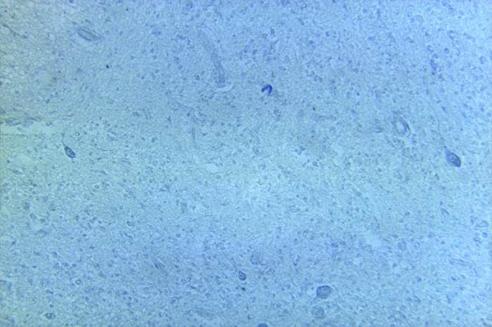
Your draft saves with the myelin model in Process Collection.
Larger stained profiles can be compared by their shape and position. Small dark profiles are present between them, but stain and size alone do not establish every cell type. This field does not show one complete neuron from dendrites to terminals or allow reliable myelin identification. There is no scale bar for measuring actual cell size. These limits distinguish an observation from an anatomical inference.
Investigation question
What you are learning: Use structure-and-function evidence to explain why myelin usually speeds conduction without making an action potential larger.
Before you investigate
Compare signal regeneration in intact, unmyelinated, and damaged pathways.
Step 1
Predict where the action potential must be regenerated, then inspect how the signal moves.
Step 2
Your evidence will appear here after you choose a case, write a prediction, and select Test my prediction.
Your evidence will appear here after you choose a case, write a prediction, and select Test my prediction.
Evidence from the model
What changed: Each nearby membrane region must open channels and regenerate the action potential.
Why it changed: More membrane responds in sequence, so conduction is usually slower than in a similar myelinated axon.
Evidence from the model
What changed: Current spreads beneath myelin and the action potential is regenerated mainly at nodes of Ranvier.
Why it changed: Myelin limits current loss, so the next node reaches threshold sooner without making each action potential larger.
Evidence from the model
What changed: Less local current reaches the next node, so threshold may be delayed or not reached.
Why it changed: Loss of insulation can slow or interrupt conduction. The outcome depends on the location and extent of damage.
A complete text pathway lists every membrane region and explains why myelin changes speed but not action-potential size.
Result: Regeneration occurs along adjacent membrane
Each nearby membrane region must open channels and regenerate the action potential. More membrane responds in sequence, so conduction is usually slower than in a similar myelinated axon.
Path: Action potential → Adjacent membrane → Next membrane region → Axon terminal
Result: Regeneration is concentrated at nodes
Current spreads beneath myelin and the action potential is regenerated mainly at nodes of Ranvier. Myelin limits current loss, so the next node reaches threshold sooner without making each action potential larger.
Path: Node 1 fires → Current spreads under myelin → Node 2 reaches threshold → Signal continues
Result: Current leaks before the next node
Less local current reaches the next node, so threshold may be delayed or not reached. Loss of insulation can slow or interrupt conduction. The outcome depends on the location and extent of damage.
Path: Node 1 fires → Current leaks → Node 2 receives less current → Signal slows or stops
Step 3
Step 4
Your saved record includes the question, prediction, tested case, model evidence, and your explanation.
Lesson 2 investigation
Name the phases at A–F and the line T. Identify the refractory intervals X and Y and explain why a second impulse is harder or impossible during each. Use the voltage scale to calculate the change from A to C. The table supplies the same evidence as the graph.
| Time (ms) | Voltage (mV) |
|---|---|
| 0 | -70 |
| 1 | -70 |
| 1.5 | -55 |
| 1.8 | 0 |
| 2 | +35 |
| 2.4 | 0 |
| 2.7 | -55 |
| 3 | -80 |
| 4 | -70 |
Write a draft to save it with this model in Process Collection. This work is not graded.
A: resting potential (−70 mV). B: depolarization. C: peak (+35 mV). D: repolarization. E: hyperpolarization. F: return to rest. T: threshold (about −55 mV). The rise from A to C is 35 − (−70) = 105 mV.
X: absolute refractory interval, beginning during the upstroke and continuing through much of repolarization. Sodium channels are already activated or inactivated; they cannot support a new action potential until they recover.
Y: relative refractory interval. Some sodium channels have recovered, but remaining potassium conductance and the more negative voltage mean a stronger stimulus is needed. Refractory boundaries depend on channel recovery, not a universal time or voltage.
Use this comparison to revise your notes. Opening it does not mark your response correct or overwrite your work.
Explain how the pump and leak channels support resting voltage. Then explain how a spike can reach the next membrane region without sodium ions travelling the whole axon. Why is the recently active region harder to excite again? Do not credit the pump with rapidly causing repolarization.
| Structure | Evidence to use |
|---|---|
| Sodium–potassium pump | Uses ATP; maintains concentration differences over time. |
| Leak channels | Allow passive ion movement at rest; permeability differs among ions. |
| Voltage-gated channels | Change state with voltage; their opening and recovery shape a spike. |
Write a draft to save it with this model in Process Collection. This work is not graded.
The ATP-powered pump maintains sodium and potassium gradients over time (three Na⁺ out, two K⁺ in). Selective permeability, especially potassium leak, helps make the inside negative at rest.
Sodium entry through voltage-gated channels produces the upstroke. Local current brings the next membrane region to threshold; a new spike is regenerated there. Sodium-channel inactivation and potassium exit drive repolarization, not an instantaneous pump reset.
Recently active channels need to recover. This refractory region limits immediate backward re-excitation during normal propagation. Myelin reduces current loss between nodes; ions do not jump the full axon.
Use this comparison to revise your notes. Opening it does not mark your response correct or overwrite your work.
Investigation question
What you are learning: Connect membrane voltage and graph direction to the channels that are open and the ions that move.
Before you investigate
Read membrane voltage against time and connect each phase to ion-channel evidence.
Step 1
Select a phase. Link its voltage direction to the channel state and ion movement.
Step 2
Your evidence will appear here after you choose a case, write a prediction, and select Test my prediction.
Your evidence will appear here after you choose a case, write a prediction, and select Test my prediction.
Evidence from the model
What changed: The model is near −70 mV. Potassium leak and ion gradients help keep the inside negative relative to the outside.
Why it changed: The sodium-potassium pump maintains the gradients over time; it does not create the rapid spike by itself.
| Phase of the action potential | Membrane voltage |
|---|---|
| Rest | -70 |
| Threshold | -55 |
| Rising | 5 |
| Peak | 30 |
| Falling | -25 |
| Undershoot | -80 |
| Recovery | -70 |
Evidence from the model
What changed: The membrane reaches about −55 mV and enough voltage-gated sodium channels open to sustain rapid depolarization.
Why it changed: A subthreshold change fades. Reaching threshold starts an all-or-none action potential.
| Phase of the action potential | Membrane voltage |
|---|---|
| Rest | -70 |
| Threshold | -55 |
| Rising | 5 |
| Peak | 30 |
| Falling | -25 |
| Undershoot | -80 |
| Recovery | -70 |
Evidence from the model
What changed: Na+ moves into the axon down its electrochemical gradient, and voltage rises rapidly.
Why it changed: Positive charge entering makes the inside less negative and then positive.
| Phase of the action potential | Membrane voltage |
|---|---|
| Rest | -70 |
| Threshold | -55 |
| Rising | 5 |
| Peak | 30 |
| Falling | -25 |
| Undershoot | -80 |
| Recovery | -70 |
Evidence from the model
What changed: Near +30 mV, sodium channels inactivate and delayed potassium channels are open.
Why it changed: The changing channel states turn the voltage away from the peak and begin repolarization.
| Phase of the action potential | Membrane voltage |
|---|---|
| Rest | -70 |
| Threshold | -55 |
| Rising | 5 |
| Peak | 30 |
| Falling | -25 |
| Undershoot | -80 |
| Recovery | -70 |
Evidence from the model
What changed: K+ leaves the axon while sodium channels remain inactivated, so voltage moves negative again.
Why it changed: The loss of positive charge from the inside produces the falling phase.
| Phase of the action potential | Membrane voltage |
|---|---|
| Rest | -70 |
| Threshold | -55 |
| Rising | 5 |
| Peak | 30 |
| Falling | -25 |
| Undershoot | -80 |
| Recovery | -70 |
Evidence from the model
What changed: K+ channels close slowly, so potassium continues leaving after voltage passes its resting value.
Why it changed: Continued positive-charge loss produces hyperpolarization and contributes to the relative refractory period.
| Phase of the action potential | Membrane voltage |
|---|---|
| Rest | -70 |
| Threshold | -55 |
| Rising | 5 |
| Peak | 30 |
| Falling | -25 |
| Undershoot | -80 |
| Recovery | -70 |
Evidence from the model
What changed: Potassium channels close and sodium channels recover from inactivation as voltage returns near rest.
Why it changed: Restored channel readiness allows another action potential. The maintained ion gradients support continued signalling.
| Phase of the action potential | Membrane voltage |
|---|---|
| Rest | -70 |
| Threshold | -55 |
| Rising | 5 |
| Peak | 30 |
| Falling | -25 |
| Undershoot | -80 |
| Recovery | -70 |
The full graph, phase table, voltages, channel states, and ion movements are available together without operating the explorer.
Result: Resting membrane potential
The model is near −70 mV. Potassium leak and ion gradients help keep the inside negative relative to the outside. The sodium-potassium pump maintains the gradients over time; it does not create the rapid spike by itself.
| Phase of the action potential | Membrane voltage |
|---|---|
| Rest | -70 |
| Threshold | -55 |
| Rising | 5 |
| Peak | 30 |
| Falling | -25 |
| Undershoot | -80 |
| Recovery | -70 |
Result: Threshold starts the regenerative response
The membrane reaches about −55 mV and enough voltage-gated sodium channels open to sustain rapid depolarization. A subthreshold change fades. Reaching threshold starts an all-or-none action potential.
| Phase of the action potential | Membrane voltage |
|---|---|
| Rest | -70 |
| Threshold | -55 |
| Rising | 5 |
| Peak | 30 |
| Falling | -25 |
| Undershoot | -80 |
| Recovery | -70 |
Result: The membrane depolarizes
Na+ moves into the axon down its electrochemical gradient, and voltage rises rapidly. Positive charge entering makes the inside less negative and then positive.
| Phase of the action potential | Membrane voltage |
|---|---|
| Rest | -70 |
| Threshold | -55 |
| Rising | 5 |
| Peak | 30 |
| Falling | -25 |
| Undershoot | -80 |
| Recovery | -70 |
Result: Sodium entry stops increasing
Near +30 mV, sodium channels inactivate and delayed potassium channels are open. The changing channel states turn the voltage away from the peak and begin repolarization.
| Phase of the action potential | Membrane voltage |
|---|---|
| Rest | -70 |
| Threshold | -55 |
| Rising | 5 |
| Peak | 30 |
| Falling | -25 |
| Undershoot | -80 |
| Recovery | -70 |
Result: Potassium exit repolarizes the membrane
K+ leaves the axon while sodium channels remain inactivated, so voltage moves negative again. The loss of positive charge from the inside produces the falling phase.
| Phase of the action potential | Membrane voltage |
|---|---|
| Rest | -70 |
| Threshold | -55 |
| Rising | 5 |
| Peak | 30 |
| Falling | -25 |
| Undershoot | -80 |
| Recovery | -70 |
Result: The membrane becomes briefly more negative
K+ channels close slowly, so potassium continues leaving after voltage passes its resting value. Continued positive-charge loss produces hyperpolarization and contributes to the relative refractory period.
| Phase of the action potential | Membrane voltage |
|---|---|
| Rest | -70 |
| Threshold | -55 |
| Rising | 5 |
| Peak | 30 |
| Falling | -25 |
| Undershoot | -80 |
| Recovery | -70 |
Result: Channel states return toward readiness
Potassium channels close and sodium channels recover from inactivation as voltage returns near rest. Restored channel readiness allows another action potential. The maintained ion gradients support continued signalling.
| Phase of the action potential | Membrane voltage |
|---|---|
| Rest | -70 |
| Threshold | -55 |
| Rising | 5 |
| Peak | 30 |
| Falling | -25 |
| Undershoot | -80 |
| Recovery | -70 |
Step 3
Step 4
Your saved record includes the question, prediction, tested case, model evidence, and your explanation.
Lesson 3 investigation
Investigation question
What you are learning: Trace a signal across a chemical synapse and locate whether a disruption changes release, receptor binding, or signal termination.
Before you investigate
Locate a disruption before, at, or after receptor binding.
Step 1
Choose a disrupted step, predict the postsynaptic effect, and then inspect the complete sequence.
Step 2
Your evidence will appear here after you choose a case, write a prediction, and select Test my prediction.
Your evidence will appear here after you choose a case, write a prediction, and select Test my prediction.
Evidence from the model
What changed: The impulse arrives, but fewer vesicles fuse with the presynaptic membrane.
Why it changed: Calcium entry is the link between terminal depolarization and exocytosis.
Evidence from the model
What changed: Neurotransmitter enters the cleft and can be cleared normally, but it cannot activate the blocked receptors.
Why it changed: The disruption occurs after diffusion and before the target-cell electrical effect.
Evidence from the model
What changed: More acetylcholine remains available to bind receptors in the cleft.
Why it changed: Slower breakdown delays signal termination and may extend postsynaptic stimulation.
All three disruptions are described beside the complete presynaptic-to-postsynaptic sequence.
Result: Less neurotransmitter is released
The impulse arrives, but fewer vesicles fuse with the presynaptic membrane. Calcium entry is the link between terminal depolarization and exocytosis.
Path: Impulse arrives → Calcium entry blocked → Fewer vesicles fuse → Weak postsynaptic effect
Result: Release is normal but the target response falls
Neurotransmitter enters the cleft and can be cleared normally, but it cannot activate the blocked receptors. The disruption occurs after diffusion and before the target-cell electrical effect.
Path: Release occurs → Transmitter diffuses → Receptor is blocked → Target response decreases
Result: Acetylcholine acts for longer
More acetylcholine remains available to bind receptors in the cleft. Slower breakdown delays signal termination and may extend postsynaptic stimulation.
Path: Acetylcholine released → Receptors activated → Cholinesterase blocked → Stimulation continues
Step 3
Step 4
Your saved record includes the question, prediction, tested case, model evidence, and your explanation.
Lesson 4 investigation
Identify A–D as grey or white matter. Explain the tissue contents and main role of each type. How does their arrangement differ in the cerebral cortex and spinal cord? Include one reason why white does not mean inactive and grey does not mean unmyelinated neurons only.
Write a draft to save it with this model in Process Collection. This work is not graded.
A and C are grey matter; B and D are white matter. Grey matter contains many cell bodies, dendrites and synapses, supporting local processing. White matter contains many myelinated axons, supporting communication between regions.
Cerebral cortex is outer grey matter with white matter beneath it; deep grey nuclei also exist. Spinal grey matter is central, surrounded by white matter. Both tissue types contain glia and axons; neither colour means that an area is inactive or contains only one kind of cell.
Use this comparison to revise your notes. Opening it does not mark your response correct or overwrite your work.
Investigation question
What you are learning: Classify afferent and efferent routes, then distinguish somatic from autonomic motor output.
Before you investigate
Classify information by direction and effector rather than by neuron shape.
Step 1
Choose an effector, then trace afferent input, central integration, and efferent output.
Step 2
Your evidence will appear here after you choose a case, write a prediction, and select Test my prediction.
Your evidence will appear here after you choose a case, write a prediction, and select Test my prediction.
Evidence from the model
What changed: Motor output travels from the CNS to skeletal muscle.
Why it changed: Somatic pathways control skeletal-muscle effectors, including voluntary movement and reflex responses.
Evidence from the model
What changed: Sympathetic and parasympathetic outputs can change cardiac activity.
Why it changed: The two divisions coordinate rather than acting as universal on and off switches for every organ.
Evidence from the model
What changed: The proposal begins with the effector and ends with the receptor.
Why it changed: Receptors supply sensory input before CNS processing; effectors act after motor output.
Each case includes a complete receptor-to-effector route and its somatic or autonomic classification.
Result: Use a somatic motor pathway
Motor output travels from the CNS to skeletal muscle. Somatic pathways control skeletal-muscle effectors, including voluntary movement and reflex responses.
Path: Skin receptor → Sensory neuron → CNS integration → Somatic motor neuron → muscle
Result: Use an autonomic pathway
Sympathetic and parasympathetic outputs can change cardiac activity. The two divisions coordinate rather than acting as universal on and off switches for every organ.
Path: Internal receptor → Sensory pathway → Brainstem integration → Autonomic output → heart
Result: The proposed order reverses information flow
The proposal begins with the effector and ends with the receptor. Receptors supply sensory input before CNS processing; effectors act after motor output.
Path: Effector? → Motor neuron? → Sensory neuron? → Receptor?
Step 3
Step 4
Your saved record includes the question, prediction, tested case, model evidence, and your explanation.
Lesson 5 investigation
Name A–J on the diagram and add one function for each. Which larger region contains lobes A–D? Which two labelled structures are parts of the brainstem? End with one reason why a symptom alone cannot diagnose damage to a single region.
Write a draft to save it with this model in Process Collection. This work is not graded.
A: frontal lobe—planning and voluntary movement. B: parietal lobe—body sensation and spatial processing. C: temporal lobe—hearing and memory. D: occipital lobe—visual processing. These lobes belong to the cerebrum; its two hemispheres work through connected networks.
E: cerebellum—movement coordination, posture and balance. F: thalamus—relay and organization of much sensory information toward cortex. G: hypothalamus—internal regulation linking autonomic and endocrine responses.
H: pons—relay pathways and contribution to breathing regulation. I: medulla oblongata—vital automatic functions, including cardiovascular and breathing control. H and I are parts of the brainstem. J: spinal cord—ascending/descending pathways and some reflex circuits.
A symptom is evidence to investigate, not a diagnosis. Several connected structures can contribute to the same function, and different causes can produce similar changes.
Use this comparison to revise your notes. Opening it does not mark your response correct or overwrite your work.
Investigation question
What you are learning: Connect synthetic functional evidence to a likely starting region while avoiding unsupported diagnosis or one-region-only claims.
Before you investigate
Match functional evidence to a brain region while keeping the conclusion non-diagnostic.
Step 1
Use a changed function to choose a relevant network, then state what the evidence cannot prove.
Step 2
Your evidence will appear here after you choose a case, write a prediction, and select Test my prediction.
Your evidence will appear here after you choose a case, write a prediction, and select Test my prediction.
Evidence from the model
What changed: Strength is near expected, but balance, timing, and rapid alternating movements are irregular.
Why it changed: Those functions make cerebellar or connected motor pathways relevant, but the evidence alone cannot identify a cause.
Evidence from the model
What changed: The person follows spoken directions but produces short, effortful phrases.
Why it changed: The contrast supports a language-production hypothesis, not a complete diagnosis. Motor-speech and broader language evidence are still needed.
Evidence from the model
What changed: The changed function is automatic and life-sustaining.
Why it changed: The pons and medulla help regulate breathing, but they work with wider neural and chemical-control networks.
All synthetic cases list the observation, likely starting region, connected structures, and limits.
Result: The cerebellum is a useful starting point
Strength is near expected, but balance, timing, and rapid alternating movements are irregular. Those functions make cerebellar or connected motor pathways relevant, but the evidence alone cannot identify a cause.
Path: Movement plan → Motor pathways → Cerebellar comparison → Coordinated output
Result: A language-production network is a candidate
The person follows spoken directions but produces short, effortful phrases. The contrast supports a language-production hypothesis, not a complete diagnosis. Motor-speech and broader language evidence are still needed.
Path: Hear directions → Interpret language → Plan speech → Produce response
Result: Examine the brainstem network
The changed function is automatic and life-sustaining. The pons and medulla help regulate breathing, but they work with wider neural and chemical-control networks.
Path: CO₂ and pH input → Brainstem integration → Motor output → Breathing muscles
Step 3
Step 4
Your saved record includes the question, prediction, tested case, model evidence, and your explanation.
Lesson 6 investigation
Investigation question
What you are learning: Separate the stimulus from the receptor or behavioural response and judge whether the evidence supports adaptation or a fair comparison.
Before you investigate
Interpret adaptation or receptor-density evidence and improve an investigation design.
Step 1
Choose a sensory pattern. Separate the unchanged stimulus from the changing receptor or behavioural response.
Step 2
Your evidence will appear here after you choose a case, write a prediction, and select Test my prediction.
Your evidence will appear here after you choose a case, write a prediction, and select Test my prediction.
Evidence from the model
What changed: The normalized sensory response falls over time even though the odour is held steady.
Why it changed: This pattern supports sensory adaptation; it does not show that the stimulus vanished.
| Time after stimulus begins | Sensory response |
|---|---|
| 0 s | 100 |
| 10 s | 78 |
| 20 s | 61 |
| 40 s | 47 |
| 60 s | 40 |
Evidence from the model
What changed: In supplied trials, two points are reported at smaller separations on the fingertip than on the forearm.
Why it changed: Receptor density, receptive-field size, and neural representation can affect this task. One participant does not establish a universal threshold.
Evidence from the model
What changed: The participant cannot rely on a predictable sequence, and one uncertain report does not decide the threshold.
Why it changed: Random order reduces expectation bias. Repetition reveals variation and supports a more defensible comparison.
The adaptation graph, receptor-density comparison, procedure choices, and evidence limits are provided in text and tables.
Result: The response decreases while the stimulus remains
The normalized sensory response falls over time even though the odour is held steady. This pattern supports sensory adaptation; it does not show that the stimulus vanished.
| Time after stimulus begins | Sensory response |
|---|---|
| 0 s | 100 |
| 10 s | 78 |
| 20 s | 61 |
| 40 s | 47 |
| 60 s | 40 |
Result: Fingertips usually show finer spatial discrimination
In supplied trials, two points are reported at smaller separations on the fingertip than on the forearm. Receptor density, receptive-field size, and neural representation can affect this task. One participant does not establish a universal threshold.
Path: Same blunt contacts → Randomized separations → Repeated reports → Compare medians and overlap
Result: Randomize and repeat the trials
The participant cannot rely on a predictable sequence, and one uncertain report does not decide the threshold. Random order reduces expectation bias. Repetition reveals variation and supports a more defensible comparison.
Path: Define variables → Use safe equal contact → Randomize and repeat → Summarize variation
Step 3
Step 4
Your saved record includes the question, prediction, tested case, model evidence, and your explanation.
Lesson 7 investigation
Use the position clues and the eye figure in Lesson 7. Choose the structure and its function for every row. Then compare with the complete explanation. Your selections save with the eye model; this is practice, not a new graded quiz.
Compare: Sclera → Support and protect the eye. The sclera supports the eye. Its opaque tissue is not the transparent focusing surface.
Compare: Cornea → Refract incoming light strongly. The cornea provides much of the eye's refraction before light reaches the lens.
Compare: Iris → Adjust the size of the opening. The iris changes pupil diameter. It does not change lens curvature.
Compare: Pupil → Let light enter through an opening. The pupil is an opening rather than a separate lens or muscle.
Compare: Lens → Change curvature for accommodation. The lens changes shape during accommodation. Cornea and lens work together to focus light.
Compare: Choroid → Supply blood and absorb stray light. The choroid helps nourish the outer retina and absorbs stray light.
Compare: Retina → Contain photoreceptors and neural circuits. The retina contains rods, cones and circuits that process the receptor signals.
Compare: Rods → Support dim-light sensitivity. Rods support dim-light sensitivity, not fine colour discrimination.
Compare: Cones → Support colour and fine detail. Cones support colour and high acuity in suitable light.
Compare: Fovea → Provide cone-rich central high acuity. The fovea has densely packed cones. It is not the blind spot.
Compare: Optic nerve → Carry retinal neural output. The optic nerve carries neural signals, not a beam of light.
Compare: Aqueous humour → Fill the front fluid compartments. Aqueous humour fills the front compartments and contributes to the eye's internal conditions.
Compare: Vitreous humour → Fill the large space behind the lens. Vitreous humour helps maintain the internal form of the eye.
Compare: Optic disc → Mark the receptor-free exit of axons. The optic disc lacks rods and cones and produces a blind spot.
Selections autosave with this model in Process Collection. This work does not affect grades or course progress.
Investigation question
What you are learning: Separate the eye's optical work from retinal transduction and later neural interpretation.
Before you investigate
Separate the optical pathway from retinal transduction and brain interpretation.
Step 1
Select a location and decide whether it focuses light, transduces light, carries neural output, or supports perception.
Step 2
Your evidence will appear here after you choose a case, write a prediction, and select Test my prediction.
Your evidence will appear here after you choose a case, write a prediction, and select Test my prediction.
Evidence from the model
What changed: Ciliary-muscle action changes lens shape during accommodation.
Why it changed: A more rounded lens bends light more strongly so it can focus on the retina.
Evidence from the model
What changed: Rods and cones change membrane signalling when light reaches them.
Why it changed: The retina converts light into patterned neural activity and begins processing before the optic nerve.
Evidence from the model
What changed: Ganglion-cell axons leave the eye at the optic disc, creating the physiological blind spot.
Why it changed: The visual system normally uses both eyes and surrounding patterns, so the gap is not usually noticed.
Evidence from the model
What changed: The optic nerve carries retinal output; connected brain regions compare and interpret that input.
Why it changed: Perception is not explained by saying the brain simply flips a picture. It depends on distributed neural processing.
The complete light and neural pathway is labelled, with each location's evidence and role stated in text.
Result: The lens becomes more rounded
Ciliary-muscle action changes lens shape during accommodation. A more rounded lens bends light more strongly so it can focus on the retina.
Path: Cornea refracts → Pupil admits light → Lens changes shape → Image reaches retina
Result: Photoreceptors in the retina transduce light
Rods and cones change membrane signalling when light reaches them. The retina converts light into patterned neural activity and begins processing before the optic nerve.
Path: Light reaches retina → Rods and cones respond → Retinal circuits process → Ganglion cells signal
Result: The optic disc has no photoreceptors
Ganglion-cell axons leave the eye at the optic disc, creating the physiological blind spot. The visual system normally uses both eyes and surrounding patterns, so the gap is not usually noticed.
Path: Light enters eye → Light reaches optic disc → No photoreceptor transduces it → No signal from that point
Result: Brain networks interpret the neural pattern
The optic nerve carries retinal output; connected brain regions compare and interpret that input. Perception is not explained by saying the brain simply flips a picture. It depends on distributed neural processing.
Path: Retinal output → Optic nerve → Connected pathways → Visual perception
Step 3
Step 4
Your saved record includes the question, prediction, tested case, model evidence, and your explanation.
Lesson 8 investigation
Follow sound from outside to inside, then distinguish the balance and pressure pathways. Choose a structure and its job for every location. Use the Lesson 8 ear figure as a spatial reference. No listening or volume test is needed.
Compare: Pinna → Collect and direct sound. The pinna collects sound; it is not the transduction site.
Compare: Auditory canal → Carry sound toward the eardrum. The auditory canal carries sound to the tympanum.
Compare: Tympanum → Vibrate with incoming pressure waves. The tympanum or tympanic membrane vibrates with pressure changes.
Compare: Malleus → Receive eardrum vibration as the first ossicle. The malleus receives eardrum movement.
Compare: Incus → Pass vibration between the other ossicles. The incus transfers vibration between malleus and stapes.
Compare: Stapes → Move at the oval window. The stapes moves at the oval window.
Compare: Oval window → Transfer movement into inner-ear fluid. Oval-window movement sets inner-ear fluid in motion.
Compare: Cochlea → Separate sound-frequency responses along its length. The cochlea contains the basilar membrane and organ of Corti; regions differ in frequency response.
Compare: Organ of Corti → House the hearing hair cells on the basilar membrane. The organ of Corti contains the hearing hair cells.
Compare: Hair cells → Convert mechanical bending into signalling changes. Hair-cell bending changes electrical activity and transmitter release to sensory fibres.
Compare: Auditory nerve → Carry hearing information toward the brain. Auditory nerve fibres carry a neural pattern, not sound waves.
Compare: Vestibule → Detect linear acceleration and head tilt. The vestibule contributes information about tilt and linear acceleration.
Compare: Semicircular canals → Detect head rotation. Semicircular canals detect rotation; they are not the main hearing structure.
Compare: Eustachian tube → Help equalize middle-ear pressure. The Eustachian tube helps equalize pressure. It is not the neural or cochlear sound pathway.
Selections autosave with this model in Process Collection. This work does not affect grades or course progress.
Investigation question
What you are learning: Connect mechanical vibration to hair-cell transduction and distinguish hearing evidence from equilibrium evidence.
Before you investigate
Interpret a supplied audiogram and connect mechanical input to hair-cell transduction without diagnosing.
Step 1
Read the pattern before naming a cause. Use the same mechanoreceptor idea for hearing and equilibrium.
Step 2
Your evidence will appear here after you choose a case, write a prediction, and select Test my prediction.
Your evidence will appear here after you choose a case, write a prediction, and select Test my prediction.
Evidence from the model
What changed: The tympanum, ossicles, and oval window transfer vibration into cochlear-fluid movement.
Why it changed: Movement bends hair cells in the organ of Corti, changing the neural signal for hearing.
Evidence from the model
What changed: The supplied thresholds are 10–15 dB HL from 250 to 1000 Hz.
Why it changed: This supports a frequency-specific description. It does not establish perfect hearing in every setting.
| Frequency (Hz) | Measured threshold |
|---|---|
| 250 | 10 |
| 500 | 10 |
| 1000 | 15 |
| 2000 | 25 |
| 4000 | 45 |
| 8000 | 60 |
Evidence from the model
What changed: Thresholds rise from 45 to 60 dB HL at 4000 and 8000 Hz.
Why it changed: The graph supports a high-frequency pattern. Cause requires air-bone comparison, history, examination, and other tests.
| Frequency (Hz) | Measured threshold |
|---|---|
| 250 | 10 |
| 500 | 10 |
| 1000 | 15 |
| 2000 | 25 |
| 4000 | 45 |
| 8000 | 60 |
Evidence from the model
What changed: Fluid lags behind the moving canal and bends receptor structures.
Why it changed: The resulting pattern helps the brain estimate rotational movement; it is not a hearing test.
The complete threshold table, graph description, hearing pathway, balance pathway, and interpretation limit are available together.
Result: Cochlear hair cells transduce sound
The tympanum, ossicles, and oval window transfer vibration into cochlear-fluid movement. Movement bends hair cells in the organ of Corti, changing the neural signal for hearing.
Path: Sound vibrates tympanum → Ossicles move → Cochlear fluid shifts → Hair cells signal
Result: Thresholds are relatively low in this range
The supplied thresholds are 10–15 dB HL from 250 to 1000 Hz. This supports a frequency-specific description. It does not establish perfect hearing in every setting.
| Frequency (Hz) | Measured threshold |
|---|---|
| 250 | 10 |
| 500 | 10 |
| 1000 | 15 |
| 2000 | 25 |
| 4000 | 45 |
| 8000 | 60 |
Result: High-frequency thresholds are elevated
Thresholds rise from 45 to 60 dB HL at 4000 and 8000 Hz. The graph supports a high-frequency pattern. Cause requires air-bone comparison, history, examination, and other tests.
| Frequency (Hz) | Measured threshold |
|---|---|
| 250 | 10 |
| 500 | 10 |
| 1000 | 15 |
| 2000 | 25 |
| 4000 | 45 |
| 8000 | 60 |
Result: Semicircular canals detect angular acceleration
Fluid lags behind the moving canal and bends receptor structures. The resulting pattern helps the brain estimate rotational movement; it is not a hearing test.
Path: Head begins rotating → Canal fluid lags → Hair cells bend → Vestibular signal changes
Step 3
Step 4
Your saved record includes the question, prediction, tested case, model evidence, and your explanation.
Lesson 9 investigation
Use the body map in Lesson 9. Match every location to the gland or region. A source location is the start of a hormone explanation, not its target. The two adrenal regions belong to the same gland.
Compare: Hypothalamus. The hypothalamus links neural information with endocrine regulation.
Compare: Pituitary. The anterior pituitary makes several hormones; the posterior pituitary releases hypothalamic ADH.
Compare: Thyroid. The thyroid produces thyroxine; its C cells produce calcitonin.
Compare: Parathyroids. Parathyroid glands produce PTH, not thyroxine.
Compare: Pancreatic islets. Islet alpha and beta cells produce glucagon and insulin.
Compare: Adrenal cortex. The adrenal cortex produces cortisol and aldosterone.
Compare: Adrenal medulla. The adrenal medulla releases epinephrine and norepinephrine.
Selections autosave with this model in Process Collection. This work does not affect grades or course progress.
Investigation question
What you are learning: Identify receptor, control centre, and effector roles, then test whether a loop is truly negative feedback.
Before you investigate
Build a receptor-control centre-effector loop and test whether the response opposes the disturbance.
Step 1
Inspect a loop, identify what is missing or reversed, and repair the return effect.
Step 2
Your evidence will appear here after you choose a case, write a prediction, and select Test my prediction.
Your evidence will appear here after you choose a case, write a prediction, and select Test my prediction.
Evidence from the model
What changed: Skin blood flow and sweating can increase under appropriate conditions, increasing heat loss.
Why it changed: The return effect reduces the original temperature rise, establishing negative feedback.
Evidence from the model
What changed: The diagram ends at sweat-gland activity and never shows what happens to temperature.
Why it changed: Add increased evaporative heat loss and a reduced temperature disturbance to establish the return relationship.
Evidence from the model
What changed: Temperature rises and the proposed effector produces additional heat.
Why it changed: That response is not negative feedback unless another effect reverses the direction of change.
Evidence from the model
What changed: The hormone may pass the cell in blood without binding.
Why it changed: Hormones travel widely, but only receptor-bearing target cells respond through that signalling pathway.
Each complete and incomplete loop is written as a sequence with the direction of change stated explicitly.
Result: The response opposes rising temperature
Skin blood flow and sweating can increase under appropriate conditions, increasing heat loss. The return effect reduces the original temperature rise, establishing negative feedback.
Path: Temperature rises → Receptors signal → Effectors increase heat loss → Temperature moves toward range
Result: Sweating alone does not complete the loop
The diagram ends at sweat-gland activity and never shows what happens to temperature. Add increased evaporative heat loss and a reduced temperature disturbance to establish the return relationship.
Path: Temperature rises → Sweat glands activate → Evaporation increases → Add: temperature rise is reduced
Result: The proposed response amplifies the disturbance
Temperature rises and the proposed effector produces additional heat. That response is not negative feedback unless another effect reverses the direction of change.
Path: Temperature rises → Control signal → Heat production rises → Disturbance becomes larger
Result: The circulating hormone produces no specific response in that cell
The hormone may pass the cell in blood without binding. Hormones travel widely, but only receptor-bearing target cells respond through that signalling pathway.
Path: Hormone released → Hormone circulates → No matching receptor → No pathway-specific response
Step 3
Step 4
Your saved record includes the question, prediction, tested case, model evidence, and your explanation.
Lesson 10 investigation
Investigation question
What you are learning: Trace a hormone route accurately and avoid treating the pituitary as an independent master controller.
Before you investigate
Compare an anterior-pituitary axis with a posterior-pituitary neural-release pathway.
Step 1
Select a hormone route. Trace where the signal is made, released, received, and regulated.
Step 2
Your evidence will appear here after you choose a case, write a prediction, and select Test my prediction.
Your evidence will appear here after you choose a case, write a prediction, and select Test my prediction.
Evidence from the model
What changed: Hypothalamic signals influence TSH, and TSH stimulates the thyroid to release thyroxine.
Why it changed: Thyroxine feeds back to the hypothalamus and pituitary, helping regulate further release.
Evidence from the model
What changed: The anterior pituitary makes and releases hGH in response to hypothalamic control.
Why it changed: Effects depend on age, nutrition, receptors, and related growth signals; the pituitary does not work alone.
Evidence from the model
What changed: Hypothalamic neurons synthesize ADH. Their axon terminals release it from the posterior pituitary.
Why it changed: The posterior pituitary is a release site, not the site where ADH is made.
All routes state source, release site, target, effect, and feedback without requiring interaction.
Result: TSH links the anterior pituitary to the thyroid
Hypothalamic signals influence TSH, and TSH stimulates the thyroid to release thyroxine. Thyroxine feeds back to the hypothalamus and pituitary, helping regulate further release.
Path: Hypothalamus signals → Anterior pituitary releases TSH → Thyroid releases thyroxine → Thyroxine feeds back
Result: hGH acts on several target tissues
The anterior pituitary makes and releases hGH in response to hypothalamic control. Effects depend on age, nutrition, receptors, and related growth signals; the pituitary does not work alone.
Path: Hypothalamic control → Anterior pituitary releases hGH → Target tissues respond → Signals feed back
Result: ADH is made in the hypothalamus and released posteriorly
Hypothalamic neurons synthesize ADH. Their axon terminals release it from the posterior pituitary. The posterior pituitary is a release site, not the site where ADH is made.
Path: Osmoreceptors change → Hypothalamus makes ADH → Posterior pituitary releases ADH → Kidney responds
Step 3
Step 4
Your saved record includes the question, prediction, tested case, model evidence, and your explanation.
Lesson 11 investigation
Investigation question
What you are learning: Read direction and timing in supplied data, then connect the graph to ADH source, release, kidney target, and effect.
Before you investigate
Use direction and timing in a graph to explain water-balance feedback.
Step 1
Run a supplied-data case. Compare blood concentration, ADH action, and urine volume over time.
Step 2
Your evidence will appear here after you choose a case, write a prediction, and select Test my prediction.
Your evidence will appear here after you choose a case, write a prediction, and select Test my prediction.
Evidence from the model
What changed: Blood concentration and ADH rise while urine volume falls and urine becomes more concentrated.
Why it changed: Returning more water to the blood opposes the rise in blood concentration.
| Observation time | Blood concentration | ADH signal | Urine volume |
|---|---|---|---|
| Start | 100 | 100 | 100 |
| 1 h | 103 | 132 | 78 |
| 2 h | 106 | 168 | 52 |
| Recovery | 104 | 145 | 61 |
Evidence from the model
What changed: Less water is reabsorbed from collecting ducts, even while blood concentration rises.
Why it changed: The pattern follows reduced ADH action. It cannot diagnose why the pathway changed.
| Observation time | Blood concentration | ADH action | Urine volume |
|---|---|---|---|
| Start | 100 | 100 | 100 |
| 1 h | 104 | 76 | 121 |
| 2 h | 108 | 58 | 148 |
| Recovery | 110 | 52 | 158 |
Evidence from the model
What changed: After water becomes available, blood concentration and ADH fall toward baseline while urine volume starts to rise.
Why it changed: The earlier conservation response opposed water loss, and the reduced disturbance now lowers the signal.
| Observation time | Blood concentration | ADH signal | Urine volume |
|---|---|---|---|
| Start | 106 | 168 | 52 |
| 1 h | 104 | 144 | 59 |
| 2 h | 102 | 119 | 76 |
| Recovery | 100 | 100 | 96 |
Every graph value appears in a table, followed by a complete source-target-effect explanation and a non-diagnostic limit.
Result: ADH rises as the body conserves water
Blood concentration and ADH rise while urine volume falls and urine becomes more concentrated. Returning more water to the blood opposes the rise in blood concentration.
| Observation time | Blood concentration | ADH signal | Urine volume |
|---|---|---|---|
| Start | 100 | 100 | 100 |
| 1 h | 103 | 132 | 78 |
| 2 h | 106 | 168 | 52 |
| Recovery | 104 | 145 | 61 |
Result: Urine stays dilute and high in volume
Less water is reabsorbed from collecting ducts, even while blood concentration rises. The pattern follows reduced ADH action. It cannot diagnose why the pathway changed.
| Observation time | Blood concentration | ADH action | Urine volume |
|---|---|---|---|
| Start | 100 | 100 | 100 |
| 1 h | 104 | 76 | 121 |
| 2 h | 108 | 58 | 148 |
| Recovery | 110 | 52 | 158 |
Result: The signals move back toward baseline
After water becomes available, blood concentration and ADH fall toward baseline while urine volume starts to rise. The earlier conservation response opposed water loss, and the reduced disturbance now lowers the signal.
| Observation time | Blood concentration | ADH signal | Urine volume |
|---|---|---|---|
| Start | 106 | 168 | 52 |
| 1 h | 104 | 144 | 59 |
| 2 h | 102 | 119 | 76 |
| Recovery | 100 | 100 | 96 |
Step 3
Step 4
Your saved record includes the question, prediction, tested case, model evidence, and your explanation.
Lesson 12 investigation
Investigation question
What you are learning: Use paired hormone and target evidence to distinguish TSH-thyroxine control from PTH-calcitonin calcium control.
Before you investigate
Use paired hormone values to distinguish expected response from a possible pathway-level mismatch.
Step 1
Choose the regulated variable, read the paired hormone evidence, and locate the feedback mismatch.
Step 2
Your evidence will appear here after you choose a case, write a prediction, and select Test my prediction.
Your evidence will appear here after you choose a case, write a prediction, and select Test my prediction.
Evidence from the model
What changed: Low thyroxine reduces negative feedback, so TSH rises, but thyroxine remains below the expected range.
Why it changed: A thyroid-level production problem is one candidate. The pair does not prove a single cause.
Evidence from the model
What changed: The target hormone is low without the expected increase in TSH.
Why it changed: Hypothalamic or pituitary signalling is one candidate, but illness and medication context can also alter the pattern.
Evidence from the model
What changed: PTH is high, but blood calcium remains low.
Why it changed: Inspect kidney, bone, vitamin D, intestinal absorption, and calcium supply instead of assuming PTH underproduction.
Each synthetic pattern lists variable, pituitary or gland signal, target response, and evidential limit.
Result: The pituitary drive is high while thyroid output remains low
Low thyroxine reduces negative feedback, so TSH rises, but thyroxine remains below the expected range. A thyroid-level production problem is one candidate. The pair does not prove a single cause.
Path: Thyroxine low → Feedback inhibition falls → TSH rises → Thyroxine remains low
Result: Thyroid output and pituitary drive are both low
The target hormone is low without the expected increase in TSH. Hypothalamic or pituitary signalling is one candidate, but illness and medication context can also alter the pattern.
Path: Thyroxine low → Expected feedback signal → TSH stays low → Thyroid drive remains low
Result: PTH responds in the expected direction
PTH is high, but blood calcium remains low. Inspect kidney, bone, vitamin D, intestinal absorption, and calcium supply instead of assuming PTH underproduction.
Path: Calcium falls → PTH rises → Bone/kidney/intestine responses → Calcium still low
Step 3
Step 4
Your saved record includes the question, prediction, tested case, model evidence, and your explanation.
Lesson 13 investigation
Complete all rows using the Unit A hormone pathways. A target must have compatible receptors. Use short source, target and effect choices, then compare each row with the explanation. This table includes norepinephrine in its adrenal hormone role, distinct from its synaptic role.
Compare: Anterior pituitary → Many tissues, including liver, bone and muscle → Support growth and metabolism. Anterior-pituitary hGH acts directly and through growth factors. Effects depend on age and target tissue.
Compare: Anterior pituitary → Thyroid gland → Stimulate thyroxine release. TSH is a tropic hormone: it stimulates the thyroid, which releases thyroxine.
Compare: Anterior pituitary → Adrenal cortex → Stimulate cortisol release. ACTH stimulates cortisol release from the cortex, not epinephrine release from the medulla.
Compare: Hypothalamus; posterior-pituitary release → Kidney collecting ducts → Increase water reabsorption. ADH is made in hypothalamic neurons and released through the posterior pituitary. Collecting ducts conserve water.
Compare: Thyroid follicle cells → Receptor-bearing metabolic tissues → Increase metabolic activity. Thyroxine acts through receptors to change metabolic activity and feeds back on central stimulation.
Compare: Thyroid C cells → Bone and kidney → Can reduce blood calcium. Thyroid C cells release calcitonin. It can oppose a calcium rise but is not as important as PTH in normal adult calcium regulation.
Compare: Parathyroid glands → Bone, kidney; indirect intestine → Raise blood calcium. PTH coordinates calcium movement in bone and kidney and intestinal uptake indirectly through active vitamin D.
Compare: Pancreatic beta cells → Liver, muscle and fat → Promote uptake/storage; reduce liver glucose output. Insulin has tissue-specific effects. It does not make all cells equally permeable to glucose.
Compare: Pancreatic alpha cells → Mainly liver → Increase liver glucose output. Glucagon acts mainly on the liver; glycogen breakdown and new glucose production support blood glucose.
Compare: Adrenal cortex → Receptor-bearing fuel-regulation tissues → Support sustained fuel availability. Cortisol supports longer metabolic responses. Feedback normally reduces upstream ACTH stimulation.
Compare: Adrenal cortex → Kidney tubules → Increase sodium reabsorption and potassium secretion. Aldosterone promotes renal sodium reabsorption and potassium secretion. It is not controlled solely by ACTH.
Compare: Adrenal medulla → Heart, vessels and other responsive tissues → Support rapid sympathetic responses. This row covers two catecholamines from the adrenal medulla. They support rapid, receptor-dependent sympathetic effects.
Selections autosave with this model in Process Collection. This work does not affect grades or course progress.
Each row states a controlled teaching case, not a person's test result. Choose the immediate effect most consistent with the stated change. Cases do not provide a diagnosis or treatment. Hormone deficiency, excess and target resistance are different mechanisms.
Compare: Reduced growth signalling before growth plates close. Reduced growth signalling may reduce growth rate; other causes of slow growth must be considered.
Compare: Increased growth-related effects; age matters. Effects differ before and after growth plates close; it does not always make an adult taller.
Compare: Less thyroid stimulation. Less tropic stimulation tends to lower thyroid output; compare TSH and thyroxine together.
Compare: Less cortisol stimulation. Less ACTH tends to reduce cortisol output. ACTH is not the main controller of aldosterone.
Compare: Greater volume of dilute urine. Less water reabsorption can produce large volumes of dilute urine. Target resistance can produce a similar pattern.
Compare: Reduced urine volume; possible water retention. More water can be retained; blood sodium may become diluted. This is a model, not a reason to change fluid intake.
Compare: Reduced metabolic activity. Metabolic activity may decline. A paired TSH value helps locate a possible pathway level.
Compare: Increased metabolic activity. Metabolic activity may rise and normal feedback tends to reduce TSH.
Compare: Less calcium-raising response. The normal calcium-raising response is weakened.
Compare: More calcium-raising response. Blood calcium may rise as bone, kidney and intestinal responses change.
Compare: Weaker calcium-lowering influence, often a small adult effect. A simple equal-and-opposite-to-PTH disease claim is not justified; calcitonin normally has a smaller adult regulatory role.
Compare: Higher blood glucose from reduced effective insulin. Effective glucose regulation is reduced. Low supply and resistance require different evidence.
Compare: Lower glucose from excess effective insulin. Blood glucose may fall too far. Do not use this model to change medication.
Compare: Greater liver glucose output. Increased liver output can raise blood glucose.
Compare: Reduced renal sodium retention. Sodium retention falls and potassium regulation may also change.
Compare: More sodium retention and potassium loss. More sodium retention and potassium secretion can alter water/salt balance.
Compare: More sustained fuel-mobilizing effects. Fuel metabolism and other target responses can remain altered; the pattern is not a diagnosis.
Compare: Reduced support for a prolonged stress response. Metabolic support for a prolonged stress response may be reduced.
Compare: Stronger rapid sympathetic effects. Circulatory and fuel responses may increase, depending on receptors.
Compare: Reduced adrenal contribution to rapid stress response. The adrenal contribution may fall, but sympathetic nerves can still act directly on organs.
Selections autosave with this model in Process Collection. This work does not affect grades or course progress.
Investigation question
What you are learning: Explain how pancreatic islets and adrenal regions produce different signals that can overlap while serving different control needs.
Before you investigate
Interpret glucose curves and compare rapid adrenal-medulla signalling with longer adrenal-cortex responses.
Step 1
Run a glucose or stress scenario. Use time-series or pathway evidence to separate overlapping hormone actions.
Step 2
Your evidence will appear here after you choose a case, write a prediction, and select Test my prediction.
Your evidence will appear here after you choose a case, write a prediction, and select Test my prediction.
Evidence from the model
What changed: Glucose rises after a meal and then falls as the insulin branch becomes more active.
Why it changed: Beta cells release insulin, and responsive tissues increase glucose uptake or storage. The return toward range reduces the original stimulus.
| Time (minutes) | Blood glucose |
|---|---|
| 0 | 5 |
| 30 | 7.4 |
| 60 | 7.8 |
| 120 | 6.1 |
| 180 | 5.2 |
Evidence from the model
What changed: The curve rises above 11 mmol/L and stays high through 180 minutes.
Why it changed: A low insulin signal can reduce uptake and storage responses, but the synthetic curve alone cannot diagnose a cause.
| Time (minutes) | Blood glucose |
|---|---|
| 0 | 5.3 |
| 30 | 8.8 |
| 60 | 11.7 |
| 120 | 12.1 |
| 180 | 10.9 |
Evidence from the model
What changed: Glucose stays elevated longer even though an insulin signal is present.
Why it changed: Reduced receptor or downstream responsiveness can weaken target-cell uptake and storage.
| Time (minutes) | Blood glucose |
|---|---|
| 0 | 5.4 |
| 30 | 8.5 |
| 60 | 10.4 |
| 120 | 9.3 |
| 180 | 7.8 |
Evidence from the model
What changed: Glucose falls during activity and then moves back toward its starting range.
Why it changed: Glucagon and other signals can support liver glucose output as fuel demand continues.
| Time (minutes) | Blood glucose |
|---|---|
| 0 | 5.2 |
| 30 | 4.7 |
| 60 | 4.2 |
| 120 | 4.5 |
| 180 | 4.9 |
Evidence from the model
What changed: Sympathetic neurons stimulate the adrenal medulla, and epinephrine rises quickly.
Why it changed: This route can rapidly change cardiac output, airflow, blood distribution, and fuel availability.
Evidence from the model
What changed: Hypothalamic control and ACTH stimulate the adrenal cortex while rapid medulla effects may already be occurring.
Why it changed: Cortisol changes fuel use over longer time scales, so several control pathways can overlap.
All glucose values and stress pathways are available in tables and ordered text, with a health-data limitation.
Result: Glucose returns toward its starting range
Glucose rises after a meal and then falls as the insulin branch becomes more active. Beta cells release insulin, and responsive tissues increase glucose uptake or storage. The return toward range reduces the original stimulus.
| Time (minutes) | Blood glucose |
|---|---|
| 0 | 5 |
| 30 | 7.4 |
| 60 | 7.8 |
| 120 | 6.1 |
| 180 | 5.2 |
Result: Glucose remains elevated
The curve rises above 11 mmol/L and stays high through 180 minutes. A low insulin signal can reduce uptake and storage responses, but the synthetic curve alone cannot diagnose a cause.
| Time (minutes) | Blood glucose |
|---|---|
| 0 | 5.3 |
| 30 | 8.8 |
| 60 | 11.7 |
| 120 | 12.1 |
| 180 | 10.9 |
Result: A strong signal can have a weak effect
Glucose stays elevated longer even though an insulin signal is present. Reduced receptor or downstream responsiveness can weaken target-cell uptake and storage.
| Time (minutes) | Blood glucose |
|---|---|
| 0 | 5.4 |
| 30 | 8.5 |
| 60 | 10.4 |
| 120 | 9.3 |
| 180 | 7.8 |
Result: Falling glucose recruits a different response
Glucose falls during activity and then moves back toward its starting range. Glucagon and other signals can support liver glucose output as fuel demand continues.
| Time (minutes) | Blood glucose |
|---|---|
| 0 | 5.2 |
| 30 | 4.7 |
| 60 | 4.2 |
| 120 | 4.5 |
| 180 | 4.9 |
Result: The adrenal medulla supports the immediate phase
Sympathetic neurons stimulate the adrenal medulla, and epinephrine rises quickly. This route can rapidly change cardiac output, airflow, blood distribution, and fuel availability.
Path: Challenge detected → Sympathetic output → Adrenal medulla releases epinephrine → Rapid target responses
Result: Cortisol supports a longer response
Hypothalamic control and ACTH stimulate the adrenal cortex while rapid medulla effects may already be occurring. Cortisol changes fuel use over longer time scales, so several control pathways can overlap.
Path: Hypothalamic signal → Anterior pituitary releases ACTH → Cortex releases cortisol → Cortisol effects and feedback
Step 3
Step 4
Your saved record includes the question, prediction, tested case, model evidence, and your explanation.
Resources
Use this quick reference when a label or supporting term appears. Core Vocabulary is where you build the larger concept relationships.
| Resting membrane potential | Approximately −70 mV in the course model |
|---|---|
| Blood-glucose data | Units and reference ranges are supplied with each case |
| Instructional datasets | Clearly labelled as sourced or synthetic |
Resources
This course combines Alberta curriculum guidance with the class notes, local textbook chapters, and reviewed media.
Alberta Biology 20–30 Program of Studies and Biology 30 Student-based Performance Standards guide required learning and practice.
Teacher daily plans and Unit A Chapter 11–13 notes guide topic order. Textbook pages are available locally in the Textbook Library.
Course diagrams are original redraws or teacher-authorized generated illustrations used for private course development. Each figure includes an adjacent explanation.
Video titles, providers, and direct YouTube links appear beside each preview. Every required checkpoint also has a complete illustrated course pathway.
The neuron, voltage and tissue tasks use course-authored diagrams. The brain identification task reuses the lesson schematic. Scientific checks use OpenStax Nervous Tissue, The Action Potential, and The Central Nervous System.
The real spinal-cord micrograph is CDC PHIL image 2756, credited to CDC / Dr. Karp, Emory University. Local model observations use this image with an explanation of its limits. The CDC does not endorse this course.
Video excerpts are paired with local clarification notes and complete illustrated walkthroughs. Use the course wording for accurate labels when automatic captions miss a scientific term.